审阅草稿。输入隔离、参考复制入口及文档转换已通过；三模型解题、Gold评分与难度校准尚未完成。
银行风险变化诊断与尽调决策包
你将作为我们的高级财务分析师，完成一项明确为假设性的北新英格兰地区银行组合评估。管理层需要了解截至2025年6月30日，样本内银行的经营表现和财务风险如何演变，哪些机构值得优先跟进，以及有限的复核资源应投向何处。本次结论用于内部管理决策，不应外推为对全国银行业的判断。
请交付regional_bank_risk_model.xlsx。工作簿应提供可复核的银行季度分析，清楚展示样本覆盖、机构对应关系、经营与风险指标、时间趋势、同类比较、组合变化归因、优先级依据和支持管理层复核的明细。模型应能说明组合结果的变化在多大程度上来自持续机构自身表现，又在多大程度上来自样本构成或规模权重变化。
请交付operating_performance_diagnosis.docx。报告应形成完整判断，而不是简单排列若干比率或列出表现最差的银行。请综合盈利能力、资本承受力、信用质量、资金状况、贷款结构、增长和业务特征，指出主要变化驱动与持续落后机构。执行摘要请明确呈现样本整体资产回报率、非应计资产率、净核销率和总风险资本比率。对于重要变化，请提出并比较合理的竞争性解释，说明哪些解释获得现有证据支持、哪些仍需验证，不要把观察性归因表述为已经证明的因果关系。报告应给出可执行的组合层面和机构层面改进建议，并明确推荐管理层采用的优先行动方案。
请交付priority_follow_up_brief.docx。该简报应选择一个有证据支持的优先跟进范围，逐家说明关注理由、需要管理层回答的问题、下一步资料请求、建议行动及后续监测重点。优先范围不设固定银行名单或固定数量，但选择必须能够从模型和报告中核验。
评估期间为2022年3月31日至2025年6月30日。跟进方案应支持未来九十天的管理安排。请在全部交付物中清楚陈述结果所依赖的假设和限制。
输入原件
FDIC_RMS_Manual_3.2_Loans.pdfOCC_Rating_Credit_Risk.pdffdic_api_documentation.htmlfdic_financials_VT_NH_ME_2022_2025.csvfdic_financials_supplement_official.csv（同一范围的官方补充快照，含缺失的分母与指标；使用前核对与原快照的对应及差异）fdic_institutions_VT_NH_ME.csvfinancial_definitions.yamlinstitution_definitions.yaml
本题为新拟分析委托；所有随题输入均为真实公开原件。这是基于所给快照的回顾分析，不是分析期末当时可得信息回测。输入路径为 /app/input_files/，交付路径为 /app/output/。
题面附录：完整源文件清单
源文件清单
/app/input_files/ 下的相对路径 |
内容与口径 |
|---|---|
FDIC_RMS_Manual_3.2_Loans.pdf |
FDIC贷款审查手册原件，按文件版本用于研究指导。 |
OCC_Rating_Credit_Risk.pdf |
OCC信用风险评级手册原件。 |
fdic_api_documentation.html |
FDIC BankFind接口官方文档快照。 |
fdic_financials_VT_NH_ME_2022_2025.csv |
FDIC财务快照；CERT、REPDTE及财务字段，定义和单位见随附官方字段说明。 |
fdic_financials_supplement_official.csv |
同范围FDIC补充财务快照；含原快照缺少的分子分母，使用前核对键和重合字段。 |
fdic_institutions_VT_NH_ME.csv |
FDIC机构较晚快照；CERT、名称、州、ACTIVE及报告期等，不是历史状态记录。 |
financial_definitions.yaml |
FDIC财务字段、公式和单位官方定义。 |
institution_definitions.yaml |
FDIC机构字段官方定义。 |
输入原件 · 8 个
| 文件 | 字节 | SHA256 |
|---|---|---|
| FDIC_RMS_Manual_3.2_Loans.pdf | 2,085,732 | b4a73592356ca77963ce25022b1bf12690040928cfb653301ca91ae99645c87b |
| OCC_Rating_Credit_Risk.pdf | 1,467,311 | a0c2b4653965d6d2f6b8ab80c5cd0e2fdb016239c93e3582357134d3a4270dd6 |
| fdic_api_documentation.html | 32,871 | 6094a3a9a88abf00c49b363d08248a12af69b8c9df8585665bfdfd4b7908a39d |
| fdic_financials_VT_NH_ME_2022_2025.csv | 186,542 | 47a3f8edee55758bfe23bb7e989371f7074a5057fac173a8b17d8a5b956068da |
| fdic_financials_supplement_official.csv | 160,717 | 8466c3c3f42be002826ed94e5c2d3ce0873abb6c7b2c1c06dd2665b63e24090f |
| fdic_institutions_VT_NH_ME.csv | 292,401 | cdf42c40e7797fd6afd8a0d74f27d375e4bc1d675345be8b2324afc337f2b9a5 |
| financial_definitions.yaml | 616,633 | b257457e4e821d6a0d9f88ffc4e6e0da80e4ccf67fa394cadb21587b50b23d59 |
| institution_definitions.yaml | 94,832 | 6ed1763c66a9e240904a45712b23d825c0f31beaadb6cd0213fc1bf00b2af1b9 |
参考产物
operating_performance_diagnosis.docx
operating_performance_diagnosis.docx
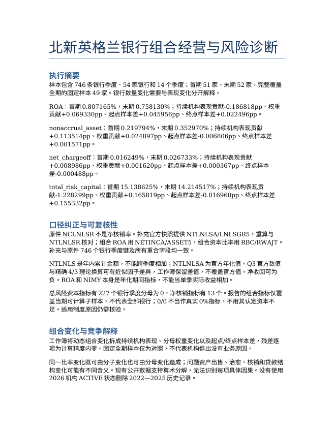
完整正文
北新英格兰银行组合经营与风险诊断 执行摘要 样本包含746 条银行季度、54 家银行和14 个季度；首期51 家，末期52 家，完整覆盖 全期的固定样本49 家。银行数量变化需要与表现变化分开解释。 ROA：首期0.807165%，末期0.758130%；持续机构表现贡献-0.186818pp、权重 贡献+0.069330pp、起点样本差+0.045956pp、终点样本差+0.022496pp。 nonaccrual_asset：首期0.219794%，末期0.352970%；持续机构表现贡献 +0.113514pp、权重贡献+0.024897pp、起点样本差-0.006806pp、终点样本差 +0.001571pp。 net_chargeoff：首期0.016249%，末期0.026733%；持续机构表现贡献 +0.008986pp、权重贡献+0.001620pp、起点样本差+0.000367pp、终点样本 差-0.000488pp。 total_risk_capital：首期15.138625%，末期14.214517%；持续机构表现贡 献-1.228299pp、权重贡献+0.165819pp、起点样本差-0.016960pp、终点样本差 +0.155332pp。 口径纠正与可复核性 原件NCLNLSR 不是净核销率。补充官方快照提供NTLNLSA/LNLSGR5，重算与 NTLNLSR 核对；组合ROA 用NETINCA/ASSET5，组合资本比率用RBC/RWAJT。 补充与原件746 个银行季度键及所有重合字段均一致。 NTLNLS 是年内累计金额，不能跨季度相加；NTLNLSA 为官方年化值。Q3 官方数值 与精确4/3 理论换算可有近似因子差异，工作簿保留差值，不覆盖官方值。净收回可为 负。ROA 和NIMY 本身是年化期间指标，不能当单季实际收益相加。 总风险资本指标有227 个银行季度分母为0，净核销指标有13 个。报告的组合指标仅覆 盖当期可计算子样本，不代表全部银行；0/0 不当作真实0%指标，不用其认定资本不 足。适用制度原因仍需核验。 组合变化与竞争解释 工作簿将动态组合变化拆成持续机构表现、分母权重变化以及起点/终点样本差，残差逐 项为计算精度内零。固定全期样本仅为对照，不代表机构退出没有业务原因。 同一比率变化既可由分子变化也可由分母变化造成；问题资产出售、治愈、核销和贷款结 构变化可能有不同含义。现有公开数据支持算术分解，无法识别每项具体因果。没有使用 2026 机构ACTIVE 状态删除2022—2025 历史记录。 盈利、资本、信用与资金的联合判断 选择9 家进入跟进范围：非应计资产率同比变化前5、当前ROA 最低3 与当前资本比率 最低3 的并集。所有选择是样本内相对信号，既非监管评级，也不表示达到了法定不合格 门槛。 逐家表同时列净核销率、资本、盈利、权益承受力、贷款/存款与房地产贷款结构。相对 风险信号不能替代信用档案、存款集中度与期限结构核验。LNRE 是广义房地产，不能据 此直接宣称商业地产集中度。 持续落后与同业对照 定义持续盈利落后为完整覆盖4 个6 月同季、且每期ROA 严格低于当期动态样本银行 ROA 中位数；识别10 家：17743 SACO & BIDDEFORD SAVINGS INSTITUTION；18031 WOODSVILLE GUARANTY SAVINGS BANK；27824 SALEM CO-OPERATIVE BANK；28155 PROFILE BANK；28288 AUBURN SAVINGS BANK, FSB；28369 ROCKLAND SAVINGS BANK, FSB；29636 FIRST FEDERAL SAVINGS AND LOAN ASSOCIATION OF BATH；29744 FIRST SEACOAST BANK；30878 BAR HARBOR SAVINGS AND LOAN ASSOCIATION；59176 THE MILLYARD BANK。本定义是样本相对筛查，不代表 亏损或监管评级。缺期不当作落后或改善，使用同季避免年内累计指标的季节口径错配。 当前同业分别按历史财务州及期末资产规模分组；规模分界为本样本资产中位数862811 千美元，中位数相等归较小组。组内中位数包含本机构，工作簿逐指标披露可计算银行数 及偏离值。单一州或规模不能控制所有商业模式差异，不将其当作因果基准。 资源方案与建议 方案A 平均分配复核资源覆盖全部末期银行，覆盖广但难以立即解释最重要变化；方案B 先覆盖多类相对风险信号并集，再以下一季度材料复核其余样本。建议采用方案B，保留 同州和同规模相对比较，不把某个排行榜直接变成退出决定。 0–30 天分析岗完成数据桥接并收取资料；31–60 天由独立信用复核岗审阅贷款迁徙、地 产细分及融资信息；61–90 天管理层依据结果决定限额、集中度与监测安排。没有收 据/底稿支持时事项保持未完成。 参考手册的用途与限制 FDIC RMS Loans 第3.2-3 至3.2-4 页（PDF3–4）强调书面贷款政策、贷款审查和独 立复核，并明确不提出通用贷款比率标准；因此本报告不把自设阈值冒充监管界限。 OCC Rating Credit Risk 正文第1 页（PDF3）说明风险评级应符合机构业务复杂度， 没有一种系统适合所有银行。本题应用为复核问题设计，不能只凭公开比率给真实银行下 监管分类结论。 FDIC 贷款手册为2026 版本，机构表亦晚于2025 期末；本题是以随附材料进行回顾分 析，不是还原当时可得信息回测。结论不外推全国，不宣称90 天计划实际执行。
全部页面
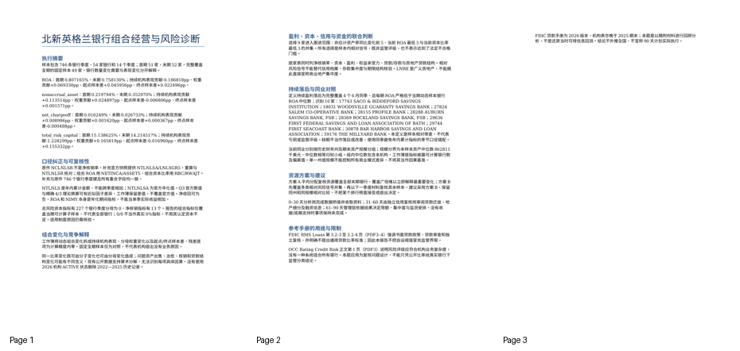
priority_follow_up_brief.docx
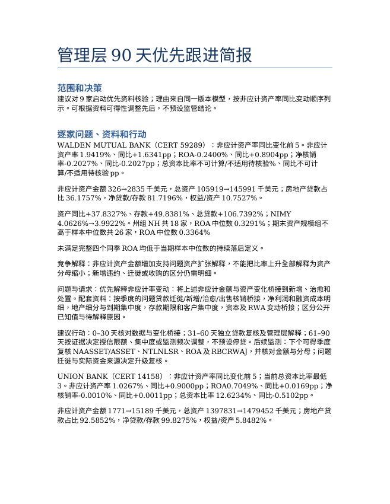
完整正文
管理层90 天优先跟进简报 范围和决策 建议对9 家启动优先资料核验；理由来自同一版本模型，按非应计资产率同比变动顺序列 示。可根据资料可得性调整先后，不预设监管结论。 逐家问题、资料和行动 WALDEN MUTUAL BANK（CERT 59289）：非应计资产率同比变化前5。非应计 资产率1.9419%、同比+1.6341pp；ROA-0.2400%、同比+0.8904pp；净核销 率-0.2027%、同比-0.2027pp；总资本比率不可计算/不适用待核验%、同比不可计 算/不适用待核验pp。 非应计资产金额326→2835 千美元，总资产105919→145991 千美元；房地产贷款占 比36.1757%，净贷款/存款81.7196%，权益/资产10.7527%。 资产同比+37.8327%、存款+49.8381%、总贷款+106.7392%；NIMY 4.0626%→3.9922%。州组NH 共18 家，ROA 中位数0.3291%；期末资产规模组不 高于样本中位数共26 家，ROA 中位数0.3364% 未满足完整四个同季ROA 均低于当期样本中位数的持续落后定义。 竞争解释：非应计资产金额增加支持问题资产扩张解释，不能把比率上升全部解释为资产 分母缩小；新增违约、迁徙或收购的区分仍需明细。 问题与请求：优先解释非应计率变动：将上述非应计金额与资产变化桥接到新增、治愈和 处置。配套资料：按季度的问题贷款迁徙/新增/治愈/出售核销桥接，净利润和融资成本明 细，地产细分与到期集中度，存款期限和客户集中度，资本及RWA 变动桥接；区分公开 已知值与待解释原因。 建议行动：0–30 天核对数据与变化桥接；31–60 天独立贷款复核及管理层解释；61–90 天按证据决定授信限额、集中度或监测频次调整，不预设停贷。后续监测：下个可得季度 复核NAASSET/ASSET、NTLNLSR、ROA 及RBCRWAJ，并核对金额与分母；问题 迁徙与实际资金来源决定升级复核。 UNION BANK（CERT 14158）：非应计资产率同比变化前5；当前总资本比率最低 3。非应计资产率1.0267%、同比+0.9000pp；ROA0.7049%、同比+0.0169pp；净 核销率-0.0010%、同比+0.0011pp；总资本比率12.6234%、同比-0.5102pp。 非应计资产金额1771→15189 千美元，总资产1397831→1479452 千美元；房地产贷 款占比92.5852%，净贷款/存款99.8275%，权益/资产5.8482%。 资产同比+5.8391%、存款+4.7740%、总贷款+9.8379%；NIMY 2.8402%→2.9987%。州组VT 共12 家，ROA 中位数0.6618%；期末资产规模组高 于样本中位数共26 家，ROA 中位数0.7162% 未满足完整四个同季ROA 均低于当期样本中位数的持续落后定义。 竞争解释：非应计资产金额增加支持问题资产扩张解释，不能把比率上升全部解释为资产 分母缩小；新增违约、迁徙或收购的区分仍需明细。 问题与请求：优先解释非应计率变动：将上述非应计金额与资产变化桥接到新增、治愈和 处置；优先解释相对低资本率：核对RBC 与RWA 变动及报告制度适用性，不预设违 规。配套资料：按季度的问题贷款迁徙/新增/治愈/出售核销桥接，净利润和融资成本明 细，地产细分与到期集中度，存款期限和客户集中度，资本及RWA 变动桥接；区分公开 已知值与待解释原因。 建议行动：0–30 天核对数据与变化桥接；31–60 天独立贷款复核及管理层解释；61–90 天按证据决定授信限额、集中度或监测频次调整，不预设停贷。后续监测：下个可得季度 复核NAASSET/ASSET、NTLNLSR、ROA 及RBCRWAJ，并核对金额与分母；问题 迁徙与实际资金来源决定升级复核。 BANGOR SAVINGS BANK（CERT 18408）：非应计资产率同比变化前5；当前总 资本比率最低3。非应计资产率0.4571%、同比+0.4013pp；ROA0.1063%、同比 +0.0558pp；净核销率0.0183%、同比+0.0386pp；总资本比率11.1489%、同 比-0.2468pp。 非应计资产金额4032→33535 千美元，总资产7222033→7335916 千美元；房地产贷 款占比90.0516%，净贷款/存款85.0730%，权益/资产6.3747%。 资产同比+1.5769%、存款+10.5042%、总贷款+3.7499%；NIMY 2.0621%→2.4185%。州组ME 共22 家，ROA 中位数0.7625%；期末资产规模组高 于样本中位数共26 家，ROA 中位数0.7162% 未满足完整四个同季ROA 均低于当期样本中位数的持续落后定义。 竞争解释：非应计资产金额增加支持问题资产扩张解释，不能把比率上升全部解释为资产 分母缩小；新增违约、迁徙或收购的区分仍需明细。 问题与请求：优先解释非应计率变动：将上述非应计金额与资产变化桥接到新增、治愈和 处置；优先解释相对低资本率：核对RBC 与RWA 变动及报告制度适用性，不预设违 规。配套资料：按季度的问题贷款迁徙/新增/治愈/出售核销桥接，净利润和融资成本明 细，地产细分与到期集中度，存款期限和客户集中度，资本及RWA 变动桥接；区分公开 已知值与待解释原因。 建议行动：0–30 天核对数据与变化桥接；31–60 天独立贷款复核及管理层解释；61–90 天按证据决定授信限额、集中度或监测频次调整，不预设停贷。后续监测：下个可得季度 复核NAASSET/ASSET、NTLNLSR、ROA 及RBCRWAJ，并核对金额与分母；问题 迁徙与实际资金来源决定升级复核。 FRANKLIN SAVINGS BANK（CERT 19836）：非应计资产率同比变化前5。非应 计资产率1.0966%、同比+0.3593pp；ROA0.8395%、同比+0.1803pp；净核销率 0.0098%、同比+0.0066pp；总资本比率23.0549%、同比-1.6999pp。 非应计资产金额5114→8281 千美元，总资产693631→755186 千美元；房地产贷款占 比91.3450%，净贷款/存款108.6961%，权益/资产17.2759%。 资产同比+8.8743%、存款+18.7874%、总贷款+10.3131%；NIMY 3.5710%→3.9646%。州组ME 共22 家，ROA 中位数0.7625%；期末资产规模组不 高于样本中位数共26 家，ROA 中位数0.3364% 未满足完整四个同季ROA 均低于当期样本中位数的持续落后定义。 竞争解释：非应计资产金额增加支持问题资产扩张解释，不能把比率上升全部解释为资产 分母缩小；新增违约、迁徙或收购的区分仍需明细。 问题与请求：优先解释非应计率变动：将上述非应计金额与资产变化桥接到新增、治愈和 处置。配套资料：按季度的问题贷款迁徙/新增/治愈/出售核销桥接，净利润和融资成本明 细，地产细分与到期集中度，存款期限和客户集中度，资本及RWA 变动桥接；区分公开 已知值与待解释原因。 建议行动：0–30 天核对数据与变化桥接；31–60 天独立贷款复核及管理层解释；61–90 天按证据决定授信限额、集中度或监测频次调整，不预设停贷。后续监测：下个可得季度 复核NAASSET/ASSET、NTLNLSR、ROA 及RBCRWAJ，并核对金额与分母；问题 迁徙与实际资金来源决定升级复核。 NORTHFIELD SAVINGS BANK（CERT 14140）：非应计资产率同比变化前5。非 应计资产率0.4764%、同比+0.3399pp；ROA0.3192%、同比+0.0275pp；净核销 率0.0051%、同比-0.0023pp；总资本比率不可计算/不适用待核验%、同比不可计 算/不适用待核验pp。 非应计资产金额2046→7436 千美元，总资产1498757→1560737 千美元；房地产贷 款占比88.4032%，净贷款/存款85.5787%，权益/资产9.1424%。 资产同比+4.1354%、存款+6.8529%、总贷款+2.6627%；NIMY 2.3745%→2.5805%。州组VT 共12 家，ROA 中位数0.6618%；期末资产规模组高 于样本中位数共26 家，ROA 中位数0.7162% 未满足完整四个同季ROA 均低于当期样本中位数的持续落后定义。 竞争解释：非应计资产金额增加支持问题资产扩张解释，不能把比率上升全部解释为资产 分母缩小；新增违约、迁徙或收购的区分仍需明细。 问题与请求：优先解释非应计率变动：将上述非应计金额与资产变化桥接到新增、治愈和 处置。配套资料：按季度的问题贷款迁徙/新增/治愈/出售核销桥接，净利润和融资成本明 细，地产细分与到期集中度，存款期限和客户集中度，资本及RWA 变动桥接；区分公开 已知值与待解释原因。 建议行动：0–30 天核对数据与变化桥接；31–60 天独立贷款复核及管理层解释；61–90 天按证据决定授信限额、集中度或监测频次调整，不预设停贷。后续监测：下个可得季度 复核NAASSET/ASSET、NTLNLSR、ROA 及RBCRWAJ，并核对金额与分母；问题 迁徙与实际资金来源决定升级复核。 SALEM CO-OPERATIVE BANK（CERT 27824）：当前ROA 最低3。非应计资产 率0.3576%、同比+0.1643pp；ROA-0.3059%、同比+0.0681pp；净核销率 0.0177%、同比-0.0341pp；总资本比率18.9590%、同比-1.3988pp。 非应计资产金额1077→2044 千美元，总资产557168→571650 千美元；房地产贷款占 比89.3800%，净贷款/存款120.6787%，权益/资产10.8696%。 资产同比+2.5992%、存款+6.9437%、总贷款+2.3613%；NIMY 1.6244%→1.9151%。州组NH 共18 家，ROA 中位数0.3291%；期末资产规模组不 高于样本中位数共26 家，ROA 中位数0.3364% 全部四个同季ROA 低于当期样本中位数，属于本定义的持续落后。 竞争解释：非应计资产金额增加支持问题资产扩张解释，不能把比率上升全部解释为资产 分母缩小；新增违约、迁徙或收购的区分仍需明细。 问题与请求：优先解释相对低ROA：以NIMY 走势为对照，索取拨备、费用及非经常损 益桥接。配套资料：按季度的问题贷款迁徙/新增/治愈/出售核销桥接，净利润和融资成本 明细，地产细分与到期集中度，存款期限和客户集中度，资本及RWA 变动桥接；区分公 开已知值与待解释原因。 建议行动：0–30 天核对数据与变化桥接；31–60 天独立贷款复核及管理层解释；61–90 天按证据决定授信限额、集中度或监测频次调整，不预设停贷。后续监测：下个可得季度 复核NAASSET/ASSET、NTLNLSR、ROA 及RBCRWAJ，并核对金额与分母；问题 迁徙与实际资金来源决定升级复核。 THE BRATTLEBORO SAVINGS AND LOAN ASSOCIATION（CERT 28837）： 当前ROA 最低3。非应计资产率0.0906%、同比+0.0363pp；ROA-0.3264%、同 比-1.0425pp；净核销率-0.0019%、同比-0.0019pp；总资本比率17.9895%、同比 +1.2500pp。 非应计资产金额155→253 千美元，总资产285118→279103 千美元；房地产贷款占比 95.7001%，净贷款/存款83.2689%，权益/资产10.1378%。 资产同比-2.1097%、存款-2.4776%、总贷款+3.2693%；NIMY 3.6810%→4.0086%。州组VT 共12 家，ROA 中位数0.6618%；期末资产规模组不 高于样本中位数共26 家，ROA 中位数0.3364% 未满足完整四个同季ROA 均低于当期样本中位数的持续落后定义。 竞争解释：非应计资产金额增加支持问题资产扩张解释，不能把比率上升全部解释为资产 分母缩小；新增违约、迁徙或收购的区分仍需明细。ROA 下降而NIMY 未下降，不支持 单凭息差收窄解释全部盈利压力；优先请求拨备、费用和一次性损益桥接。 问题与请求：优先解释相对低ROA：以NIMY 走势为对照，索取拨备、费用及非经常损 益桥接。配套资料：按季度的问题贷款迁徙/新增/治愈/出售核销桥接，净利润和融资成本 明细，地产细分与到期集中度，存款期限和客户集中度，资本及RWA 变动桥接；区分公 开已知值与待解释原因。 建议行动：0–30 天核对数据与变化桥接；31–60 天独立贷款复核及管理层解释；61–90 天按证据决定授信限额、集中度或监测频次调整，不预设停贷。后续监测：下个可得季度 复核NAASSET/ASSET、NTLNLSR、ROA 及RBCRWAJ，并核对金额与分母；问题 迁徙与实际资金来源决定升级复核。 LEDYARD NATIONAL BANK（CERT 33418）：当前总资本比率最低3。非应计资 产率0.1199%、同比+0.0136pp；ROA0.6188%、同比+0.2441pp；净核销 率-0.0010%、同比+0.0008pp；总资本比率12.4261%、同比-1.9715pp。 非应计资产金额964→1191 千美元，总资产907185→993609 千美元；房地产贷款占 比83.8967%，净贷款/存款76.4430%，权益/资产7.0395%。 资产同比+9.5266%、存款+2.4943%、总贷款+26.8661%；NIMY 2.2137%→2.5850%。州组VT 共12 家，ROA 中位数0.6618%；期末资产规模组高 于样本中位数共26 家，ROA 中位数0.7162% 未满足完整四个同季ROA 均低于当期样本中位数的持续落后定义。 竞争解释：非应计资产金额增加支持问题资产扩张解释，不能把比率上升全部解释为资产 分母缩小；新增违约、迁徙或收购的区分仍需明细。 问题与请求：优先解释相对低资本率：核对RBC 与RWA 变动及报告制度适用性，不预 设违规。配套资料：按季度的问题贷款迁徙/新增/治愈/出售核销桥接，净利润和融资成本 明细，地产细分与到期集中度，存款期限和客户集中度，资本及RWA 变动桥接；区分公 开已知值与待解释原因。 建议行动：0–30 天核对数据与变化桥接；31–60 天独立贷款复核及管理层解释；61–90 天按证据决定授信限额、集中度或监测频次调整，不预设停贷。后续监测：下个可得季度 复核NAASSET/ASSET、NTLNLSR、ROA 及RBCRWAJ，并核对金额与分母；问题 迁徙与实际资金来源决定升级复核。 FIRST SEACOAST BANK（CERT 29744）：当前ROA 最低3。非应计资产率 0.0023%、同比-0.0211pp；ROA-0.3855%、同比-0.6821pp；净核销 率-0.0005%、同比+0.0000pp；总资本比率15.2306%、同比-0.2968pp。 非应计资产金额141→14 千美元，总资产602018→605109 千美元；房地产贷款占比 91.4320%，净贷款/存款89.0399%，权益/资产7.3630%。 资产同比+0.5134%、存款+3.9610%、总贷款+1.1146%；NIMY 2.1079%→2.3256%。州组NH 共18 家，ROA 中位数0.3291%；期末资产规模组不 高于样本中位数共26 家，ROA 中位数0.3364% 全部四个同季ROA 低于当期样本中位数，属于本定义的持续落后。 竞争解释：非应计资产率未同比恶化，入选理由来自盈利或资本相对位置，不能把它写成 信用质量必然恶化。ROA 下降而NIMY 未下降，不支持单凭息差收窄解释全部盈利压 力；优先请求拨备、费用和一次性损益桥接。 问题与请求：优先解释相对低ROA：以NIMY 走势为对照，索取拨备、费用及非经常损 益桥接。配套资料：按季度的问题贷款迁徙/新增/治愈/出售核销桥接，净利润和融资成本 明细，地产细分与到期集中度，存款期限和客户集中度，资本及RWA 变动桥接；区分公 开已知值与待解释原因。 建议行动：0–30 天核对数据与变化桥接；31–60 天独立贷款复核及管理层解释；61–90 天按证据决定授信限额、集中度或监测频次调整，不预设停贷。后续监测：下个可得季度 复核NAASSET/ASSET、NTLNLSR、ROA 及RBCRWAJ，并核对金额与分母；问题 迁徙与实际资金来源决定升级复核。 组合层监测与关闭 每项关闭需原始桥接、同一CERT 期间及独立复核确认；若观察值得到另一合理解释， 应更新建议。对没有材料的原因保持待核实，不编造管理层答复。
全部页面
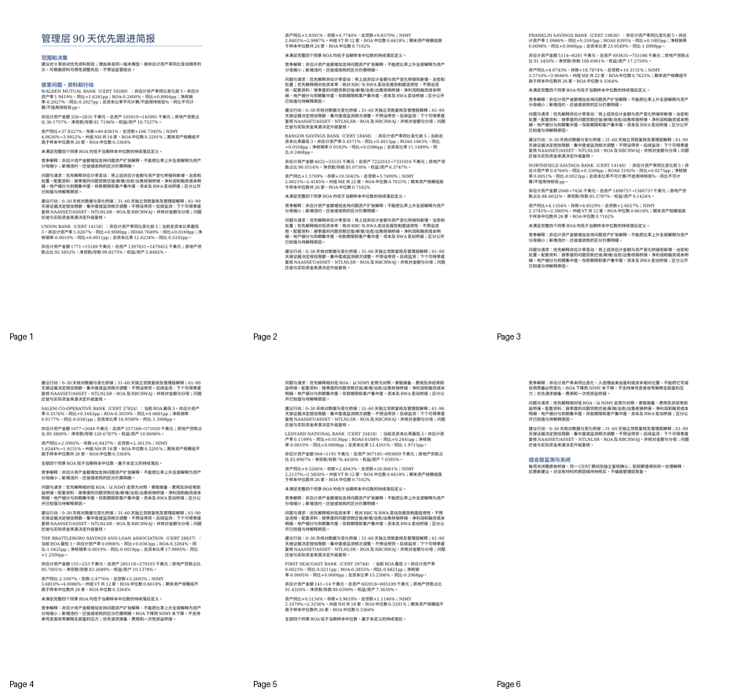
regional_bank_risk_model.xlsx
定义与约束 · 12 行 × 3 列
| 项目 | 公式或定义 | 边界 |
| ROA | NETINCA/ASSET5×100 | 年化净利润/平均总资产；组合使用分子分母求和，不用期末资产替代平均资产 |
| 非应计资产率 | NAASSET/ASSET×100 | 不是(P9ASSET+NAASSET)/ASSET；后者只能另命名为问题资产代理 |
| 净核销率 | NTLNLSA/LNLSGR5×100 | NTLNLS为年内累计，NTLNLSA为官方年化值；负值为净收回，不裁成0。4/季度数仅为理论参考，官方Q3数值可用近似因子，保留差值而不覆盖官方字段 |
| NCLNLSR | NCLNLS/LNLSGRJ×100 | 非应计贷款租赁/调整后总贷款租赁，不是净核销率 |
| 总风险资本比率 | RBC/RWAJT×100 | 不按总资产或净贷款加权；与权益/资产不同 |
| 零分母及适用性 | 分母为0时不计算比率 | 原件部分RBCRWAJ及NTLNLSR为0且相应分母为0；不能当真实0%资本或0%核销，需标记未能计算，组合披露子样本。资本报告制度原因需补证，不自行认定 |
| NIMY、ROA时间 | 原件年化期间指标 | 不是独立季度损益，不能将年化比率简单相加或对季度平均当年结果 |
| 净贷款/存款 | LNLSNET/DEP×100 | 资金结构筛查，不等于法定流动性比率或资金挤兑预测 |
| 房地产贷款比重 | LNRE/LNLSGR×100 | 广义房地产，不冒称商业地产集中度或细分类别 |
| 金额单位 | 原件金额为千美元 | 报告中金额与比率分别标注；supplement保留官方响应字节，无改写 |
| 总体范围 | 历史季度STALP为ME/NH/VT的下载记录 | 机构表为更晚快照，ACTIVE与州/名称不回填历史；不代表全国或各州所有金融机构 |
样本覆盖 · 55 行 × 4 列
| CERT | 覆盖季度 | 缺季度 | 固定全期样本 |
| 4255 | ["20220331", "20220630", "20220930", "20221231", "20230331", "20230630", "20230930", "20231231", "20240331", "20240630", "20240930", "20241231", "20250331", "20250630"] | [] | True |
| 4256 | ["20220331", "20220630", "20220930", "20221231", "20230331", "20230630", "20230930", "20231231", "20240331", "20240630", "20240930", "20241231", "20250331", "20250630"] | [] | True |
| 6271 | ["20220331", "20220630", "20220930", "20221231", "20230331", "20230630", "20230930", "20231231", "20240331", "20240630", "20240930", "20241231", "20250331", "20250630"] | [] | True |
| 6275 | ["20220331", "20220630", "20220930", "20221231", "20230331", "20230630", "20230930", "20231231", "20240331", "20240630", "20240930", "20241231", "20250331", "20250630"] | [] | True |
| 6280 | ["20220331", "20220630", "20220930", "20221231", "20230331", "20230630", "20230930", "20231231", "20240331", "20240630", "20240930", "20241231", "20250331", "20250630"] | [] | True |
| 11971 | ["20220331", "20220630", "20220930", "20221231", "20230331", "20230630", "20230930", "20231231", "20240331", "20240630", "20240930", "20241231", "20250331", "20250630"] | [] | True |
| 12874 | ["20220331", "20220630", "20220930", "20221231", "20230331", "20230630", "20230930", "20231231", "20240331", "20240630", "20240930", "20241231", "20250331", "20250630"] | [] | True |
| 13063 | ["20220331", "20220630", "20220930", "20221231", "20230331", "20230630", "20230930", "20231231", "20240331", "20240630", "20240930", "20241231", "20250331", "20250630"] | [] | True |
| 14134 | ["20220331", "20220630", "20220930", "20221231", "20230331", "20230630", "20230930", "20231231", "20240331", "20240630", "20240930", "20241231", "20250331", "20250630"] | [] | True |
| 14136 | ["20220331", "20220630", "20220930", "20221231", "20230331", "20230630", "20230930", "20231231", "20240331", "20240630", "20240930", "20241231", "20250331", "20250630"] | [] | True |
| 14140 | ["20220331", "20220630", "20220930", "20221231", "20230331", "20230630", "20230930", "20231231", "20240331", "20240630", "20240930", "20241231", "20250331", "20250630"] | [] | True |
| 14158 | ["20220331", "20220630", "20220930", "20221231", "20230331", "20230630", "20230930", "20231231", "20240331", "20240630", "20240930", "20241231", "20250331", "20250630"] | [] | True |
| 14168 | ["20220331", "20220630", "20220930", "20221231", "20230331", "20230630", "20230930", "20231231", "20240331", "20240630", "20240930", "20241231", "20250331", "20250630"] | [] | True |
| 14240 | ["20220331", "20220630", "20220930", "20221231", "20230331", "20230630", "20230930", "20231231", "20240331", "20240630", "20240930", "20241231"] | ["20250331", "20250630"] | False |
| 17115 | ["20220331", "20220630", "20220930", "20221231", "20230331", "20230630", "20230930", "20231231", "20240331", "20240630", "20240930", "20241231", "20250331", "20250630"] | [] | True |
| 17180 | ["20220331", "20220630", "20220930", "20221231", "20230331", "20230630", "20230930", "20231231", "20240331", "20240630", "20240930", "20241231", "20250331", "20250630"] | [] | True |
| 17443 | ["20220331", "20220630", "20220930", "20221231", "20230331", "20230630", "20230930", "20231231", "20240331", "20240630", "20240930", "20241231", "20250331", "20250630"] | [] | True |
| 17658 | ["20220331", "20220630", "20220930", "20221231", "20230331", "20230630", "20230930", "20231231", "20240331", "20240630", "20240930", "20241231", "20250331", "20250630"] | [] | True |
| 17741 | ["20220331", "20220630", "20220930", "20221231", "20230331", "20230630", "20230930", "20231231", "20240331", "20240630", "20240930", "20241231", "20250331", "20250630"] | [] | True |
| 17743 | ["20220331", "20220630", "20220930", "20221231", "20230331", "20230630", "20230930", "20231231", "20240331", "20240630", "20240930", "20241231", "20250331", "20250630"] | [] | True |
指标不可计算明细 · 241 行 × 7 列
| CERT | 季度 | 指标 | 分子 | 分母 | 来源记录 | 处理 |
| 13063 | 20220331 | total_risk_capital | 0 | 0 | 4 | 不填真实0%或参加该指标等权均值；原因待核验 |
| 14140 | 20220331 | total_risk_capital | 0 | 0 | 7 | 不填真实0%或参加该指标等权均值；原因待核验 |
| 17443 | 20220331 | total_risk_capital | 0 | 0 | 13 | 不填真实0%或参加该指标等权均值；原因待核验 |
| 17658 | 20220331 | total_risk_capital | 0 | 0 | 14 | 不填真实0%或参加该指标等权均值；原因待核验 |
| 17741 | 20220331 | total_risk_capital | 0 | 0 | 15 | 不填真实0%或参加该指标等权均值；原因待核验 |
| 17743 | 20220331 | total_risk_capital | 0 | 0 | 16 | 不填真实0%或参加该指标等权均值；原因待核验 |
| 17748 | 20220331 | total_risk_capital | 0 | 0 | 17 | 不填真实0%或参加该指标等权均值；原因待核验 |
| 17749 | 20220331 | total_risk_capital | 0 | 0 | 18 | 不填真实0%或参加该指标等权均值；原因待核验 |
| 17897 | 20220331 | total_risk_capital | 0 | 0 | 20 | 不填真实0%或参加该指标等权均值；原因待核验 |
| 18028 | 20220331 | total_risk_capital | 0 | 0 | 25 | 不填真实0%或参加该指标等权均值；原因待核验 |
| 18031 | 20220331 | total_risk_capital | 0 | 0 | 27 | 不填真实0%或参加该指标等权均值；原因待核验 |
| 18038 | 20220331 | total_risk_capital | 0 | 0 | 28 | 不填真实0%或参加该指标等权均值；原因待核验 |
| 24540 | 20220331 | total_risk_capital | 0 | 0 | 34 | 不填真实0%或参加该指标等权均值；原因待核验 |
| 28369 | 20220331 | total_risk_capital | 0 | 0 | 38 | 不填真实0%或参加该指标等权均值；原因待核验 |
| 30878 | 20220331 | total_risk_capital | 0 | 0 | 44 | 不填真实0%或参加该指标等权均值；原因待核验 |
| 6280 | 20220331 | total_risk_capital | 0 | 0 | 52 | 不填真实0%或参加该指标等权均值；原因待核验 |
| 13063 | 20220630 | total_risk_capital | 0 | 0 | 55 | 不填真实0%或参加该指标等权均值；原因待核验 |
| 14140 | 20220630 | total_risk_capital | 0 | 0 | 58 | 不填真实0%或参加该指标等权均值；原因待核验 |
| 17443 | 20220630 | total_risk_capital | 0 | 0 | 64 | 不填真实0%或参加该指标等权均值；原因待核验 |
| 17658 | 20220630 | total_risk_capital | 0 | 0 | 65 | 不填真实0%或参加该指标等权均值；原因待核验 |
官方年化与理论差值 · 747 行 × 6 列
| CERT | 季度 | 累计NTLNLS | 官方年化NTLNLSA | 官方减4除季度数理论值 | 补充来源记录 |
| 11971 | 20220331 | -95 | -380 | 0 | 2 |
| 12874 | 20220331 | -5 | -20 | 0 | 3 |
| 13063 | 20220331 | -5 | -20 | 0 | 4 |
| 14134 | 20220331 | 19 | 76 | 0 | 5 |
| 14136 | 20220331 | 7 | 28 | 0 | 6 |
| 14140 | 20220331 | 9 | 36 | 0 | 7 |
| 14158 | 20220331 | 0 | 0 | 0 | 8 |
| 14168 | 20220331 | 34 | 136 | 0 | 9 |
| 14240 | 20220331 | -4 | -16 | 0 | 10 |
| 17115 | 20220331 | 240 | 960 | 0 | 11 |
| 17180 | 20220331 | 36 | 144 | 0 | 12 |
| 17443 | 20220331 | 0 | 0 | 0 | 13 |
| 17658 | 20220331 | 2 | 8 | 0 | 14 |
| 17741 | 20220331 | 4 | 16 | 0 | 15 |
| 17743 | 20220331 | -7 | -28 | 0 | 16 |
| 17748 | 20220331 | 47 | 188 | 0 | 17 |
| 17749 | 20220331 | 1 | 4 | 0 | 18 |
| 17751 | 20220331 | 2 | 8 | 0 | 19 |
| 17897 | 20220331 | 12 | 48 | 0 | 20 |
| 17951 | 20220331 | -3 | -12 | 0 | 21 |
机构对应 · 747 行 × 11 列
| CERT | 季度 | 历史名称 | 历史州 | 原财务记录 | 机构记录 | 机构快照名称 | 机构快照州 | 当前ACTIVE非历史筛选 | 机构快照报告期 | 差异或说明 |
| 11971 | 20220331 | BAR HARBOR BANK & TRUST | ME | 2 | 10 | Bar Harbor Bank & Trust | ME | 1 | 06/30/2026 | 名称或州不同；保留历史名称 |
| 12874 | 20220331 | KATAHDIN TRUST COMPANY | ME | 3 | 15 | Katahdin Trust Company | ME | 1 | 06/30/2026 | 名称或州不同；保留历史名称 |
| 13063 | 20220331 | KENNEBUNK SAVINGS BANK | ME | 4 | 17 | Kennebunk Savings Bank | ME | 1 | 06/30/2026 | 名称或州不同；保留历史名称 |
| 14134 | 20220331 | PASSUMPSIC SAVINGS BANK | VT | 5 | 28 | Passumpsic Savings Bank | VT | 1 | 06/30/2026 | 名称或州不同；保留历史名称 |
| 14136 | 20220331 | WELLS RIVER SAVINGS BANK | VT | 6 | 29 | Wells River Savings Bank | VT | 1 | 06/30/2026 | 名称或州不同；保留历史名称 |
| 14140 | 20220331 | NORTHFIELD SAVINGS BANK | VT | 7 | 30 | Northfield Savings Bank | VT | 1 | 06/30/2026 | 名称或州不同；保留历史名称 |
| 14158 | 20220331 | UNION BANK | VT | 8 | 40 | Union Bank | VT | 1 | 06/30/2026 | 名称或州不同；保留历史名称 |
| 14168 | 20220331 | PEOPLES TRUST COMPANY OF ST. ALBANS | VT | 9 | 44 | Peoples Trust Company of St. Albans | VT | 1 | 06/30/2026 | 名称或州不同；保留历史名称 |
| 14240 | 20220331 | NORTHWAY BANK | NH | 10 | 48 | Northway Bank | NH | 0 | 12/31/2024 | 名称或州不同；保留历史名称 |
| 17115 | 20220331 | PARTNERS BANK OF NEW ENGLAND | ME | 11 | 58 | Partners Bank of New England | ME | 1 | 06/30/2026 | 名称或州不同；保留历史名称 |
| 17180 | 20220331 | MEREDITH VILLAGE SAVINGS BANK | NH | 12 | 62 | Meredith Village Savings Bank | NH | 1 | 06/30/2026 | 名称或州不同；保留历史名称 |
| 17443 | 20220331 | PISCATAQUA SAVINGS BANK | NH | 13 | 71 | Piscataqua Savings Bank | NH | 1 | 06/30/2026 | 名称或州不同；保留历史名称 |
| 17658 | 20220331 | NORWAY SAVINGS BANK | ME | 14 | 73 | Norway Savings Bank | ME | 1 | 06/30/2026 | 名称或州不同；保留历史名称 |
| 17741 | 20220331 | MAINE COMMUNITY BANK | ME | 15 | 77 | Maine Community Bank | ME | 1 | 06/30/2026 | 名称或州不同；保留历史名称 |
| 17743 | 20220331 | SACO & BIDDEFORD SAVINGS INSTITUTION | ME | 16 | 79 | Saco & Biddeford Savings Institution | ME | 1 | 06/30/2026 | 名称或州不同；保留历史名称 |
| 17748 | 20220331 | GORHAM SAVINGS BANK | ME | 17 | 80 | Gorham Savings Bank | ME | 0 | 12/31/2024 | 名称或州不同；保留历史名称 |
| 17749 | 20220331 | BATH SAVINGS INSTITUTION | ME | 18 | 81 | Bath Savings Institution | ME | 1 | 06/30/2026 | 名称或州不同；保留历史名称 |
| 17751 | 20220331 | ANDROSCOGGIN SAVINGS BANK | ME | 19 | 82 | Androscoggin Savings Bank | ME | 1 | 06/30/2026 | 名称或州不同；保留历史名称 |
| 17897 | 20220331 | KENNEBEC SAVINGS BANK | ME | 20 | 88 | Kennebec Savings Bank | ME | 1 | 06/30/2026 | 名称或州不同；保留历史名称 |
| 17951 | 20220331 | FRANKLIN SAVINGS BANK | NH | 21 | 90 | Franklin Savings Bank | NH | 1 | 06/30/2026 | 名称或州不同；保留历史名称 |
季度银行模型 · 747 行 × 24 列
| CERT | 季度 | 名称 | 州 | 资产千USD | 存款千USD | ROA百分比 | 非应计资产率百分比 | 净核销率百分比 | 总风险资本比率百分比 | 权益资产百分比 | 净贷款存款百分比 | 房地产总贷款百分比 | NIMY百分比 | 非应计贷款率NCLNLSR非核销率 | NTLNLS累计千USD |
| 11971 | 20220331 | BAR HARBOR BANK & TRUST | ME | 3688993 | 3055632 | 1.116234291292907 | 0.2497429515317595 | -0.01462990197965674 | 13.67896063263971 | 12.51509558299514 | 86.20854867340046 | 87.19326290374899 | 3.006742138500755 | 0.3784141376966862 | -95 |
| 12874 | 20220331 | KATAHDIN TRUST COMPANY | ME | 964163 | 854194 | 0.8314973201648079 | 0.1108733689220599 | -0.002733530648687324 | 15.60160287607842 | 10.15554423888907 | 84.88680557344117 | 78.80901507150985 | 3.401950441149914 | 0.1458577225455925 | -5 |
| 13063 | 20220331 | KENNEBUNK SAVINGS BANK | ME | 1784835 | 1619076 | 0.4823731340100479 | 0.02285925589760398 | -0.00165652733891307 | 8.302224015105038 | 74.64059747658541 | 94.88453795154281 | 3.271114774102846 | 0.1311112001170519 | -5 | |
| 14134 | 20220331 | PASSUMPSIC SAVINGS BANK | VT | 869402 | 737795 | -0.3872933930353491 | 0.9217830186726048 | 0.01279154411610009 | 17.57098307803522 | 11.71011798914656 | 79.70100095554999 | 86.5592533719659 | 2.742437977347796 | 1.343756078257778 | 19 |
| 14136 | 20220331 | WELLS RIVER SAVINGS BANK | VT | 222692 | 199279 | 0.1995492165221358 | 0.07813482298421137 | 0.02322369812510109 | 17.27622049989467 | 8.457421011980673 | 60.11922982351377 | 79.87607158474906 | 3.422369975829127 | 0.6707976138416983 | 7 |
| 14140 | 20220331 | NORTHFIELD SAVINGS BANK | VT | 1414510 | 1199427 | 0.6621263245278249 | 0.3951191578709235 | 0.003836578794802715 | 8.75596496313211 | 78.97571090195568 | 90.40973329282667 | 2.969813133609412 | 0.58348392835331 | 9 | |
| 14158 | 20220331 | UNION BANK | VT | 1232701 | 1137254 | 0.8832913187332598 | 0.3573453741012622 | 0 | 14.78812561508296 | 6.903945076705543 | 72.33450047219003 | 83.99988928508249 | 3.185373520467468 | 0.5576662258127016 | 0 |
| 14168 | 20220331 | PEOPLES TRUST COMPANY OF ST. ALBANS | VT | 384095 | 345364 | 0.1357883164598941 | 0.3092984808445827 | 0.07288434433565384 | 19.8246428808378 | 8.915502675119436 | 54.50046907031422 | 84.54866469618895 | 2.418459080438387 | 0.6214851821819989 | 34 |
| 14240 | 20220331 | NORTHWAY BANK | NH | 1221074 | 1020645 | 0.06981188133279 | 0.1804968413052772 | -0.001972969090356435 | 15.10699233643386 | 8.36255624147267 | 79.87106192652685 | 85.58999357318685 | 2.819420726151022 | 0.2672584185189227 | -4 |
| 17115 | 20220331 | PARTNERS BANK OF NEW ENGLAND | ME | 836644 | 738943 | 1.114969296652114 | 0.01960212467907497 | 0.1485538054920032 | 15.60646878722231 | 9.949154000984887 | 87.80366009286237 | 92.7409932656086 | 3.512636172417041 | 0.02498168263818755 | 240 |
| 17180 | 20220331 | MEREDITH VILLAGE SAVINGS BANK | NH | 1291920 | 1121172 | 0.8027892895252748 | 0.4453062109108923 | 0.01266319249635493 | 16.05694313866331 | 9.828704563750078 | 100.9430310425162 | 82.01820270389679 | 3.569993155239652 | 0.5033170985208444 | 36 |
| 17443 | 20220331 | PISCATAQUA SAVINGS BANK | NH | 352255 | 302135 | 0.619253411177981 | 0.2390313835147833 | 0 | 12.15653432882429 | 62.00208516060702 | 98.45728015580677 | 2.012217920234347 | 0.4456158177738261 | 0 | |
| 17658 | 20220331 | NORWAY SAVINGS BANK | ME | 1753308 | 1508978 | 0.8577543994380387 | 0.05811871046045532 | 0.0007394241549537259 | 12.29082397388251 | 70.69188550131281 | 86.62218454966737 | 3.359851079995135 | 0.1088352674596492 | 2 | |
| 17741 | 20220331 | MAINE COMMUNITY BANK | ME | 1002149 | 846927 | 0.5824623665746478 | 0.1713318079447268 | 0.002013456179328475 | 12.96404027744377 | 93.16304711031765 | 93.78988785902995 | 3.256669405038815 | 0.2154964136225863 | 4 | |
| 17743 | 20220331 | SACO & BIDDEFORD SAVINGS INSTITUTION | ME | 1158500 | 899083 | 0.3984242717440133 | 0.3079844626672421 | -0.00304919716272204 | 10.94372032801036 | 101.5501349708536 | 95.14083072535693 | 2.746864735471675 | 0.3924763920493847 | -7 | |
| 17748 | 20220331 | GORHAM SAVINGS BANK | ME | 1547967 | 1360876 | -0.3061987766296763 | 0.5017548823715234 | 0.01657148347391181 | 7.931758235156176 | 82.77058306561362 | 84.43071168304208 | 3.152644531482566 | 0.683927914156348 | 47 | |
| 17749 | 20220331 | BATH SAVINGS INSTITUTION | ME | 1206621 | 984705 | 0.1782864066054621 | 0.01864711454549523 | 0.0006085677206552449 | 13.61869219912466 | 66.63548981674715 | 89.37922436840998 | 2.798472626580006 | 0.03785034095346811 | 1 | |
| 17751 | 20220331 | ANDROSCOGGIN SAVINGS BANK | ME | 1361626 | 1200633 | 0.5087056849171386 | 0.1721471241001567 | 0.0007505253677574302 | 13.77385280539155 | 9.503637562737492 | 89.06193649516547 | 84.52150682359122 | 2.982631067124586 | 0.2168304458067268 | 2 |
| 17897 | 20220331 | KENNEBEC SAVINGS BANK | ME | 1471217 | 1215413 | -0.2042243603340096 | 0.2238282999720639 | 0.003951736129406185 | 13.51568123533102 | 100.2480638268638 | 94.634393807291 | 3.238078097908995 | 0.2685780046603544 | 12 | |
| 17951 | 20220331 | FRANKLIN SAVINGS BANK | NH | 702702 | 626605 | 0.9148551766993867 | 0.1488539950078412 | -0.002664594204507605 | 15.53807230519985 | 8.111688880919651 | 72.01362900072614 | 91.84084652178593 | 3.153855534701998 | 0.2298229308795451 | -3 |
组合州别及同口径比较 · 449 行 × 10 列
| 季度 | 州 | 动态或固定 | 指标 | 银行数 | 分子合计 | 分母合计 | 组合百分比 | 银行等权百分比 | 说明 |
| 20220331 | ALL | dynamic | ROA | 51 | 483892 | 59949547 | 0.8071653985975907 | 0.6159145951639151 | 本行范围51家，剔除分母不可用0家；组合率仅代表可计算子样本，等权均值含义不同 |
| 20220331 | ALL | dynamic | nonaccrual_asset | 51 | 131552 | 59852474 | 0.2197937548914018 | 0.2854808742247869 | 本行范围51家，剔除分母不可用0家；组合率仅代表可计算子样本，等权均值含义不同 |
| 20220331 | ALL | dynamic | net_chargeoff | 51 | 6700 | 41234173 | 0.01624865860653978 | 0.0192484459367393 | 本行范围51家，剔除分母不可用0家；组合率仅代表可计算子样本，等权均值含义不同 |
| 20220331 | ALL | dynamic | total_risk_capital | 35 | 4662478 | 30798556 | 15.1386253303564 | 17.24551315510938 | 本行范围51家，剔除分母不可用16家；组合率仅代表可计算子样本，等权均值含义不同 |
| 20220331 | ALL | fixed | ROA | 49 | 487760 | 57173570 | 0.8531214685386972 | 0.645878188748093 | 本行范围49家，剔除分母不可用0家；组合率仅代表可计算子样本，等权均值含义不同 |
| 20220331 | ALL | fixed | nonaccrual_asset | 49 | 121581 | 57083433 | 0.2129882412643262 | 0.2832096502405578 | 本行范围49家，剔除分母不可用0家；组合率仅代表可计算子样本，等权均值含义不同 |
| 20220331 | ALL | fixed | net_chargeoff | 49 | 6528 | 39288733.5 | 0.01661545033005454 | 0.01973616792632957 | 本行范围49家，剔除分母不可用0家；组合率仅代表可计算子样本，等权均值含义不同 |
| 20220331 | ALL | fixed | total_risk_capital | 33 | 4521257 | 29899201 | 15.12166495686624 | 17.23154965222167 | 本行范围33家，剔除分母不可用0家；组合率仅代表可计算子样本，等权均值含义不同 |
| 20220331 | ME | dynamic | ROA | 23 | 314664 | 37432819 | 0.8406099471161923 | 0.6410549043641462 | 本行范围23家，剔除分母不可用0家；组合率仅代表可计算子样本，等权均值含义不同 |
| 20220331 | ME | dynamic | nonaccrual_asset | 23 | 76936 | 37324757 | 0.2061259233382283 | 0.3019712009307678 | 本行范围23家，剔除分母不可用0家；组合率仅代表可计算子样本，等权均值含义不同 |
| 20220331 | ME | dynamic | net_chargeoff | 23 | 3212 | 25411700 | 0.01263984699961041 | 0.01052143332207715 | 本行范围23家，剔除分母不可用0家；组合率仅代表可计算子样本，等权均值含义不同 |
| 20220331 | ME | dynamic | total_risk_capital | 14 | 2828611 | 18813070 | 15.035350423934 | 18.05857396034375 | 本行范围23家，剔除分母不可用9家；组合率仅代表可计算子样本，等权均值含义不同 |
| 20220331 | ME | fixed | ROA | 22 | 319392 | 35888724 | 0.8899508380403828 | 0.6841118898638655 | 本行范围22家，剔除分母不可用0家；组合率仅代表可计算子样本，等权均值含义不同 |
| 20220331 | ME | fixed | nonaccrual_asset | 22 | 69169 | 35776790 | 0.1933348408283695 | 0.2928901245016425 | 本行范围22家，剔除分母不可用0家；组合率仅代表可计算子样本，等权均值含义不同 |
| 20220331 | ME | fixed | net_chargeoff | 22 | 3024 | 24277221 | 0.01245612090444784 | 0.0102464310424483 | 本行范围22家，剔除分母不可用0家；组合率仅代表可计算子样本，等权均值含义不同 |
| 20220331 | ME | fixed | total_risk_capital | 14 | 2828611 | 18813070 | 15.035350423934 | 18.05857396034375 | 本行范围14家，剔除分母不可用0家；组合率仅代表可计算子样本，等权均值含义不同 |
| 20220331 | NH | dynamic | ROA | 17 | 125112 | 15157694 | 0.8254025975191213 | 0.6165819770842061 | 本行范围17家，剔除分母不可用0家；组合率仅代表可计算子样本，等权均值含义不同 |
| 20220331 | NH | dynamic | nonaccrual_asset | 17 | 22956 | 15167858 | 0.151346353585325 | 0.1758634778492807 | 本行范围17家，剔除分母不可用0家；组合率仅代表可计算子样本，等权均值含义不同 |
| 20220331 | NH | dynamic | net_chargeoff | 17 | 24 | 11210157 | 0.0002140915600022373 | -0.0008924620389371517 | 本行范围17家，剔除分母不可用0家；组合率仅代表可计算子样本，等权均值含义不同 |
| 20220331 | NH | dynamic | total_risk_capital | 12 | 1270589 | 8552872 | 14.85569993330895 | 16.55299998656123 | 本行范围17家，剔除分母不可用5家；组合率仅代表可计算子样本，等权均值含义不同 |
组合变化归因 · 5 行 × 12 列
| 指标 | 首期动态 | 末期动态 | 变化pp | 首期固定 | 末期固定 | 持续机构表现pp | 持续机构权重pp | 起点样本差pp | 终点样本差pp | 残差pp | 定义 |
| ROA | 0.8071653985975907 | 0.7581298533874613 | -0.04903554521012946 | 0.8531214685386972 | 0.7356337720936096 | -0.186817817282275 | 0.06933012083718737 | 0.04595606994110642 | 0.02249608129385172 | -1.5e-28 | 该指标全期可计算固定样本49家；两端样本差含报告适用性变化，不证明并购因果 |
| nonaccrual_asset | 0.2197937548914018 | 0.3529700950836338 | 0.1331763401922319 | 0.2129882412643262 | 0.3513986788090106 | 0.1135136661825512 | 0.02489677136213316 | -0.006805513627075615 | 0.001571416274623137 | 8e-29 | 该指标全期可计算固定样本49家；两端样本差含报告适用性变化，不证明并购因果 |
| net_chargeoff | 0.01624865860653978 | 0.02673329281536874 | 0.01048463420882897 | 0.01661545033005454 | 0.02722144022699813 | 0.008986157494319703 | 0.001619832402623883 | 0.0003667917235147688 | -0.0004881474116293865 | 2e-30 | 该指标全期可计算固定样本49家；两端样本差含报告适用性变化，不证明并购因果 |
| total_risk_capital | 15.1386253303564 | 14.21451681404207 | -0.9241085163143284 | 15.12166495686624 | 14.05918483605788 | -1.228299071674854 | 0.165818950866496 | -0.01696037349015856 | 0.1553319779841878 | -2.9e-27 | 该指标全期可计算固定样本33家；两端样本差含报告适用性变化，不证明并购因果 |
归因银行贡献 · 181 行 × 11 列
| 指标 | CERT | 起点名称 | 起点指标百分比 | 末期指标百分比 | 起点分母权重 | 末期分母权重 | 表现贡献pp | 权重贡献pp | 起点原记录 | 末期原记录 |
| ROA | 4255 | THE CAMDEN NATIONAL BANK | 1.276832854971041 | 0.7190738887955189 | 0.09522049261573136 | 0.09457250082253979 | -0.05292937190374393 | -0.0006466655949682204 | 46 | 739 |
| ROA | 4256 | FIRST NATIONAL BANK | 1.580607341864419 | 1.001475213509658 | 0.04381592753434847 | 0.04544079087932495 | -0.02584571665243613 | 0.00209776564896527 | 47 | 740 |
| ROA | 6271 | COMMUNITY NATIONAL BANK | 1.008254839376108 | 1.360375738688802 | 0.01769434723072217 | 0.01734206784542137 | 0.006168526992652245 | -0.0004172098620226913 | 50 | 745 |
| ROA | 6275 | THE NATIONAL BANK OF MIDDLEBURY | 0.4702236431780084 | 0.80927276534914 | 0.009447870755665598 | 0.007932306974379088 | 0.002946367001274951 | -0.0009695792075249579 | 51 | 746 |
| ROA | 6280 | THE FIRST NATIONAL BANK OF ORWELL | 1.185738074710947 | 1.36654026169246 | 0.001480981509463201 | 0.001268467084307412 | 0.0002485531593734866 | -0.0002711979817491718 | 52 | 747 |
| ROA | 11971 | BAR HARBOR BANK & TRUST | 1.116234291292907 | 0.9594030598768071 | 0.06467656296432076 | 0.05895157667749162 | -0.00969437668885352 | -0.005941497685938484 | 2 | 696 |
| ROA | 12874 | KATAHDIN TRUST COMPANY | 0.8314973201648079 | 0.9386489732177956 | 0.01665135656213177 | 0.01561700095367958 | 0.001728803924561994 | -0.0009154803731705705 | 3 | 697 |
| ROA | 13063 | KENNEBUNK SAVINGS BANK | 0.4823731340100479 | 0.6210342326571814 | 0.03157475560822947 | 0.02745114463193733 | 0.004092298087968814 | -0.002275011364255295 | 4 | 698 |
| ROA | 14134 | PASSUMPSIC SAVINGS BANK | -0.3872933930353491 | 0.6101952993951889 | 0.01530058381871204 | 0.01278810253480544 | 0.01400907351143083 | -0.0002800184339380989 | 5 | 699 |
| ROA | 14136 | WELLS RIVER SAVINGS BANK | 0.1995492165221358 | 0.6016549655180987 | 0.003891684566837439 | 0.003486097253784821 | 0.001483324242455056 | -0.0001624791257001098 | 6 | 700 |
| ROA | 14140 | NORTHFIELD SAVINGS BANK | 0.6621263245278249 | 0.3192166634435524 | 0.02463009568931938 | 0.02250819218626221 | -0.008082087159754277 | -0.001041157561938528 | 7 | 701 |
| ROA | 14158 | UNION BANK | 0.8832913187332598 | 0.7048692654886182 | 0.02131446400845706 | 0.02181716294000643 | -0.003847816719963385 | 0.0003991833144085822 | 8 | 702 |
| ROA | 14168 | PEOPLES TRUST COMPANY OF ST. ALBANS | 0.1357883164598941 | 0.9667162693102378 | 0.006698007488425159 | 0.005397207332767179 | 0.005025126045329242 | -0.0007170690683917122 | 9 | 703 |
| ROA | 17115 | PARTNERS BANK OF NEW ENGLAND | 1.114969296652114 | 0.7133893342076404 | 0.01468309570313696 | 0.01533219665526629 | -0.006026769989023737 | 0.0005933946640624786 | 11 | 704 |
| ROA | 17180 | MEREDITH VILLAGE SAVINGS BANK | 0.8027892895252748 | 0.3221254026567533 | 0.02255419768260054 | 0.02311212232764728 | -0.01097507543755373 | 0.0003138088151717601 | 12 | 705 |
| ROA | 17443 | PISCATAQUA SAVINGS BANK | 0.619253411177981 | -0.3011328199055388 | 0.006123441303385463 | 0.005257422153182803 | -0.005237395011633513 | -0.0001377492620578641 | 13 | 706 |
| ROA | 17658 | NORWAY SAVINGS BANK | 0.8577543994380387 | 0.8592576795599748 | 0.03070091652489079 | 0.0292614568414209 | 4.507012197284255e-05 | -0.001235784831874224 | 14 | 707 |
| ROA | 17741 | MAINE COMMUNITY BANK | 0.5824623665746478 | 0.8058628946888449 | 0.01769292174688409 | 0.03191725969276796 | 0.005541470366729704 | 0.009874003847509714 | 15 | 708 |
| ROA | 17743 | SACO & BIDDEFORD SAVINGS INSTITUTION | 0.3984242717440133 | 0.0674104441716298 | 0.02024641805645511 | 0.02057142761942806 | -0.006755635665216474 | 7.570036871868591e-05 | 16 | 709 |
| ROA | 17749 | BATH SAVINGS INSTITUTION | 0.1782864066054621 | 0.8854314719383519 | 0.02130817613803021 | 0.02052977278188941 | 0.01479274956118533 | -0.0004140007833227391 | 18 | 710 |
逐家同比比较 · 53 行 × 8 列
| CERT | 名称 | 非应计资产率变化pp | ROA变化pp | 净核销率变化pp | 资本比率变化pp | 2024Q2原记录 | 2025Q2原记录 |
| 4255 | THE CAMDEN NATIONAL BANK | 0.1268081926800965 | -0.2057390162695732 | 0.02700679283068309 | -0.9767053952305806 | 527 | 739 |
| 4256 | FIRST NATIONAL BANK | 0.1067769151151601 | 0.144162909933536 | 0.06854343522077129 | 0.06770937708164455 | 528 | 740 |
| 6271 | COMMUNITY NATIONAL BANK | 0.2151035458988605 | 0.2441292604291949 | -0.02543908567257151 | -0.03811293043138458 | 533 | 745 |
| 6275 | THE NATIONAL BANK OF MIDDLEBURY | -0.08585906975503683 | 0.3247441042621473 | -0.001268742671807528 | 1.157921586366428 | 534 | 746 |
| 6280 | THE FIRST NATIONAL BANK OF ORWELL | 0.1737081083727465 | -0.06975259086073941 | -0.002943037509013053 | 535 | 747 | |
| 11971 | BAR HARBOR BANK & TRUST | 0.08126705843637969 | -0.2266754006606108 | 0.0103638215851953 | -0.3984182556297177 | 482 | 696 |
| 12874 | KATAHDIN TRUST COMPANY | -0.01799892661999811 | 0.06501469339884446 | 0.01099272532637305 | -1.619468045758325 | 483 | 697 |
| 13063 | KENNEBUNK SAVINGS BANK | 0.07912810082974878 | 0.2539998931082735 | 0.008240509299802313 | 484 | 698 | |
| 14134 | PASSUMPSIC SAVINGS BANK | -0.8655250194005945 | -0.2907591595695324 | -0.01901427093571099 | 0.7948997078788109 | 485 | 699 |
| 14136 | WELLS RIVER SAVINGS BANK | 0.01315528186649473 | -0.0121670515315709 | -0.09802807036075793 | -0.2155098637928806 | 486 | 700 |
| 14140 | NORTHFIELD SAVINGS BANK | 0.339928454686605 | 0.02753284869873582 | -0.00229007078336177 | 487 | 701 | |
| 14158 | UNION BANK | 0.8999676381632651 | 0.01693852082564964 | 0.00109307921636949 | -0.5102245657642291 | 488 | 702 |
| 14168 | PEOPLES TRUST COMPANY OF ST. ALBANS | -0.01173523042689811 | 0.05009579958341263 | -0.004993640043167628 | 0.4696891722873868 | 489 | 703 |
| 17115 | PARTNERS BANK OF NEW ENGLAND | 0.0038640318736933 | 0.3437133711629018 | 0.08927067111462486 | 0.5824163517196038 | 491 | 704 |
| 17180 | MEREDITH VILLAGE SAVINGS BANK | 0.0006336997166867288 | -0.07524861434195655 | 0.01844414830057269 | 1.418947950148332 | 492 | 705 |
| 17443 | PISCATAQUA SAVINGS BANK | -0.2794022520370177 | -0.1109254788079217 | 0 | 493 | 706 | |
| 17658 | NORWAY SAVINGS BANK | -0.07120287446080183 | 0.08189588370859724 | 0.03669092490000399 | 494 | 707 | |
| 17741 | MAINE COMMUNITY BANK | -0.09924668162181284 | 0.2290750701673986 | -0.01454641814390488 | 495 | 708 | |
| 17743 | SACO & BIDDEFORD SAVINGS INSTITUTION | -0.2564056767269209 | 0.0987102250013755 | 0.01701787591129897 | 496 | 709 | |
| 17749 | BATH SAVINGS INSTITUTION | 0.07277858103468962 | -0.0946436505710384 | -0.00679218009529818 | 498 | 710 |
连续同季盈利复核 · 53 行 × 7 列
| CERT | 名称 | 可用同季数 | 低于当期ROA中位数次数 | 全部同季持续落后 | 逐期ROA与中位数 | 原财务记录 |
| 4255 | THE CAMDEN NATIONAL BANK | 4 | 0 | False | 20220630:1.214915%/中位数0.558415%、20230630:0.927241%/中位数0.580106%、20240630:0.924813%/中位数0.477441%、20250630:0.719074%/中位数0.619927% | [98, 311, 527, 739] |
| 4256 | FIRST NATIONAL BANK | 4 | 0 | False | 20220630:1.589450%/中位数0.558415%、20230630:1.142638%/中位数0.580106%、20240630:0.857312%/中位数0.477441%、20250630:1.001475%/中位数0.619927% | [99, 312, 528, 740] |
| 6271 | COMMUNITY NATIONAL BANK | 4 | 0 | False | 20220630:1.147486%/中位数0.558415%、20230630:1.369474%/中位数0.580106%、20240630:1.116246%/中位数0.477441%、20250630:1.360376%/中位数0.619927% | [102, 317, 533, 745] |
| 6275 | THE NATIONAL BANK OF MIDDLEBURY | 4 | 2 | False | 20220630:0.557908%/中位数0.558415%、20230630:0.480036%/中位数0.580106%、20240630:0.484529%/中位数0.477441%、20250630:0.809273%/中位数0.619927% | [103, 318, 534, 746] |
| 6280 | THE FIRST NATIONAL BANK OF ORWELL | 4 | 0 | False | 20220630:1.361582%/中位数0.558415%、20230630:1.943744%/中位数0.580106%、20240630:1.436293%/中位数0.477441%、20250630:1.366540%/中位数0.619927% | [104, 319, 535, 747] |
| 11971 | BAR HARBOR BANK & TRUST | 4 | 0 | False | 20220630:1.163604%/中位数0.558415%、20230630:1.346679%/中位数0.580106%、20240630:1.186078%/中位数0.477441%、20250630:0.959403%/中位数0.619927% | [53, 266, 482, 696] |
| 12874 | KATAHDIN TRUST COMPANY | 4 | 0 | False | 20220630:0.905776%/中位数0.558415%、20230630:1.100105%/中位数0.580106%、20240630:0.873634%/中位数0.477441%、20250630:0.938649%/中位数0.619927% | [54, 267, 483, 697] |
| 13063 | KENNEBUNK SAVINGS BANK | 4 | 2 | False | 20220630:0.589885%/中位数0.558415%、20230630:0.106400%/中位数0.580106%、20240630:0.367034%/中位数0.477441%、20250630:0.621034%/中位数0.619927% | [55, 268, 484, 698] |
| 14134 | PASSUMPSIC SAVINGS BANK | 4 | 2 | False | 20220630:-0.908691%/中位数0.558415%、20230630:0.701673%/中位数0.580106%、20240630:0.900954%/中位数0.477441%、20250630:0.610195%/中位数0.619927% | [56, 269, 485, 699] |
| 14136 | WELLS RIVER SAVINGS BANK | 4 | 2 | False | 20220630:0.311792%/中位数0.558415%、20230630:0.658641%/中位数0.580106%、20240630:0.613822%/中位数0.477441%、20250630:0.601655%/中位数0.619927% | [57, 270, 486, 700] |
| 14140 | NORTHFIELD SAVINGS BANK | 4 | 3 | False | 20220630:0.707645%/中位数0.558415%、20230630:0.339718%/中位数0.580106%、20240630:0.291684%/中位数0.477441%、20250630:0.319217%/中位数0.619927% | [58, 271, 487, 701] |
| 14158 | UNION BANK | 4 | 0 | False | 20220630:0.965574%/中位数0.558415%、20230630:0.914619%/中位数0.580106%、20240630:0.687931%/中位数0.477441%、20250630:0.704869%/中位数0.619927% | [59, 272, 488, 702] |
| 14168 | PEOPLES TRUST COMPANY OF ST. ALBANS | 4 | 1 | False | 20220630:0.313118%/中位数0.558415%、20230630:0.771338%/中位数0.580106%、20240630:0.916620%/中位数0.477441%、20250630:0.966716%/中位数0.619927% | [60, 273, 489, 703] |
| 17115 | PARTNERS BANK OF NEW ENGLAND | 4 | 2 | False | 20220630:0.413239%/中位数0.558415%、20230630:0.582430%/中位数0.580106%、20240630:0.369676%/中位数0.477441%、20250630:0.713389%/中位数0.619927% | [62, 275, 491, 704] |
| 17180 | MEREDITH VILLAGE SAVINGS BANK | 4 | 3 | False | 20220630:0.751510%/中位数0.558415%、20230630:0.391165%/中位数0.580106%、20240630:0.397374%/中位数0.477441%、20250630:0.322125%/中位数0.619927% | [63, 276, 492, 705] |
| 17443 | PISCATAQUA SAVINGS BANK | 4 | 3 | False | 20220630:0.604229%/中位数0.558415%、20230630:0.098657%/中位数0.580106%、20240630:-0.190207%/中位数0.477441%、20250630:-0.301133%/中位数0.619927% | [64, 277, 493, 706] |
| 17658 | NORWAY SAVINGS BANK | 4 | 1 | False | 20220630:-0.126063%/中位数0.558415%、20230630:0.930696%/中位数0.580106%、20240630:0.777362%/中位数0.477441%、20250630:0.859258%/中位数0.619927% | [65, 278, 494, 707] |
| 17741 | MAINE COMMUNITY BANK | 4 | 0 | False | 20220630:0.558923%/中位数0.558415%、20230630:0.691931%/中位数0.580106%、20240630:0.576788%/中位数0.477441%、20250630:0.805863%/中位数0.619927% | [66, 279, 495, 708] |
| 17743 | SACO & BIDDEFORD SAVINGS INSTITUTION | 4 | 4 | True | 20220630:0.302380%/中位数0.558415%、20230630:0.096592%/中位数0.580106%、20240630:-0.031300%/中位数0.477441%、20250630:0.067410%/中位数0.619927% | [67, 280, 496, 709] |
| 17749 | BATH SAVINGS INSTITUTION | 4 | 1 | False | 20220630:-0.156467%/中位数0.558415%、20230630:1.332853%/中位数0.580106%、20240630:0.980075%/中位数0.477441%、20250630:0.885431%/中位数0.619927% | [69, 282, 498, 710] |
州别规模同业对照 · 417 行 × 12 列
| CERT | 名称 | 分组维度 | 组别 | 指标 | 组内机构数 | 可计算数 | 机构指标百分比 | 同业中位数百分比 | 偏离pp | 资产规模分界千USD | 解释限制 |
| 4255 | THE CAMDEN NATIONAL BANK | 州 | ME | ROA | 22 | 22 | 0.7190738887955189 | 0.762468391742182 | -0.04339450294666296 | 862811 | 描述性同业比较，包含本机构；规模按本样本期末资产中位数分组，不是监管同业评级 |
| 4255 | THE CAMDEN NATIONAL BANK | 州 | ME | nonaccrual_asset | 22 | 22 | 0.2633320449471018 | 0.2501627937652851 | 0.01316925118181677 | 862811 | 描述性同业比较，包含本机构；规模按本样本期末资产中位数分组，不是监管同业评级 |
| 4255 | THE CAMDEN NATIONAL BANK | 州 | ME | net_chargeoff | 22 | 22 | 0.05349021124125838 | 0.01237506290569494 | 0.04111514833556345 | 862811 | 描述性同业比较，包含本机构；规模按本样本期末资产中位数分组，不是监管同业评级 |
| 4255 | THE CAMDEN NATIONAL BANK | 州 | ME | total_risk_capital | 22 | 16 | 12.85392725980334 | 14.23147108812434 | -1.377543828320997 | 862811 | 描述性同业比较，包含本机构；规模按本样本期末资产中位数分组，不是监管同业评级 |
| 4255 | THE CAMDEN NATIONAL BANK | 期末资产规模 | 高于样本中位数 | ROA | 26 | 26 | 0.7190738887955189 | 0.7162316115015797 | 0.002842277293939277 | 862811 | 描述性同业比较，包含本机构；规模按本样本期末资产中位数分组，不是监管同业评级 |
| 4255 | THE CAMDEN NATIONAL BANK | 期末资产规模 | 高于样本中位数 | nonaccrual_asset | 26 | 26 | 0.2633320449471018 | 0.2822212419725045 | -0.01888919702540267 | 862811 | 描述性同业比较，包含本机构；规模按本样本期末资产中位数分组，不是监管同业评级 |
| 4255 | THE CAMDEN NATIONAL BANK | 期末资产规模 | 高于样本中位数 | net_chargeoff | 26 | 26 | 0.05349021124125838 | 0.008359517547330698 | 0.04513069369392769 | 862811 | 描述性同业比较，包含本机构；规模按本样本期末资产中位数分组，不是监管同业评级 |
| 4255 | THE CAMDEN NATIONAL BANK | 期末资产规模 | 高于样本中位数 | total_risk_capital | 26 | 19 | 12.85392725980334 | 13.92216150945957 | -1.068234249656232 | 862811 | 描述性同业比较，包含本机构；规模按本样本期末资产中位数分组，不是监管同业评级 |
| 4256 | FIRST NATIONAL BANK | 州 | ME | ROA | 22 | 22 | 1.001475213509658 | 0.762468391742182 | 0.2390068217674762 | 862811 | 描述性同业比较，包含本机构；规模按本样本期末资产中位数分组，不是监管同业评级 |
| 4256 | FIRST NATIONAL BANK | 州 | ME | nonaccrual_asset | 22 | 22 | 0.1908626143152966 | 0.2501627937652851 | -0.05930017944998846 | 862811 | 描述性同业比较，包含本机构；规模按本样本期末资产中位数分组，不是监管同业评级 |
| 4256 | FIRST NATIONAL BANK | 州 | ME | net_chargeoff | 22 | 22 | 0.06625366302257471 | 0.01237506290569494 | 0.05387860011687978 | 862811 | 描述性同业比较，包含本机构；规模按本样本期末资产中位数分组，不是监管同业评级 |
| 4256 | FIRST NATIONAL BANK | 州 | ME | total_risk_capital | 22 | 16 | 13.25624188824082 | 14.23147108812434 | -0.9752291998835195 | 862811 | 描述性同业比较，包含本机构；规模按本样本期末资产中位数分组，不是监管同业评级 |
| 4256 | FIRST NATIONAL BANK | 期末资产规模 | 高于样本中位数 | ROA | 26 | 26 | 1.001475213509658 | 0.7162316115015797 | 0.2852436020080785 | 862811 | 描述性同业比较，包含本机构；规模按本样本期末资产中位数分组，不是监管同业评级 |
| 4256 | FIRST NATIONAL BANK | 期末资产规模 | 高于样本中位数 | nonaccrual_asset | 26 | 26 | 0.1908626143152966 | 0.2822212419725045 | -0.0913586276572079 | 862811 | 描述性同业比较，包含本机构；规模按本样本期末资产中位数分组，不是监管同业评级 |
| 4256 | FIRST NATIONAL BANK | 期末资产规模 | 高于样本中位数 | net_chargeoff | 26 | 26 | 0.06625366302257471 | 0.008359517547330698 | 0.05789414547524402 | 862811 | 描述性同业比较，包含本机构；规模按本样本期末资产中位数分组，不是监管同业评级 |
| 4256 | FIRST NATIONAL BANK | 期末资产规模 | 高于样本中位数 | total_risk_capital | 26 | 19 | 13.25624188824082 | 13.92216150945957 | -0.665919621218755 | 862811 | 描述性同业比较，包含本机构；规模按本样本期末资产中位数分组，不是监管同业评级 |
| 6271 | COMMUNITY NATIONAL BANK | 州 | VT | ROA | 12 | 12 | 1.360375738688802 | 0.6618442839269015 | 0.6985314547619002 | 862811 | 描述性同业比较，包含本机构；规模按本样本期末资产中位数分组，不是监管同业评级 |
| 6271 | COMMUNITY NATIONAL BANK | 州 | VT | nonaccrual_asset | 12 | 12 | 0.7438827351283485 | 0.2780516395604239 | 0.4658310955679246 | 862811 | 描述性同业比较，包含本机构；规模按本样本期末资产中位数分组，不是监管同业评级 |
| 6271 | COMMUNITY NATIONAL BANK | 州 | VT | net_chargeoff | 12 | 12 | 0.01578182971121384 | 0.00483492101572989 | 0.01094690869548395 | 862811 | 描述性同业比较，包含本机构；规模按本样本期末资产中位数分组，不是监管同业评级 |
| 6271 | COMMUNITY NATIONAL BANK | 州 | VT | total_risk_capital | 12 | 10 | 14.84615806129019 | 16.7309832652366 | -1.884825203946409 | 862811 | 描述性同业比较，包含本机构；规模按本样本期末资产中位数分组，不是监管同业评级 |
有序跟进 · 10 行 × 12 列
| CERT | 名称 | 进入理由 | 当前和同比 | 金额分母和业务结构 | 问题及资料请求 | 90天建议 | 后续监测 | 2024Q2原记录 | 2025Q2原记录 | 2024Q2补充记录 | 2025Q2补充记录 |
| 59289 | WALDEN MUTUAL BANK | ["非应计资产率同比变化前5"] | 非应计资产率1.9419%、同比+1.6341pp；ROA-0.2400%、同比+0.8904pp；净核销率-0.2027%、同比-0.2027pp；总资本比率不可计算/不适用待核验%、同比不可计算/不适用待核验pp。 | 非应计资产金额326→2835千美元，总资产105919→145991千美元；房地产贷款占比36.1757%，净贷款/存款81.7196%，权益/资产10.7527%。资产同比+37.8327%、存款+49.8381%、总贷款+106.7392%；NIMY 4.0626%→3.9922%。州组NH共18家，ROA中位数0.3291%；期末资产规模组不高于样本中位数共26家，ROA中位数0.3364%未满足完整四个同季ROA均低于当期样本中位数的持续落后定义。非应计资产金额增加支持问题资产扩张解释，不能把比率上升全部解释为资产分母缩小；新增违约、迁徙或收购的区分仍需明细。 | 优先解释非应计率变动：将上述非应计金额与资产变化桥接到新增、治愈和处置。配套资料：按季度的问题贷款迁徙/新增/治愈/出售核销桥接，净利润和融资成本明细，地产细分与到期集中度，存款期限和客户集中度，资本及RWA变动桥接；区分公开已知值与待解释原因 | 0–30天核对数据与变化桥接；31–60天独立贷款复核及管理层解释；61–90天按证据决定授信限额、集中度或监测频次调整，不预设停贷 | 下个可得季度复核NAASSET/ASSET、NTLNLSR、ROA及RBCRWAJ，并核对金额与分母；问题迁徙与实际资金来源决定升级复核 | 531 | 743 | 531 | 743 |
| 14158 | UNION BANK | ["非应计资产率同比变化前5", "当前总资本比率最低3"] | 非应计资产率1.0267%、同比+0.9000pp；ROA0.7049%、同比+0.0169pp；净核销率-0.0010%、同比+0.0011pp；总资本比率12.6234%、同比-0.5102pp。 | 非应计资产金额1771→15189千美元，总资产1397831→1479452千美元；房地产贷款占比92.5852%，净贷款/存款99.8275%，权益/资产5.8482%。资产同比+5.8391%、存款+4.7740%、总贷款+9.8379%；NIMY 2.8402%→2.9987%。州组VT共12家，ROA中位数0.6618%；期末资产规模组高于样本中位数共26家，ROA中位数0.7162%未满足完整四个同季ROA均低于当期样本中位数的持续落后定义。非应计资产金额增加支持问题资产扩张解释，不能把比率上升全部解释为资产分母缩小；新增违约、迁徙或收购的区分仍需明细。 | 优先解释非应计率变动：将上述非应计金额与资产变化桥接到新增、治愈和处置；优先解释相对低资本率：核对RBC与RWA变动及报告制度适用性，不预设违规。配套资料：按季度的问题贷款迁徙/新增/治愈/出售核销桥接，净利润和融资成本明细，地产细分与到期集中度，存款期限和客户集中度，资本及RWA变动桥接；区分公开已知值与待解释原因 | 0–30天核对数据与变化桥接；31–60天独立贷款复核及管理层解释；61–90天按证据决定授信限额、集中度或监测频次调整，不预设停贷 | 下个可得季度复核NAASSET/ASSET、NTLNLSR、ROA及RBCRWAJ，并核对金额与分母；问题迁徙与实际资金来源决定升级复核 | 488 | 702 | 488 | 702 |
| 18408 | BANGOR SAVINGS BANK | ["非应计资产率同比变化前5", "当前总资本比率最低3"] | 非应计资产率0.4571%、同比+0.4013pp；ROA0.1063%、同比+0.0558pp；净核销率0.0183%、同比+0.0386pp；总资本比率11.1489%、同比-0.2468pp。 | 非应计资产金额4032→33535千美元，总资产7222033→7335916千美元；房地产贷款占比90.0516%，净贷款/存款85.0730%，权益/资产6.3747%。资产同比+1.5769%、存款+10.5042%、总贷款+3.7499%；NIMY 2.0621%→2.4185%。州组ME共22家，ROA中位数0.7625%；期末资产规模组高于样本中位数共26家，ROA中位数0.7162%未满足完整四个同季ROA均低于当期样本中位数的持续落后定义。非应计资产金额增加支持问题资产扩张解释，不能把比率上升全部解释为资产分母缩小；新增违约、迁徙或收购的区分仍需明细。 | 优先解释非应计率变动：将上述非应计金额与资产变化桥接到新增、治愈和处置；优先解释相对低资本率：核对RBC与RWA变动及报告制度适用性，不预设违规。配套资料：按季度的问题贷款迁徙/新增/治愈/出售核销桥接，净利润和融资成本明细，地产细分与到期集中度，存款期限和客户集中度，资本及RWA变动桥接；区分公开已知值与待解释原因 | 0–30天核对数据与变化桥接；31–60天独立贷款复核及管理层解释；61–90天按证据决定授信限额、集中度或监测频次调整，不预设停贷 | 下个可得季度复核NAASSET/ASSET、NTLNLSR、ROA及RBCRWAJ，并核对金额与分母；问题迁徙与实际资金来源决定升级复核 | 509 | 721 | 509 | 721 |
| 19836 | FRANKLIN SAVINGS BANK | ["非应计资产率同比变化前5"] | 非应计资产率1.0966%、同比+0.3593pp；ROA0.8395%、同比+0.1803pp；净核销率0.0098%、同比+0.0066pp；总资本比率23.0549%、同比-1.6999pp。 | 非应计资产金额5114→8281千美元，总资产693631→755186千美元；房地产贷款占比91.3450%，净贷款/存款108.6961%，权益/资产17.2759%。资产同比+8.8743%、存款+18.7874%、总贷款+10.3131%；NIMY 3.5710%→3.9646%。州组ME共22家，ROA中位数0.7625%；期末资产规模组不高于样本中位数共26家，ROA中位数0.3364%未满足完整四个同季ROA均低于当期样本中位数的持续落后定义。非应计资产金额增加支持问题资产扩张解释，不能把比率上升全部解释为资产分母缩小；新增违约、迁徙或收购的区分仍需明细。 | 优先解释非应计率变动：将上述非应计金额与资产变化桥接到新增、治愈和处置。配套资料：按季度的问题贷款迁徙/新增/治愈/出售核销桥接，净利润和融资成本明细，地产细分与到期集中度，存款期限和客户集中度，资本及RWA变动桥接；区分公开已知值与待解释原因 | 0–30天核对数据与变化桥接；31–60天独立贷款复核及管理层解释；61–90天按证据决定授信限额、集中度或监测频次调整，不预设停贷 | 下个可得季度复核NAASSET/ASSET、NTLNLSR、ROA及RBCRWAJ，并核对金额与分母；问题迁徙与实际资金来源决定升级复核 | 513 | 725 | 513 | 725 |
| 14140 | NORTHFIELD SAVINGS BANK | ["非应计资产率同比变化前5"] | 非应计资产率0.4764%、同比+0.3399pp；ROA0.3192%、同比+0.0275pp；净核销率0.0051%、同比-0.0023pp；总资本比率不可计算/不适用待核验%、同比不可计算/不适用待核验pp。 | 非应计资产金额2046→7436千美元，总资产1498757→1560737千美元；房地产贷款占比88.4032%，净贷款/存款85.5787%，权益/资产9.1424%。资产同比+4.1354%、存款+6.8529%、总贷款+2.6627%；NIMY 2.3745%→2.5805%。州组VT共12家，ROA中位数0.6618%；期末资产规模组高于样本中位数共26家，ROA中位数0.7162%未满足完整四个同季ROA均低于当期样本中位数的持续落后定义。非应计资产金额增加支持问题资产扩张解释，不能把比率上升全部解释为资产分母缩小；新增违约、迁徙或收购的区分仍需明细。 | 优先解释非应计率变动：将上述非应计金额与资产变化桥接到新增、治愈和处置。配套资料：按季度的问题贷款迁徙/新增/治愈/出售核销桥接，净利润和融资成本明细，地产细分与到期集中度，存款期限和客户集中度，资本及RWA变动桥接；区分公开已知值与待解释原因 | 0–30天核对数据与变化桥接；31–60天独立贷款复核及管理层解释；61–90天按证据决定授信限额、集中度或监测频次调整，不预设停贷 | 下个可得季度复核NAASSET/ASSET、NTLNLSR、ROA及RBCRWAJ，并核对金额与分母；问题迁徙与实际资金来源决定升级复核 | 487 | 701 | 487 | 701 |
| 27824 | SALEM CO-OPERATIVE BANK | ["当前ROA最低3"] | 非应计资产率0.3576%、同比+0.1643pp；ROA-0.3059%、同比+0.0681pp；净核销率0.0177%、同比-0.0341pp；总资本比率18.9590%、同比-1.3988pp。 | 非应计资产金额1077→2044千美元，总资产557168→571650千美元；房地产贷款占比89.3800%，净贷款/存款120.6787%，权益/资产10.8696%。资产同比+2.5992%、存款+6.9437%、总贷款+2.3613%；NIMY 1.6244%→1.9151%。州组NH共18家，ROA中位数0.3291%；期末资产规模组不高于样本中位数共26家，ROA中位数0.3364%全部四个同季ROA低于当期样本中位数，属于本定义的持续落后。非应计资产金额增加支持问题资产扩张解释，不能把比率上升全部解释为资产分母缩小；新增违约、迁徙或收购的区分仍需明细。 | 优先解释相对低ROA：以NIMY走势为对照，索取拨备、费用及非经常损益桥接。配套资料：按季度的问题贷款迁徙/新增/治愈/出售核销桥接，净利润和融资成本明细，地产细分与到期集中度，存款期限和客户集中度，资本及RWA变动桥接；区分公开已知值与待解释原因 | 0–30天核对数据与变化桥接；31–60天独立贷款复核及管理层解释；61–90天按证据决定授信限额、集中度或监测频次调整，不预设停贷 | 下个可得季度复核NAASSET/ASSET、NTLNLSR、ROA及RBCRWAJ，并核对金额与分母；问题迁徙与实际资金来源决定升级复核 | 515 | 727 | 515 | 727 |
| 28837 | THE BRATTLEBORO SAVINGS AND LOAN ASSOCIATION | ["当前ROA最低3"] | 非应计资产率0.0906%、同比+0.0363pp；ROA-0.3264%、同比-1.0425pp；净核销率-0.0019%、同比-0.0019pp；总资本比率17.9895%、同比+1.2500pp。 | 非应计资产金额155→253千美元，总资产285118→279103千美元；房地产贷款占比95.7001%，净贷款/存款83.2689%，权益/资产10.1378%。资产同比-2.1097%、存款-2.4776%、总贷款+3.2693%；NIMY 3.6810%→4.0086%。州组VT共12家，ROA中位数0.6618%；期末资产规模组不高于样本中位数共26家，ROA中位数0.3364%未满足完整四个同季ROA均低于当期样本中位数的持续落后定义。非应计资产金额增加支持问题资产扩张解释，不能把比率上升全部解释为资产分母缩小；新增违约、迁徙或收购的区分仍需明细。ROA下降而NIMY未下降，不支持单凭息差收窄解释全部盈利压力；优先请求拨备、费用和一次性损益桥接。 | 优先解释相对低ROA：以NIMY走势为对照，索取拨备、费用及非经常损益桥接。配套资料：按季度的问题贷款迁徙/新增/治愈/出售核销桥接，净利润和融资成本明细，地产细分与到期集中度，存款期限和客户集中度，资本及RWA变动桥接；区分公开已知值与待解释原因 | 0–30天核对数据与变化桥接；31–60天独立贷款复核及管理层解释；61–90天按证据决定授信限额、集中度或监测频次调整，不预设停贷 | 下个可得季度复核NAASSET/ASSET、NTLNLSR、ROA及RBCRWAJ，并核对金额与分母；问题迁徙与实际资金来源决定升级复核 | 519 | 731 | 519 | 731 |
| 33418 | LEDYARD NATIONAL BANK | ["当前总资本比率最低3"] | 非应计资产率0.1199%、同比+0.0136pp；ROA0.6188%、同比+0.2441pp；净核销率-0.0010%、同比+0.0008pp；总资本比率12.4261%、同比-1.9715pp。 | 非应计资产金额964→1191千美元，总资产907185→993609千美元；房地产贷款占比83.8967%，净贷款/存款76.4430%，权益/资产7.0395%。资产同比+9.5266%、存款+2.4943%、总贷款+26.8661%；NIMY 2.2137%→2.5850%。州组VT共12家，ROA中位数0.6618%；期末资产规模组高于样本中位数共26家，ROA中位数0.7162%未满足完整四个同季ROA均低于当期样本中位数的持续落后定义。非应计资产金额增加支持问题资产扩张解释，不能把比率上升全部解释为资产分母缩小；新增违约、迁徙或收购的区分仍需明细。 | 优先解释相对低资本率：核对RBC与RWA变动及报告制度适用性，不预设违规。配套资料：按季度的问题贷款迁徙/新增/治愈/出售核销桥接，净利润和融资成本明细，地产细分与到期集中度，存款期限和客户集中度，资本及RWA变动桥接；区分公开已知值与待解释原因 | 0–30天核对数据与变化桥接；31–60天独立贷款复核及管理层解释；61–90天按证据决定授信限额、集中度或监测频次调整，不预设停贷 | 下个可得季度复核NAASSET/ASSET、NTLNLSR、ROA及RBCRWAJ，并核对金额与分母；问题迁徙与实际资金来源决定升级复核 | 525 | 737 | 525 | 737 |
| 29744 | FIRST SEACOAST BANK | ["当前ROA最低3"] | 非应计资产率0.0023%、同比-0.0211pp；ROA-0.3855%、同比-0.6821pp；净核销率-0.0005%、同比+0.0000pp；总资本比率15.2306%、同比-0.2968pp。 | 非应计资产金额141→14千美元，总资产602018→605109千美元；房地产贷款占比91.4320%，净贷款/存款89.0399%，权益/资产7.3630%。资产同比+0.5134%、存款+3.9610%、总贷款+1.1146%；NIMY 2.1079%→2.3256%。州组NH共18家，ROA中位数0.3291%；期末资产规模组不高于样本中位数共26家，ROA中位数0.3364%全部四个同季ROA低于当期样本中位数，属于本定义的持续落后。非应计资产率未同比恶化，入选理由来自盈利或资本相对位置，不能把它写成信用质量必然恶化。ROA下降而NIMY未下降，不支持单凭息差收窄解释全部盈利压力；优先请求拨备、费用和一次性损益桥接。 | 优先解释相对低ROA：以NIMY走势为对照，索取拨备、费用及非经常损益桥接。配套资料：按季度的问题贷款迁徙/新增/治愈/出售核销桥接，净利润和融资成本明细，地产细分与到期集中度，存款期限和客户集中度，资本及RWA变动桥接；区分公开已知值与待解释原因 | 0–30天核对数据与变化桥接；31–60天独立贷款复核及管理层解释；61–90天按证据决定授信限额、集中度或监测频次调整，不预设停贷 | 下个可得季度复核NAASSET/ASSET、NTLNLSR、ROA及RBCRWAJ，并核对金额与分母；问题迁徙与实际资金来源决定升级复核 | 522 | 734 | 522 | 734 |
模型产物与评分
未使用历史版本的分数。
gpt-5.6-sol
operating_performance_diagnosis.docx
正文与表格预览
银行经营表现与风险变化诊断
北新英格兰样本：缅因州、新罕布什尔州、佛蒙特州
分析期：2022年3月31日至2025年6月30日 | 决策窗口：未来90天
执行摘要
管理判断。截至2025年6月30日，样本整体ROA为0.76%，非应计资产率为0.35%，净核销率为0.027%，总风险资本比率为14.21%。盈利较2024年同期0.66%回升，但仍低于2022年首季0.81%；与此同时，非应计率由2022年首季0.22%升至0.35%，而核销仍低，说明风险更多体现为问题资产积累而非已实现损失。
| 核心指标 | 2022-03-31 | 2024-06-30 | 2025-06-30 | 判断 |
| ROA | 0.81% | 0.66% | 0.76% | 同比修复，未回到期初 |
| 非应计资产/资产 | 0.22% | 0.30% | 0.35% | 同比与期初均恶化 |
| 净核销/贷款 | 0.016% | 0.022% | 0.027% | 低位，尚未广泛兑现 |
| 总风险资本比率 | 15.14% | 14.55% | 14.21% | 低于期初；仅正RWAJT报告者 |
| 贷款/存款 | 81.4% | 96.3% | 94.7% | 资金余量较期初收窄 |
| 房地产贷款/贷款 | 87.3% | 87.4% | 87.3% | 结构集中度持续高 |
建议的优先行动。未来90天启动“两阶段、六家一级复核”：先向Bangor Savings Bank、Union Bank、Merrimack County Savings Bank、Salem Co-operative Bank、Bar Harbor Savings and Loan Association及Walden Mutual Bank发出统一资料清单，再按信用、资金和资本交叉信号开展深挖。First Federal Savings and Loan Association of Bath、First Seacoast Bank及Piscataqua Savings Bank列为二级月度监测。
图1 样本组合核心趋势（资产/贷款分母加权的比率合计）
1. 范围、覆盖与可复核性
样本含54个唯一CERT、746个银行季度；14个季末。单季机构数51–54家，2025年6月末为52家。
三家在期初后进入财务样本：Fidelity Personal Trust Company, FSB、Walden Mutual Bank、Bank of Burlington；Northway Bank和Gorham Savings Bank在2024年末后退出期末样本。进入/退出不自动等同于新设、并购或失败。
机构文件是较晚时点快照，仅用于CERT、名称、州、牌照和互助制属性映射；ACTIVE不得回填为历史状态。
主表与官方补充表均为746行，CERT/REPDTE键完全一致，全部重叠字段零差异。补充表提供平均资产、年化收益、平均贷款、年化核销、风险资本及风险加权资产。
本分析是基于所给快照的回顾分析，不是分析期末当时可得信息回测；结论只适用于该样本。
2. 组合经营与风险演变
2.1 盈利：2023–2024压缩，2025年二季度局部修复
组合ROA由2022年首季0.81%降至2024年二季度0.66%，2025年二季度回升至0.76%。同期贷款/存款比由81.4%升至94.7%，符合存款竞争或资产负债重定价错配压缩利润的解释；多家持续落后机构的净息差亦明显偏低。
竞争性解释。（1）资金成本上升和固定利率资产重定价滞后：由贷款/存款比上升、Salem、Piscataqua、Bar Harbor S&L等低净息差支持；（2）一次性费用、并购或证券损失：公开快照缺少非利息费用和交易明细，仍需验证；（3）信用成本：组合核销率低且2025Q2拨备代理ELNATRY不宜单独解释，因此当前证据更支持“利差/成本压力为主、信用成本为辅”，但不能认定因果。
2.2 信用：非应计先行恶化，核销尚未同步
非应计资产率从0.22%升至0.35%，2025年二季度环比亦上升；净核销率仅0.027%。这可能是风险迁徙处于早期、抵押物支持延缓损失确认，亦可能受少数大额贷款和分类时点影响。Bangor Savings的非应计率一年内由0.06%升至0.46%，Union Bank由0.13%升至1.03%；Merrimack County Savings的非应计率长期约0.5%–0.7%，且2024年末核销率曾显著抬升。
仍需验证。公开聚合数据不能区分业主自用与非业主自用CRE、建筑开发、单户住宅或单一借款人，也不含内部风险评级迁徙、逾期豁免、修改贷款、抵押物重估和ACL定性调整；因此不能由房地产占比直接推断损失。
2.3 资本与资金：组合缓冲低于期初，机构间差异大
正RWAJT报告者的总风险资本比率由15.14%降至14.21%。Bangor Savings为11.15%、Union Bank为12.62%，且二者权益/资产分别仅6.37%和5.85%；这使信用恶化更值得优先核实。15家期末RWAJT为零，模型不把其总风险资本比率当作0%，而改以权益/资产作有限的分流信号。
组合贷款/存款比为94.7%，较期初高13.3个百分点。Salem（121.4%）、Bar Harbor S&L（118.3%）等机构更依赖存款以外资金或拥有较小存款基数；公开快照无法判断批发融资期限、抵押能力、未保险存款或存款成本。
2.4 贷款结构与增长
房地产贷款占组合贷款87.3%，从期初87.3%基本持平，显示结构性集中而非近期突变。Walden Mutual一年贷款增长106.7%、存款增长49.8%，同时ROA仍为-0.24%、非应计率1.94%；Northeast Bank等高增长银行虽存在增速信号，但盈利和资本较强，故未机械列入一级范围。
3. 变化归因：自身表现、权重与样本构成
| 指标 | 期初 | 期末 | 总变化pp | 持续机构表现 | 持续机构权重 | 进入/退出构成 |
| ROA | 0.807% | 0.758% | -0.049 | -0.187 | +0.069 | +0.068 |
| Nonaccrual assets / assets | 0.220% | 0.353% | +0.133 | +0.114 | +0.025 | -0.005 |
| Net charge-offs / loans | 0.016% | 0.027% | +0.010 | +0.009 | +0.002 | -0.000 |
| Total risk-based capital ratio | 15.139% | 14.215% | -0.924 | -1.228 | +0.166 | +0.138 |
解释：持续机构表现使用期初/期末平均权重，权重项使用期初/期末平均比率；进入与退出为期末/期初组合相对持续机构子组合的差。各项精确相加为总变化。RBC仅含RWAJT>0报告者，因而其构成项也包含报告者集合变化。
ROA：总变化-0.049个百分点，绝对贡献最大的是持续机构表现；不能仅把组合变化归因于银行自身经营。
Nonaccrual assets / assets：总变化+0.133个百分点，绝对贡献最大的是持续机构表现；不能仅把组合变化归因于银行自身经营。
Net charge-offs / loans：总变化+0.010个百分点，绝对贡献最大的是持续机构表现；不能仅把组合变化归因于银行自身经营。
Total risk-based capital ratio：总变化-0.924个百分点，绝对贡献最大的是持续机构表现；不能仅把组合变化归因于银行自身经营。
4. 同类比较与持续落后机构
| 机构 | 证据信号 | 综合判断 |
| Bangor Savings Bank | ROA 0.11%；非应计0.46%；RBC 11.15%；资产$7.34bn | 规模最大且资本、盈利、信用三维交叉，组合影响高 |
| Union Bank | 非应计1.03%；RBC 12.62%；权益/资产5.85%；L/D 100.6% | 信用跳升叠加较薄资本和资金约束 |
| Merrimack County Savings Bank | ROA 0.26%；非应计0.57%；NCO 0.075%；L/D 104.3% | 低盈利与问题资产持续，非单季异常 |
| Salem Co-operative Bank | 连续自2023Q1亏损；NIM 1.92%；L/D 121.4% | 主要是持续盈利/资金模型压力，信用尚非首要 |
| Bar Harbor Savings and Loan Association | ROA 0.00%；非应计1.37%；L/D 118.3%；RE占比99.8% | 小规模但多项极端且持续，需核实可持续性 |
| Walden Mutual Bank | ROA -0.24%；非应计1.94%；贷款YoY +106.7% | 新设/早期扩张特征；增长、信用与盈利交叉 |
| First Federal S&L of Bath（二级） | 非应计1.67%；逾期2.28%；RBC 27.17% | 信用指标弱但资本缓冲强，先监测和定向抽查 |
| First Seacoast / Piscataqua（二级） | ROA分别-0.39%/-0.30%；低NIM；信用损失有限 | 盈利持续弱，先验证商业模式与一次性项目 |
5. 建议与90天行动方案
组合层面
统一数据包：问题贷款明细、内部评级迁徙、修改/展期、ACL桥接、CRE细分、十大存款关系、未保险存款、批发融资和可用流动性。
建立月度触发器：非应计率环比+10bp、30–89天逾期+15bp、ROA<0、贷款/存款>110%、总RBC下降50bp或权益/资产下降25bp触发升级；阈值为内部管理门槛，不是监管标准。
把组合监测从简单平均改为比率合计、机构中位数和贡献度并列；每季重做持续机构/构成归因。
对房地产集中采用细分限额与压力情景，而非仅以总RE占比判断；将抵押物估值时点和DSCR迁徙纳入。
机构层面与推荐顺序
| 时点 | 行动 | 负责人/产出 |
| 第0–15天 | 向六家一级机构发统一资料清单；确认数据异常、一次性项目和RBC缺失原因 | 组合风险负责人；完整性清单与例外日志 |
| 第16–45天 | Bangor/Union/Merrimack做信用文件与迁徙深挖；Salem/Bar Harbor S&L做盈利与资金深挖；Walden做增长治理与首批贷款抽样 | 信用、资金、财务三条工作流；机构诊断页 |
| 第46–60天 | 与管理层核对根因、风险偏好和可量化修复里程碑；必要时扩大样本 | 管理层会议纪要；整改方案 |
| 第61–90天 | 月度监测触发器、复核承诺完成度；决定维持、降级或升级 | 90天复评备忘录 |
推荐方案：采用上述六家一级、三家二级的分层方案。它兼顾组合影响（Bangor）、资本承受力（Bangor/Union）、持续信用弱化（Merrimack）、盈利和资金模型（Salem/Bar Harbor S&L）及高速增长的新银行风险（Walden），比单纯追逐最高非应计率更能有效配置复核资源。
6. 假设、限制与使用边界
FDIC字段定义和单位按随附官方定义文件使用；源金额视为千美元。年化流量比率可受季节性和年内累计/年化处理影响。
零或负净核销可反映回收；零RWAJT不视为零资本。互助制、储蓄机构等报告口径差异可能影响可比性。
风险评分是样本内百分位分流，不是违约概率、估值、监管评级或投资建议；权重是管理选择，已在工作簿披露。
观察到的同期变化支持假设但不能证明因果。宏观利率、地区房地产、管理行动和并购因素未在所给快照中直接识别。
机构快照晚于分析期末；ACTIVE等状态不回溯。2026版FDIC手册仅作当前复核指导。
结论只适用于所给ME/NH/VT样本，不外推至全国银行业。
资料来源与口径：随附FDIC财务主快照及官方补充快照、机构快照和字段定义；FDIC RMS Manual of Examination Policies §3.2（文件版本3-2026，第3–8、44–48、57–59页）与OCC Rating Credit Risk booklet（所附版本）仅用于设计复核问题。金额为千美元，比例为百分比或百分点。
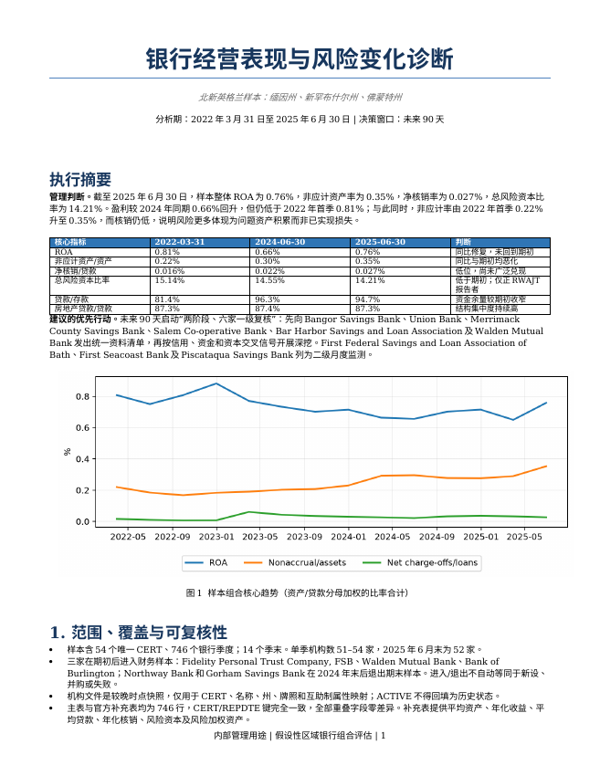
模型文档全部页面
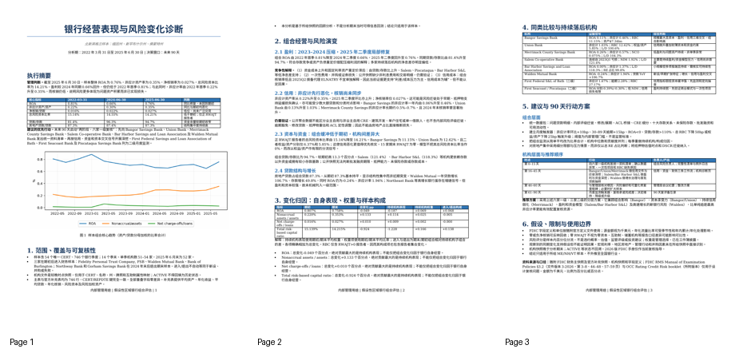
正文与表格预览
优先跟进简报
六家一级复核范围与未来90天管理安排
分析期：2022年3月31日至2025年6月30日 | 决策窗口：未来90天
决策请求
批准六家一级复核范围及统一资料请求，并指定信用、资金和财务负责人在45天内形成机构诊断；第60天审议整改，第90天复评。该范围由多维交叉信号、持续性和组合影响共同决定，不是“最差比率”名单。
选择依据
组合期末ROA 0.76%、非应计率0.35%、净核销率0.027%、总RBC 14.21%；盈利修复与信用恶化并存。
Priority_Ranking采用盈利25%、信用25%、资金15%、资本20%、趋势15%的样本内百分位；再以规模贡献、持续性、机构生命周期和数据可得性进行管理判断。
入选六家覆盖：大行组合影响、资本较薄、持续问题资产、长期亏损/低利差、高贷款存款比及高速增长新银行。
BANGOR SAVINGS BANK（CERT 18408）
| 资产 | ROA | 非应计 | 净核销 | 总RBC | 权益/资产 | 贷款/存款 | 贷款YoY |
| $7.34bn | 0.11% | 0.46% | 0.018% | 11.15% | 6.37% | 85.7% | 3.7% |
关注理由：样本最大机构；ROA长期低位、2025Q2非应计率同比上升约40bp，总RBC 11.15%、权益/资产6.37%，信用恶化与资本承受力交叉。
管理层需回答：非应计新增来自哪些借款人、行业和抵押品？2023年以来低盈利由资金成本、费用、证券或信用成本各解释多少？资本目标及压力情景余量是多少？
资料请求：非应计/特别关注/分类贷款逐笔清单；内部评级迁徙；ACL桥接；CRE细分；净息差与资金成本桥接；资本压力测试及董事会限额。
建议行动：45天内完成前20大新增问题贷款复核与资本敏感性；冻结任何突破风险偏好的集中度增长，直至管理层解释通过。
后续监测：非应计新增额、30–89天逾期、ACL/问题贷款、RBC与权益/资产、核心存款成本，月度。
UNION BANK（CERT 14158）
| 资产 | ROA | 非应计 | 净核销 | 总RBC | 权益/资产 | 贷款/存款 | 贷款YoY |
| $1.48bn | 0.70% | 1.03% | -0.001% | 12.62% | 5.85% | 100.6% | 9.8% |
关注理由：非应计率由2024Q2 0.13%升至1.03%，贷款/存款100.6%，总RBC 12.62%、权益/资产5.85%；问题资产上升时缓冲相对有限。
管理层需回答：2025Q1跳升是否为少数大额贷款？抵押物和还款来源是否更新？贷款增速高于存款的资金计划是什么？
资料请求：全部非应计和90天逾期贷款、修改/展期、抵押物评估、风险评级覆盖、未保险存款与批发融资期限、资本计划。
建议行动：先做集中度和大额关系穿透；设定问题资产和资金缺口的月度降险里程碑。
后续监测：非应计/资产、Top 10问题关系、贷款存款比、批发融资占比、RBC，月度。
MERRIMACK COUNTY SAVINGS BANK（CERT 17960）
| 资产 | ROA | 非应计 | 净核销 | 总RBC | 权益/资产 | 贷款/存款 | 贷款YoY |
| $1.35bn | 0.26% | 0.57% | 0.075% | 13.80% | 8.83% | 104.3% | -2.6% |
关注理由：自2023年起非应计率持续约0.5%–0.7%，ROA降至0.26%；2024Q4核销率曾显著上升，期末贷款/存款104.3%。
管理层需回答：问题资产为何长期不退出？2024Q4核销集中在哪些组合？低盈利与信用处置、资金成本各占多少？
资料请求：36个月问题资产滚动表；核销/回收明细；展期和TDR/修改；借款人现金流复评；存款定价与批发资金；盈利桥接。
建议行动：针对长期非应计制定逐笔退出、重组或处置日期；把回收假设与ACL、资本情景联动。
后续监测：非应计存续期、逾期迁徙、核销与回收、贷款存款比、ROA，月度。
SALEM CO-OPERATIVE BANK（CERT 27824）
| 资产 | ROA | 非应计 | 净核销 | 总RBC | 权益/资产 | 贷款/存款 | 贷款YoY |
| $0.57bn | -0.31% | 0.36% | 0.018% | 18.96% | 10.87% | 121.4% | 2.4% |
关注理由：自2023Q1持续亏损，期末ROA -0.31%、NIM 1.92%、贷款/存款121.4%；资本较强但商业模式和资金成本承压。
管理层需回答：持续亏损的结构性与一次性成分是什么？非存款融资来源、期限和抵押要求如何？何时恢复盈亏平衡？
资料请求：月度净息差桥接；存款β和存款流失；FHLB/经纪存款及抵押品；利率风险模拟；费用与收入改善计划。
建议行动：要求60天内提交可验证的12个月盈利和流动性修复计划，并设置资金集中度和成本上限。
后续监测：NIM、存款成本/余额、批发融资、可用抵押能力、ROA，月度。
BAR HARBOR SAVINGS AND LOAN ASSOCIATION（CERT 30878）
| 资产 | ROA | 非应计 | 净核销 | 总RBC | 权益/资产 | 贷款/存款 | 贷款YoY |
| $0.10bn | 0.00% | 1.37% | 0.000% | 未报 | 12.02% | 118.3% | -2.4% |
关注理由：规模小但ROA接近零、非应计率1.37%、贷款/存款118.3%、房地产贷款占99.8%，多项信号持续。
管理层需回答：非应计与逾期是否集中于少数房地产关系？高贷款存款比如何融资？低NIM是否由固定利率资产与资金成本错配造成？
资料请求：完整贷款清单及物业类型；Top 20关系；抵押估值和DSCR；存款/借款期限；利率风险与流动性压力；资本口径说明。
建议行动：做全量或高覆盖率贷款复核；设定房地产子类、单户和单一借款人限额；制定资金应急触发器。
后续监测：非应计、逾期、DSCR例外、存款流失、贷款存款比、NIM，月度。
WALDEN MUTUAL BANK（CERT 59289）
| 资产 | ROA | 非应计 | 净核销 | 总RBC | 权益/资产 | 贷款/存款 | 贷款YoY |
| $0.15bn | -0.24% | 1.94% | -0.203% | 未报 | 10.75% | 82.3% | 106.7% |
关注理由：2022年后进入样本，仍亏损；一年贷款增长106.7%、非应计1.94%、逾期2.38%，早期扩张与信用信号交叉；RBC分母未报。
管理层需回答：增长是否符合批准的风险偏好与运营能力？早期批次的承保、例外和贷后监控如何？RBC为何不可得，资本消耗路径如何？
资料请求：按发放批次的贷款表现；全部非应计/逾期；承保例外；员工与审批能力；资金来源；资本计划和RBC监管报表口径。
建议行动：立即审查增长阈值和审批权限；在数据确认前将月度增长与信用触发器提交董事会/风险委员会。
后续监测：批次逾期、非应计、例外率、贷款/存款增长差、资本消耗、流动性，月度。
统一90天工作计划
| 截止日 | 管理动作 | 升级条件 |
| 第15天 | 六家资料包齐备；数据差异和责任人确认 | 关键明细缺失、无法解释RBC或问题资产口径 |
| 第30天 | 完成问题资产/资金初筛；确定现场或文件抽样 | 新增非应计、资金缺口或重大评级覆盖不足 |
| 第45天 | 完成机构诊断与竞争性解释核验 | 资本压力后余量不足或管理层解释与明细不一致 |
| 第60天 | 批准整改、限额和月度里程碑 | 无可量化责任人、期限或资金来源 |
| 第90天 | 复评并决定升级、维持或退出一级范围 | 触发器连续恶化或承诺未完成 |
二级监测与边界
First Federal S&L of Bath：高非应计与逾期，但RBC 27.17%；先定向信用抽查。
First Seacoast Bank、Piscataqua Savings Bank：持续亏损和低NIM，但当前信用损失有限；要求盈利桥接并月度观察。
二级机构若触发ROA<0且非应计环比+10bp、贷款/存款>110%或资本下降50bp，则升级一级。
假设与限制
公开汇总数据不含内部评级、CRE细分、存款集中度、未保险存款、流动性和管理质量；资料请求旨在填补这些缺口。
风险评分是样本内分流，不是监管评级、违约预测或已证明的因果结论。
RWAJT为零时不把总RBC视为0%；机构快照为较晚时点，ACTIVE不回溯。
2026版FDIC手册与OCC手册仅指导复核设计；分析结论截至2025年6月30日，且只适用于所给区域样本。
资料来源与口径：随附FDIC财务主快照及官方补充快照、机构快照和字段定义；FDIC RMS Manual of Examination Policies §3.2（文件版本3-2026，第3–8、44–48、57–59页）与OCC Rating Credit Risk booklet（所附版本）仅用于设计复核问题。金额为千美元，比例为百分比或百分点。
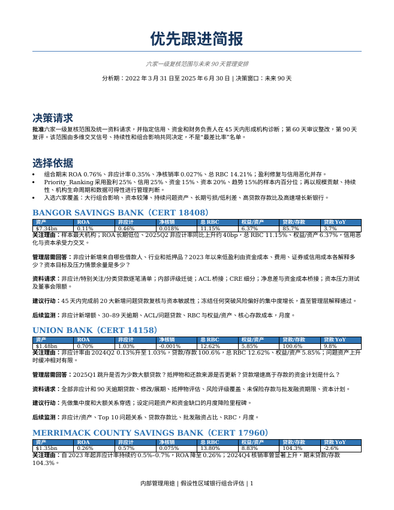
模型文档全部页面
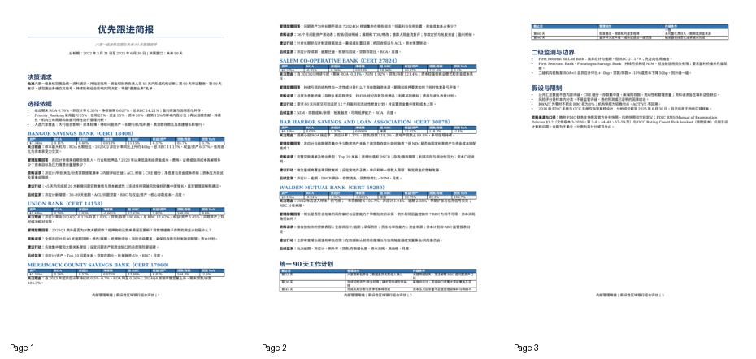
README · 13 行 × 8 列
| Regional Bank Risk Model | |||||||
| Purpose | Retrospective, hypothetical management assessment of FDIC-insured institutions in ME, NH and VT, 2022-03-31 through 2025-06-30. Not a national banking-sector inference or regulatory rating. | ||||||
| As-of date | 2025-06-30. Institution file is a later current snapshot and is used only for CERT mapping and descriptive attributes; ACTIVE is not treated as historical status. | ||||||
| Coverage | 746 bank-quarter records; 54 unique CERTs; 14 quarter-ends. Period bank counts range from 51 to 54; 52 at 2025-06-30. | ||||||
| Source reconciliation | Primary and official supplement have identical 746 CERT/REPDTE keys and zero mismatches in every overlapping field. Supplement supplies ASSET5, NETINCA, NTLNLSA, LNLSGR5, RBC and RWAJT. | ||||||
| Core calculations | ROA = annualized net income / average assets; nonaccrual rate = nonaccrual assets / total assets; NCO rate = annualized net charge-offs / average loans; total RBC ratio = RBC / risk-weighted assets. Portfolio ratios are ratio-of-sums. | ||||||
| Attribution | Exact endpoint bridge: continuing-bank performance at midpoint weights + continuing-bank denominator-weight mix + entrant effect + exit effect. Entry/exit composition equals entrant plus exit effects. RBC uses only RWAJT > 0 reporters. | ||||||
| Risk score | Relative triage only: profitability 25%, credit 25%, funding 15%, capital 20%, trend 15%. Percentile-based; missing RBC ratio is substituted with equity/assets only for triage. It is not a CAMELS or supervisory rating. | ||||||
| Important limitations | Public aggregate data cannot establish underwriting quality, criticized/classified assets, collateral values, deposit concentration/cost, uninsured deposits, liquidity buffers, CRE subsegments, ACL adequacy, merger accounting or management quality. Negative NCO indicates recoveries. Zero RBC/RWAJT is treated as not available, not zero capital. | ||||||
| Guidance use | FDIC RMS Manual §3.2 file version 3-2026 and OCC credit-risk rating booklet are used as research/forward-review guidance, not evidence available at the analysis date and not a substitute for examination. | ||||||
| Workbook navigation | Dashboard: management view. Portfolio_Trend: all quarters. Attribution: endpoint bridge. Priority_Ranking: latest triage. Bank_Quarterly: auditable metrics. Institution_Map and Source_Recon: coverage controls. Raw_Financials: source-level merged fields. | ||||||
| Units | Financial statement amounts are $000 as supplied by FDIC; rates and changes are percentage points unless explicitly labeled YoY %. |
Dashboard · 23 行 × 12 列
| Management Dashboard — 2025-06-30 | |||||||||||
| Hypothetical ME/NH/VT sample; retrospective public-data assessment; not a national-sector conclusion or regulatory rating. | |||||||||||
| Sample banks | Assets ($bn) | ROA | |||||||||
| 52 | 71.266944 | 0.758129853387461 | |||||||||
| Nonaccrual/assets | Net charge-offs/loans | Total RBC ratio | |||||||||
| 0.352970095083634 | 0.0267332928153687 | 14.2145168140421 | |||||||||
| What changed | |||||||||||
| • ROA 0.81% → 0.76% since 2022Q1; 2025Q2 improved from 0.66% a year earlier. | |||||||||||
| • Nonaccrual assets 0.22% → 0.35%; the 2025Q2 increase is concentrated in several institutions. | |||||||||||
| • NCO remains low at 0.027%, so nonaccrual migration has not yet translated into broad realized loss. | |||||||||||
| • Total RBC ratio 15.14% → 14.21%; 37 of 52 institutions report positive RWAJT at 2025Q2. | |||||||||||
| • Loan/deposit ratio rose from 81.4% to 94.7%; real estate remains 87.3% of loans. | |||||||||||
| • Priority 1: Bangor Savings, Union Bank, Merrimack County Savings, Salem Co-operative, Bar Harbor S&L, and Walden Mutual. | |||||||||||
| 90-day recommendation | |||||||||||
| Launch a two-stage review: obtain standardized credit/funding/capital packs from all six Priority 1 banks by day 15; complete asset-quality and funding deep dives by day 45; agree remediation and monthly triggers by day 60; reassess at day 90. |
Portfolio_Trend · 18 行 × 16 列
| Portfolio quarterly trend | |||||||||||||||
| Ratio-of-sums; amounts in $000; RBC excludes rows where RWAJT is zero. | |||||||||||||||
| Date | Banks | Assets | Loans | Deposits | ROA | Nonaccrual | NCO | RBC | RBC_Reporters | Equity | NIM | LoanDeposit | REShare | Reserve | PastDue |
| 2022-03-31 00:00:00 | 51 | 59852474 | 41656547 | 51195798 | 0.807165398597591 | 0.219793754891402 | 0.0162486586065398 | 15.1386253303564 | 35 | 9.87737115094023 | 3.15311863460356 | 81.3671211844378 | 87.3074261291988 | 1.03862185216648 | 0.124977289994729 |
| 2022-06-30 00:00:00 | 52 | 60747875 | 43407587 | 51453060 | 0.750139334325575 | 0.184727449314071 | 0.0102910855882196 | 14.7081373871383 | 35 | 9.37566622700794 | 3.21034322911338 | 84.3634703164399 | 87.4565983131014 | 0.997332563083961 | 0.0865445910659426 |
| 2022-09-30 00:00:00 | 53 | 62354271 | 45352464 | 52761101 | 0.807324403228626 | 0.167741516856159 | 0.00689807036313952 | 14.3665152725022 | 36 | 8.75027951172743 | 3.26501011455424 | 85.958145566371 | 87.4549594482893 | 0.961303888582548 | 0.103587130382777 |
| 2022-12-31 00:00:00 | 54 | 64502953 | 47693951 | 53858431 | 0.88211085356254 | 0.183453616456909 | 0.00741142421633453 | 13.9418467511853 | 36 | 8.86780640880116 | 3.28433480956065 | 88.5542896710081 | 87.7821487257367 | 0.919271712255502 | 0.160477924165736 |
| 2023-03-31 00:00:00 | 54 | 65286835 | 48427992 | 53547820 | 0.770347201738245 | 0.19051467267482 | 0.0612472013804382 | 14.103641795946 | 36 | 9.14035731706094 | 3.08244720022362 | 90.4387741648493 | 87.7332328790341 | 0.90445005442307 | 0.139063258312338 |
| 2023-06-30 00:00:00 | 54 | 66103367 | 49335962 | 52845820 | 0.732852559345425 | 0.202870150320785 | 0.042915508785858 | 14.1375487741731 | 37 | 9.05312130318566 | 2.99570428872814 | 93.3583053494108 | 87.6904640067625 | 0.898829134009792 | 0.100925267543482 |
| 2023-09-30 00:00:00 | 54 | 66427421 | 50008824 | 53705284 | 0.701532206760632 | 0.207128318288919 | 0.0353142491068135 | 14.3849189631321 | 38 | 8.78750057148839 | 2.97010705014434 | 93.1171390882134 | 87.5790020577169 | 0.918567891138572 | 0.133420805242462 |
| 2023-12-31 00:00:00 | 54 | 67228962 | 50536998 | 53606668 | 0.714180943564242 | 0.230143371840249 | 0.0298532062483753 | 14.5276234318384 | 38 | 9.39262159067695 | 2.94482683768665 | 94.2737160981541 | 87.7103008769931 | 0.914389493416289 | 0.202442512796791 |
| 2024-03-31 00:00:00 | 54 | 67408258 | 50932198 | 53425568 | 0.663442100185966 | 0.292020600799386 | 0.0265223349163031 | 14.5750060339485 | 39 | 9.43080445722244 | 2.74720200678239 | 95.333002355726 | 87.4617722172524 | 0.903891876019174 | 0.154472171644014 |
| 2024-06-30 00:00:00 | 54 | 68174434 | 51824900 | 53794065 | 0.655542210606891 | 0.295478800748093 | 0.0218325433746646 | 14.5493426120221 | 38 | 9.48618950030447 | 2.7583185533592 | 96.3394381889526 | 87.4158329297307 | 0.896092418895164 | 0.163985226485342 |
| 2024-09-30 00:00:00 | 54 | 69727725 | 53041932 | 56055733 | 0.70208820311431 | 0.277516583252931 | 0.0327793662869191 | 14.4784010476099 | 38 | 9.76571227585584 | 2.78775800822102 | 94.6235633026153 | 87.4295924967439 | 0.904220457128145 | 0.126808955835 |
| 2024-12-31 00:00:00 | 54 | 70110166 | 53753864 | 57334544 | 0.714737560792617 | 0.276133991752352 | 0.0367642122747315 | 14.4354989732987 | 39 | 9.54971922331492 | 2.83935780288982 | 93.754759783212 | 87.3180874959984 | 0.898815385625115 | 0.230821019593649 |
| 2025-03-31 00:00:00 | 52 | 70509303 | 54195289 | 57973566 | 0.649399356529972 | 0.289639794056679 | 0.032598506153228 | 14.1555482445706 | 37 | 9.78058881109632 | 3.10314662784289 | 93.4827590215858 | 87.2364127442885 | 0.904080426621583 | 0.259737356927213 |
| 2025-06-30 00:00:00 | 52 | 71266944 | 54879795 | 57977829 | 0.758129853387461 | 0.352970095083634 | 0.0267332928153687 | 14.2145168140421 | 37 | 9.94483080402606 | 3.15547680422727 | 94.6565194774713 | 87.3472049230505 | 0.923647765083671 | 0.237448093747362 |
Attribution · 9 行 × 13 列
| Portfolio change attribution | ||||||||||||
| 2022-03-31 to 2025-06-30; exact midpoint bridge in percentage points. Composition = entrants + exits. | ||||||||||||
| Identity | Total change = continuing-institution performance + continuing-institution weight/mix + entrants + exits | |||||||||||
| Metric | Start | End | Change | Performance | WeightMix | Entrants | Exits | Composition | Check | StartN | EndN | Continuers |
| ROA | 0.807165398597591 | 0.758129853387461 | -0.0490355452101295 | -0.186817817282275 | 0.0693301208371873 | 0.0224960812938517 | 0.0459560699411065 | 0.0684521512349582 | 8.32667268468867e-17 | 51 | 52 | 49 |
| Nonaccrual assets / assets | 0.219793754891402 | 0.352970095083634 | 0.133176340192232 | 0.113513666182551 | 0.0248967713621332 | 0.00157141627462315 | -0.00680551362707563 | -0.00523409735245248 | 0 | 51 | 52 | 49 |
| Net charge-offs / loans | 0.0162486586065398 | 0.0267332928153687 | 0.010484634208829 | 0.0089861574943197 | 0.00161983240262388 | -0.000488147411629385 | 0.000366791723514767 | -0.000121355688114617 | -1.73472347597681e-18 | 51 | 52 | 49 |
| Total risk-based capital ratio | 15.1386253303564 | 14.2145168140421 | -0.924108516314329 | -1.22829907167485 | 0.165818950866496 | 0.155331977984188 | -0.0169603734901589 | 0.138371604494029 | 0 | 35 | 37 | 33 |
Priority_Ranking · 56 行 × 28 列
| 2025-06-30 priority ranking | |||||||||||||||
| Relative evidence-based triage; high score means more review attention, not regulatory weakness. | |||||||||||||||
| Risk_Rank | FOLLOW_UP | CERT | NAMEFULL | STALP | PEER_GROUP | ASSET | Risk_Score | Profit_Risk | Credit_Risk | Funding_Risk | Capital_Risk | Trend_Risk | ROA | ROA_YOY_PP | NIMY |
| 1 | Priority 1 | 18408 | BANGOR SAVINGS BANK | ME | ≥ $5bn | 7335916 | 70.6868350250703 | 81.9230769230769 | 63.8461538461538 | 21.6440422322775 | 97.2972972972973 | 76.9230769230769 | 0.106277541750663 | 0.0557974274581524 | 2.4185246455811 |
| 2 | Priority 1 | 30878 | BAR HARBOR SAVINGS AND LOAN ASSOCIATION | ME | < $250m | 98909 | 68.2279411764706 | 90.3846153846154 | 81.1538461538462 | 87.8657616892911 | 50 | 14.4230769230769 | 0.00201541794729682 | 0.229730388276808 | 1.49226620464168 |
| 3 | Priority 1 | 14158 | UNION BANK | VT | $1bn–$5bn | 1479452 | 67.4202335819983 | 45.7692307692308 | 55.9615384615385 | 73.7405731523379 | 91.8918918918919 | 83.6538461538462 | 0.704869265488618 | 0.0169385208256496 | 2.99867350712437 |
| 4 | Priority 1 | 17960 | MERRIMACK COUNTY SAVINGS BANK | NH | $1bn–$5bn | 1351508 | 65.202060657943 | 62.3076923076923 | 81.3461538461539 | 48.921568627451 | 72.972972972973 | 49.0384615384615 | 0.262782180471353 | -0.0927297009371225 | 2.95418789912176 |
| 5 | Priority 1 | 27824 | SALEM CO-OPERATIVE BANK | NH | $250m–$1bn | 571650 | 64.1139017977253 | 94.2307692307692 | 67.5 | 72.5490196078431 | 13.5135135135135 | 67.3076923076923 | -0.305904588568829 | 0.0681187238431095 | 1.91505644013124 |
| 6 | Routine | 14140 | NORTHFIELD SAVINGS BANK | VT | $1bn–$5bn | 1560737 | 61.8846153846154 | 73.4615384615385 | 67.6923076923077 | 31.7948717948718 | 50 | 78.8461538461538 | 0.319216663443552 | 0.0275328486987358 | 2.58054568551282 |
| 7 | Priority 1 | 59289 | WALDEN MUTUAL BANK | NH | < $250m | 145991 | 60.8653846153846 | 59.6153846153846 | 80.3846153846154 | 53.8461538461539 | 50 | 51.9230769230769 | -0.239988600541474 | 0.890401990427017 | 3.99218654620925 |
| 8 | Priority 2 | 29636 | FIRST FEDERAL SAVINGS AND LOAN ASSOCIATION OF BATH | ME | < $250m | 185573 | 60.5927601809955 | 54.6153846153846 | 94.6153846153846 | 78.3107088989442 | 0 | 76.9230769230769 | 0.234619113348782 | -0.0131469002969494 | 3.50724516740479 |
| 9 | Routine | 28288 | AUBURN SAVINGS BANK, FSB | ME | < $250m | 102731 | 57.7682524153112 | 72.6923076923077 | 35.9615384615385 | 69.9622926093514 | 81.0810810810811 | 25.9615384615385 | 0.2469079353467 | 0.142840638494736 | 2.73418663286535 |
| 10 | Routine | 17751 | ANDROSCOGGIN SAVINGS BANK | ME | $1bn–$5bn | 1763462 | 57.3323345970405 | 58.8461538461539 | 42.5 | 78.2654600301659 | 70.2702702702703 | 41.3461538461539 | 0.456345594479789 | 0.0130310302306921 | 2.87157524616151 |
| 11 | Routine | 4255 | THE CAMDEN NATIONAL BANK | ME | ≥ $5bn | 6902692 | 56.9098538583833 | 37.6923076923077 | 48.4615384615385 | 38.763197586727 | 86.4864864864865 | 81.7307692307692 | 0.719073888795519 | -0.205739016269573 | 3.34318547116715 |
| 12 | Routine | 17180 | MEREDITH VILLAGE SAVINGS BANK | NH | $1bn–$5bn | 1609518 | 56.8818637642167 | 63.8461538461539 | 63.2692307692308 | 48.8763197586727 | 40.5405405405405 | 64.4230769230769 | 0.322125402656753 | -0.0752486143419566 | 2.82301178340663 |
| 13 | Routine | 18038 | CLAREMONT SAVINGS BANK | NH | $250m–$1bn | 597834 | 55.4377828054299 | 59.2307692307692 | 49.4230769230769 | 68.9441930618401 | 50 | 52.8846153846154 | 0.425956323893033 | -0.229215508959529 | 2.89442109724558 |
| 14 | Routine | 17743 | SACO & BIDDEFORD SAVINGS INSTITUTION | ME | $1bn–$5bn | 1439697 | 55.4044117647059 | 86.5384615384616 | 28.4615384615385 | 81.2217194570136 | 50 | 29.8076923076923 | 0.0674104441716298 | 0.0987102250013755 | 2.0701108760452 |
| 15 | Routine | 18028 | SUGAR RIVER BANK | NH | $250m–$1bn | 404550 | 54.847850678733 | 46.9230769230769 | 71.3461538461538 | 28.7933634992459 | 50 | 73.0769230769231 | 0.514962579054543 | 0.0446100765477707 | 3.48454058231308 |
| 16 | Routine | 18013 | MASCOMA BANK | NH | $1bn–$5bn | 2896306 | 54.7247156658921 | 61.9230769230769 | 27.3076923076923 | 45.2714932126697 | 89.1891891891892 | 51.9230769230769 | 0.336164972529288 | 0.113385276364472 | 2.8369626762913 |
| 17 | Priority 2 | 17443 | PISCATAQUA SAVINGS BANK | NH | $250m–$1bn | 366584 | 54.35407239819 | 94.6153846153846 | 30 | 41.8476621417798 | 50 | 46.1538461538462 | -0.301132819905539 | -0.110925478807922 | 1.29920976724489 |
Bank_Quarterly · 750 行 × 41 列
| Bank-quarter analytical detail | |||||||||||||||
| Source values plus calculated operating, credit, funding, structure and trend fields. Filter by CERT or institution. | |||||||||||||||
| CERT | REPDTE_DT | NAMEFULL | STALP | PEER_GROUP | ASSET | ASSET5 | DEP | EQ | LNLSGR | LNLSGR5 | LNRE | LNCI | LNCON | NAASSET | P3ASSET |
| 4255 | 2022-03-31 00:00:00 | THE CAMDEN NATIONAL BANK | ME | ≥ $5bn | 5406954 | 5444095.5 | 4617834 | 494704 | 3540923 | 3489106 | 3145490 | 332872 | 18973 | 4452 | 1301 |
| 4255 | 2022-06-30 00:00:00 | THE CAMDEN NATIONAL BANK | ME | ≥ $5bn | 5454674 | 5447621.66666667 | 4564900 | 460996 | 3727567 | 3568593 | 3314850 | 338478 | 19646 | 3505 | 2175 |
| 4255 | 2022-09-30 00:00:00 | THE CAMDEN NATIONAL BANK | ME | ≥ $5bn | 5539983 | 5470712 | 4604972 | 444488 | 3865309 | 3642772 | 3453052 | 340321 | 21084 | 2765 | 4708 |
| 4255 | 2022-12-31 00:00:00 | THE CAMDEN NATIONAL BANK | ME | ≥ $5bn | 5662457 | 5509061 | 4867005 | 460754 | 4015550 | 3717327.6 | 3596765 | 354169 | 20661 | 2991 | 2554 |
| 4255 | 2023-03-31 00:00:00 | THE CAMDEN NATIONAL BANK | ME | ≥ $5bn | 5707400 | 5684928.5 | 4682533 | 475108 | 4077670 | 4046610 | 3668834 | 347458 | 19811 | 2958 | 2138 |
| 4255 | 2023-06-30 00:00:00 | THE CAMDEN NATIONAL BANK | ME | ≥ $5bn | 5734437 | 5701431.33333333 | 4731600 | 478695 | 4112167 | 4068462.33333333 | 3708024 | 346048 | 19845 | 3048 | 2251 |
| 4255 | 2023-09-30 00:00:00 | THE CAMDEN NATIONAL BANK | ME | ≥ $5bn | 5769551 | 5718461.25 | 4715626 | 473807 | 4069600 | 4068746.75 | 3692040 | 329244 | 19312 | 4624 | 3802 |
| 4255 | 2023-12-31 00:00:00 | THE CAMDEN NATIONAL BANK | ME | ≥ $5bn | 5700364 | 5714841.8 | 4632579 | 508674 | 4108414 | 4076680.2 | 3717758 | 335214 | 18237 | 5448 | 4959 |
| 4255 | 2024-03-31 00:00:00 | THE CAMDEN NATIONAL BANK | ME | ≥ $5bn | 5784624 | 5742494 | 4586176 | 514258 | 4130564 | 4119489 | 3749893 | 330311 | 17653 | 5658 | 2044 |
| 4255 | 2024-06-30 00:00:00 | THE CAMDEN NATIONAL BANK | ME | ≥ $5bn | 5709625 | 5731537.66666667 | 4547560 | 521498 | 4153682 | 4130886.66666667 | 3763309 | 336171 | 16595 | 7795 | 2245 |
| 4255 | 2024-09-30 00:00:00 | THE CAMDEN NATIONAL BANK | ME | ≥ $5bn | 5730254 | 5731216.75 | 4609875 | 543598 | 4128435 | 4130273.75 | 3753732 | 319799 | 16003 | 5350 | 1391 |
| 4255 | 2024-12-31 00:00:00 | THE CAMDEN NATIONAL BANK | ME | ≥ $5bn | 5790238 | 5743021 | 4671726 | 539279 | 4126308 | 4129480.6 | 3755741 | 317650 | 15066 | 4829 | 2261 |
| 4255 | 2025-03-31 00:00:00 | THE CAMDEN NATIONAL BANK | ME | ≥ $5bn | 6948167 | 6369202.5 | 5632856 | 671520 | 4896145 | 4511226.5 | 4419349 | 341292 | 24145 | 7251 | 3341 |
| 4255 | 2025-06-30 00:00:00 | THE CAMDEN NATIONAL BANK | ME | ≥ $5bn | 6902692 | 6547032.33333333 | 5545916 | 687541 | 4953936 | 4658796.33333333 | 4456325 | 341829 | 23213 | 18177 | 4114 |
| 4256 | 2022-03-31 00:00:00 | FIRST NATIONAL BANK | ME | $1bn–$5bn | 2514032 | 2505113 | 2159436 | 204756 | 1707748 | 1678116 | 1367138 | 226654 | 22077 | 5049 | 892 |
| 4256 | 2022-06-30 00:00:00 | FIRST NATIONAL BANK | ME | $1bn–$5bn | 2595799 | 2535341.66666667 | 2252978 | 198923 | 1789044 | 1715092 | 1445139 | 229669 | 21356 | 4812 | 997 |
| 4256 | 2022-09-30 00:00:00 | FIRST NATIONAL BANK | ME | $1bn–$5bn | 2699877 | 2576475.5 | 2370865 | 191219 | 1857975 | 1750812.75 | 1478344 | 262426 | 20819 | 1860 | 898 |
Institution_Map · 58 行 × 11 列
| Institution mapping | ||||||||||
| Later institution snapshot; one row per financial-sample CERT. ACTIVE is current-snapshot context, not historical status. | ||||||||||
| CERT | NAME | STALP | ACTIVE | REPDTE | BKCLASS | CHRTAGNT | MUTUAL | ESTYMD | CITY | COUNTY |
| 4255 | The Camden National Bank | ME | 1 | 06/30/2026 | N | OCC | 0 | 01/01/1875 | Camden | Knox |
| 4256 | First National Bank | ME | 1 | 06/30/2026 | N | OCC | 0 | 04/19/1864 | Damariscotta | Lincoln |
| 6271 | Community National Bank | VT | 1 | 06/30/2026 | N | OCC | 0 | 01/15/1851 | Derby | Orleans |
| 6275 | The National Bank of Middlebury | VT | 1 | 06/30/2026 | N | OCC | 0 | 11/09/1831 | Middlebury | Addison |
| 6280 | The First National Bank of Orwell | VT | 1 | 06/30/2026 | N | OCC | 0 | 01/01/1863 | Orwell | Addison |
| 11971 | Bar Harbor Bank & Trust | ME | 1 | 06/30/2026 | NM | STATE | 0 | 09/15/1887 | Bar Harbor | Hancock |
| 12874 | Katahdin Trust Company | ME | 1 | 06/30/2026 | NM | STATE | 0 | 03/07/1918 | Patten | Penobscot |
| 13063 | Kennebunk Savings Bank | ME | 1 | 06/30/2026 | SI | STATE | 0 | 05/01/1871 | Kennebunk | York |
| 14134 | Passumpsic Savings Bank | VT | 1 | 06/30/2026 | SI | STATE | 0 | 02/24/1853 | Saint Johnsbury | Caledonia |
| 14136 | Wells River Savings Bank | VT | 1 | 06/30/2026 | SI | STATE | 1 | 01/01/1892 | Wells River | Orange |
| 14140 | Northfield Savings Bank | VT | 1 | 06/30/2026 | SI | STATE | 0 | 11/21/1867 | Northfield | Washington |
| 14158 | Union Bank | VT | 1 | 06/30/2026 | NM | STATE | 0 | 01/01/1891 | Morrisville | Lamoille |
| 14168 | Peoples Trust Company of St. Albans | VT | 1 | 06/30/2026 | NM | STATE | 0 | 11/12/1866 | Saint Albans | Franklin |
| 14240 | Northway Bank | NH | 0 | 12/31/2024 | NM | STATE | 0 | 01/01/1934 | Berlin | Coos |
| 17115 | Partners Bank of New England | ME | 1 | 06/30/2026 | SI | STATE | 0 | 11/01/1933 | Sanford | York |
| 17180 | Meredith Village Savings Bank | NH | 1 | 06/30/2026 | SI | STATE | 0 | 01/01/1869 | Meredith | Belknap |
| 17443 | Piscataqua Savings Bank | NH | 1 | 06/30/2026 | SI | STATE | 1 | 01/01/1877 | Portsmouth | Rockingham |
Source_Recon · 18 行 × 8 列
| Source reconciliation | |||||||
| Primary versus official supplement; all keys and overlapping values checked before use. | |||||||
| Test | Primary | Supplement | Pass | Detail | |||
| Row count | 746 | 746 | True | ||||
| Unique CERT/REPDTE keys | 746 | 746 | True | No duplicate keys | |||
| ASSET | 746 | 746 | True | 0 mismatches | |||
| DEP | 746 | 746 | True | 0 mismatches | |||
| ID | 746 | 746 | True | 0 mismatches | |||
| LNLSGR | 746 | 746 | True | 0 mismatches | |||
| LNLSNET | 746 | 746 | True | 0 mismatches | |||
| NAASSET | 746 | 746 | True | 0 mismatches | |||
| NAMEFULL | 746 | 746 | True | 0 mismatches | |||
| NCLNLSR | 746 | 746 | True | 0 mismatches | |||
| NTLNLS | 746 | 746 | True | 0 mismatches | |||
| RBCRWAJ | 746 | 746 | True | 0 mismatches | |||
| ROA | 746 | 746 | True | 0 mismatches | |||
| STALP | 746 | 746 | True | 0 mismatches |
Definitions · 31 行 × 8 列
| Official field definitions | |||||||
| Extracted from supplied financial_definitions.yaml; analytical formulas and limitations are documented in README. | |||||||
| Field | Official title | Official description | Official formula metadata | ||||
| ASSET | Total assets | The sum of all assets owned by the institution including cash, loans, securities, bank premises and other assets. This total does not include off-balance-sheet accounts. | |||||
| ASSET5 | TOTAL ASSETS-CAVG5 | ||||||
| DEP | Total deposits | The sum of all deposits including demand deposits, money market deposits, other savings deposits, time deposits and deposits in foreign offices. | |||||
| EQ | Equity capital | Total equity capital (includes preferred and common stock, surplus and undivided profits). | |||||
| EQV | BANK EQUITY CAPITAL/ASSETS | {"type": "percentage", "parameters": {"setField": "EQV", "numerator": "EQ", "denominator": "ASSET"}} | |||||
| LNATRESR | LOAN LOSS RESERVE/GROSS LN&LS | {"type": "percentage", "parameters": {"setField": "LNATRESR", "numerator": "LNATRES", "denominator": "LNLSGR"}} | |||||
| LNCI | C&I LOANS | ||||||
| LNCON | CONSUMER LOANS | ||||||
| LNLSGR | LOANS AND LEASES-TOTAL | ||||||
| LNLSGR5 | LOANS AND LEASES-TOTAL-CAVG5 | ||||||
| LNLSNET | LOANS AND LEASES-NET | ||||||
| LNRE | RE LOANS | ||||||
| NAASSET | NONACCRUAL-TOTAL ASSETS | ||||||
| NCLNLSR | N/C LNS & LS/GROSS LNS & LS | {"type": "percentage", "parameters": {"setField": "NCLNLSR", "numerator": "NCLNLS", "denominator": "LNLSGRJ"}} | |||||
| NETINCA | NET INCOME- BANK- ANN | ||||||
| NIMY | NET INTEREST MARGIN | {"type": "percentage", "parameters": {"setField": "NIMY", "numerator": "NIMA", "denominator": "ERNAST5"}} | |||||
| NTLNLS | TOTAL LN&LS NET CHARGE-OFFS |
Raw_Financials · 750 行 × 34 列
| Merged source financials | |||||||||||||||
| Primary snapshot plus non-overlapping supplemental fields; amounts in $000 as supplied. | |||||||||||||||
| CERT | REPDTE | NAMEFULL | STALP | ASSET | ASSET5 | DEP | EQ | EQV | LNLSGR | LNLSGR5 | LNLSNET | LNRE | LNCI | LNCON | NAASSET |
| 4255 | 2022-03-31 00:00:00 | THE CAMDEN NATIONAL BANK | ME | 5406954 | 5444095.5 | 4617834 | 494704 | 9.14940278759538 | 3540923 | 3489106 | 3509153 | 3145490 | 332872 | 18973 | 4452 |
| 4256 | 2022-03-31 00:00:00 | FIRST NATIONAL BANK | ME | 2514032 | 2505113 | 2159436 | 204756 | 8.14452640220968 | 1707748 | 1678116 | 1691982 | 1367138 | 226654 | 22077 | 5049 |
| 6271 | 2022-03-31 00:00:00 | COMMUNITY NATIONAL BANK | VT | 1004765 | 1011649 | 878431 | 89733 | 8.93074500007464 | 696813 | 693551.5 | 688922 | 523731 | 116404 | 3056 | 5415 |
| 6275 | 2022-03-31 00:00:00 | THE NATIONAL BANK OF MIDDLEBURY | VT | 531651 | 540168.5 | 472420 | 32835 | 6.17604405897854 | 284192 | 284051 | 281069 | 237696 | 24050 | 12501 | 1559 |
| 6280 | 2022-03-31 00:00:00 | THE FIRST NATIONAL BANK OF ORWELL | VT | 83998 | 84673 | 75709 | 8131 | 9.67999238077097 | 61955 | 61495 | 61128 | 53939 | 2686 | 1876 | 836 |
| 11971 | 2022-03-31 00:00:00 | BAR HARBOR BANK & TRUST | ME | 3688993 | 3697790 | 3055632 | 461681 | 12.5150955829951 | 2657406 | 2597420 | 2634216 | 2317079 | 201303 | 7873 | 9213 |
| 12874 | 2022-03-31 00:00:00 | KATAHDIN TRUST COMPANY | ME | 964163 | 952017.5 | 854194 | 97916 | 10.1555442388891 | 732906 | 731654.5 | 725098 | 577596 | 138143 | 5249 | 1069 |
| 13063 | 2022-03-31 00:00:00 | KENNEBUNK SAVINGS BANK | ME | 1784835 | 1805241.5 | 1619076 | 148181 | 8.30222401510504 | 1223389 | 1207345 | 1208488 | 1160807 | 55361 | 837 | 408 |
| 14134 | 2022-03-31 00:00:00 | PASSUMPSIC SAVINGS BANK | VT | 869402 | 874789 | 737795 | 101808 | 11.7101179891466 | 596388 | 594142.5 | 588030 | 516229 | 27870 | 26813 | 8014 |
| 14136 | 2022-03-31 00:00:00 | WELLS RIVER SAVINGS BANK | VT | 222692 | 222501.5 | 199279 | 18834 | 8.45742101198067 | 121199 | 120566.5 | 119805 | 96809 | 12518 | 11422 | 174 |
| 14140 | 2022-03-31 00:00:00 | NORTHFIELD SAVINGS BANK | VT | 1414510 | 1408190.5 | 1199427 | 123854 | 8.75596496313211 | 957867 | 938336 | 947256 | 866005 | 82518 | 1318 | 5589 |
| 14158 | 2022-03-31 00:00:00 | UNION BANK | VT | 1232701 | 1218624 | 1137254 | 85105 | 6.90394507670554 | 830963 | 816273 | 822627 | 698008 | 44549 | 2157 | 4405 |
| 14168 | 2022-03-31 00:00:00 | PEOPLES TRUST COMPANY OF ST. ALBANS | VT | 384095 | 382949 | 345364 | 34244 | 8.91550267511944 | 191155 | 186597 | 188225 | 161619 | 9537 | 8111 | 1188 |
| 14240 | 2022-03-31 00:00:00 | NORTHWAY BANK | NH | 1221074 | 1231882 | 1020645 | 102113 | 8.36255624147267 | 824670 | 810960.5 | 815200 | 705835 | 29648 | 17990 | 2204 |
| 17115 | 2022-03-31 00:00:00 | PARTNERS BANK OF NEW ENGLAND | ME | 836644 | 839485 | 738943 | 83239 | 9.94915400098489 | 656481 | 646230.5 | 648819 | 608827 | 43003 | 3606 | 164 |
| 17180 | 2022-03-31 00:00:00 | MEREDITH VILLAGE SAVINGS BANK | NH | 1291920 | 1289504 | 1121172 | 126979 | 9.82870456375008 | 1143017 | 1137154 | 1131745 | 937482 | 44797 | 141431 | 5753 |
| 17443 | 2022-03-31 00:00:00 | PISCATAQUA SAVINGS BANK | NH | 352255 | 350099 | 302135 | 42822 | 12.1565343288243 | 188952 | 186346 | 187330 | 186037 | 0 | 1909 | 842 |
qwen3.8-max
本次没有可下载的交付文件；是否参与评分须按退出原因核定。
qwen3.8-max
operating_performance_diagnosis.docx
正文与表格预览
北新英格兰地区银行组合 经营表现与财务风险变化诊断
评估期：2022-03-31 至 2025-06-30 · 样本：VT / NH / ME 三州 54 家 FDIC 保险机构
假设性内部管理分析 · 不外推为全国银行业判断 · 数据源：FDIC BankFind RISVIEW 财务快照
一、执行摘要
本报告基于 FDIC 财务快照，对北新英格兰（佛蒙特、新罕布什尔、缅因）三州 54 家银行在 2022Q1–2025Q2 共 14 个季度的经营与风险演变进行组合层诊断。核心结论是：样本整体仍属稳健，但盈利中枢下移、信用质量温和恶化、资金趋紧三条线索同时出现，且风险高度集中于少数机构。组合层四项关键指标如下（资产加权口径，已剔除无贷款的信托公司 CERT 35206；总风险资本比率为报告子集口径）。
| 关键指标（组合口径） | 2022Q1 | 2024Q2 | 2025Q2 | 全期变化 | 解读 |
| 资产回报率 ROA | 0.81% | 0.63% | 0.73% | −7.6 bp | 中枢下移，2024见底后回升但仍未回到期初 |
| 非应计资产率 NA/资产 | 0.22% | 0.30% | 0.35% | +13.4 bp | 持续、普遍、趋势性上行 |
| 净核销率（年化） | 0.016% | 0.022% | 0.027% | +1.1 bp | 绝对水平极低，尚非主要损失来源 |
| 总风险资本比率 | 15.14% | 14.55% | 14.22% | −92 bp | 缓冲仍充足，但趋势向下 |
参考：权益/资产 9.88%→9.86%（期初期末基本持平，期间受利率AOCI影响曾下探8.67%）；净息差NIM 3.15%→见顶3.28%(2022Q4)→见底2.75%(2024Q1)→回升3.16%；贷款/资产 69.6%→77.1%；贷款/存款 80.5%→93.8%。数据见模型 04_组合季度趋势。
五项主要判断：
1. 盈利下行是"利率挤压 + 信用成本抬升"叠加，而非单一因素。组合ROA与NIM高度同步（相关系数0.78），NIM在2022Q4见顶、2024Q1见底、2025年回升的"先压后弹"形态，是ROA路径的主导变量；2025年ROA未随NIM完全修复，则因拨备成本同期跳升。
2. 信用恶化是真实的、普遍的，不是样本构成假象。归因显示非应计率+13.4bp中约82%（+11.0bp）来自持续机构自身信用变差，仅约27%由资产权重迁移贡献。49家有可比数据的银行中26家非应计率上升、9家升幅≥40bp。
3. 风险高度集中。2025Q2组合非应计余额$251.6mm中，前6家占51%、前10家占66%；Northeast、Bangor、Camden三家大行合计占34%。组合层"温和"读数掩盖了个体分化。
4. 组合ROA跌幅低估了典型行的压力。归因显示持续机构自身ROA实际下降−18.2bp，但被+10.0bp的正向权重迁移（资产向高ROA成长行集中）抵消了近一半。
5. 两家de novo机构（Walden Mutual、Bank of Burlington）自设立起持续亏损，是唯一的"两窗口均负ROA"机构；但其规模小、资本尚足，属成长期特征而非即期风险。
优先行动建议（详见第七节与配套 priority_follow_up_brief.docx）：将有限复核资源集中投向一个"信用恶化 × 资本偏薄 × 规模权重"三重叠加的16家优先跟进队列，其中Tier 1两家（Walden Mutual、Bar Harbor Savings & Loan）、Tier 2十四家。对样本内最大权重且刚发生大额非应计跳升的 Bangor Savings Bank（占总资产10.3%、单季非应计+$25.4mm）应列为组合层最优先复核对象。
二、范围、数据与方法
2.1 样本与数据源
样本 = FDIC 财务快照中评估期内出现过的 54 家机构（CERT 级），覆盖 VT(12)、NH(19)、ME(23)。财务字段来自两份快照：原快照（25字段，含ROA/ROE/NIMY/EQ/逾期/贷款结构等）与官方补充快照（含缺失的分母 NETINCA、NTLNLSA、ASSET5、LNLSGR5、RBC、RWAJT）。两快照按 ID 键完全一致（746行×2），13个重合字段零数值差异，可安全合并（模型 03_快照核对）。机构属性来自 FDIC 机构快照（状态、专业分组、互助/社区银行标志、结构事件码）。
2.2 计量口径
组合层聚合采用金额加总后再相除（资产加权），非各行简单平均：ROA=ΣNETINCA/ΣASSET5；非应计率=ΣNAASSET/ΣASSET；净核销率=ΣNTLNLSA/ΣLNLSGR5；总风险资本比率=ΣRBC/ΣRWAJT。所有金额为千美元。
信托公司（CERT 35206，Fidelity Personal Trust）无贷款业务、ROA极端（28.5%），会扭曲组合信用/盈利读数，故在组合聚合中剔除，仅保留在覆盖与机构对应表中并标注。
总风险资本比率：RWAJT=0的行（多为互助制/储蓄机构豁免PCA风险资本报告）不参与聚合。2025Q2有37/52家报告，覆盖资产$56.3bn/$71.3bn；资本充足性另以全样本可比的权益/资产（杠杆）佐证。
变化归因采用对称（midpoint）shift-share 分解：组合指标变化 = 持续机构自身表现 Σ(w̄·Δr) + 持续机构权重迁移 Σ(r̄·Δw) + 进入项 + 退出项，四项之和精确等于总变化（模型 07_组合变化归因设核对列）。
2.3 分析性质与关键限制（先于结论声明）
这是基于所给期末快照的回顾性分析，不是"分析期末当时可得信息"的回测。快照含事后信息（如2025年内已完成的合并之期末状态）。
样本为三州54家，结论仅适用于该样本，不构成对全国或全州银行业的判断，亦非监管评级。
财务快照无逐笔贷款分类（次级/可疑/损失明细）、无证券组合与表外项目明细。信用判断以"非应计+逾期+净核销+拨备覆盖率"的汇总代理，可能低估或错判个别机构真实资产质量。
本报告所有归因均为观察性关联，非因果证明。凡涉及"驱动"，均在第四节以竞争性解释方式呈现证据强弱与待验证项。
三、组合层经营与风险演变
3.1 盈利能力：中枢下移，利率主导，2025受拨备拖累
组合ROA从2022Q1的0.81%降至2024Q2的0.63%（周期低点），2025Q2回升至0.73%，但未回到期初水平。ROA路径与NIM几乎同步：NIM在加息初期（负债重定价滞后）于2022Q4见顶3.28%，随后随存款成本追赶持续下行至2024Q1的2.75%见底，2025年随资产端重定价回升至3.16%。二者相关系数0.78，表明利差是样本盈利的首要摆动项。
但2025年的ROA修复被拨备打断：组合拨备/均资产从2024Q4的0.032%跳升至2025Q1的0.121%、Q2的0.124%。这一跳升高度集中——Camden National单家占组合拨备的38–45%（与其2025Q1吸收Northway Bank、房地产敞口扩大相关），并非全样本普遍现象。剔除该项，样本盈利修复本应更充分。中位数ROA（0.61%→0.62%）在期内基本持平，说明组合ROA的下移更多由权重集中的大行摆动主导，而非中小行普遍走弱。
3.2 信用质量：温和但趋势性恶化，且高度集中
非应计资产率从0.22%升至0.35%（+13.4bp），逾期（30–89天/资产）从0.116%升至0.222%，分类贷款/贷款从0.32%升至0.48%，三条信用线同向上行。净核销率虽同步上升但绝对水平仍极低（0.027%），拨备覆盖率（ALLL/贷款）期内基本稳定在0.9–1.0%。这表明：恶化主要体现在"存量资产质量迁移"（非应计与分类上升），尚未大规模转化为已实现损失（核销），拨备计提也大体跟上了分类资产的节奏。
集中度是关键。2025Q2组合非应计余额$251.6mm，前6家占51%、前10家占66%；3家银行非应计为零、25家低于0.25%。换言之，"组合非应计率0.35%"是一个被少数机构抬高的平均数，多数机构信用仍属清洁。信用风险的分散度低，意味着对头部几家的复核价值远高于全样本普查。
| 非应计余额前列机构 (2025Q2) | 非应计$mm | 占组合非应计 | 该行NA/资产 | 备注 |
| Northeast Bank (19690) | 35.0 | 14% | 0.82% | 期内并购做大(资产+173%)，NA随之累积 |
| Bangor Savings Bank (18408) | 33.5 | 13% | 0.46% | 样本最大行(10.3%权重)，2025Q2单季NA+$25.4mm |
| The Camden National Bank (4255) | 18.2 | 7% | 0.26% | 吸收Northway，拨备大幅计提 |
| Union Bank (14158) | 15.2 | 6% | 1.03% | 权益/资产仅5.85%(样本最薄) |
| Maine Community Bank (17741) | 14.2 | 6% | 0.52% | 2025Q1吸收Gorham后资产翻倍 |
| Bank of New England (24540) | 11.4 | 5% | 0.65% | 2024Q1非应计曾骤升后回落 |
数据见模型 05_银行季度明细 / 06_银行汇总期末。
3.3 资本承受力：杠杆稳定，但风险资本缓冲缓慢收窄
权益/资产在期初期末基本持平（9.88%→9.86%），但期间经历明显波动：2022年加息令债券浮亏通过AOCI压低账面权益，组合权益/资产于2022Q3下探8.67%，随后随利率回落与盈利留存修复至9.86%。归因显示，全期权益/资产的"稳定"并非各行主动补充资本的结果——持续机构自身实际去杠杆−31.7bp，被+61.4bp的权重迁移（资产向资本较厚的大行集中）抵消。这是一个需要警惕的结构性信号：组合资本的表面稳定部分依赖于资产构成的变化。
风险资本端，总风险资本比率从15.14%降至14.22%（−92bp），缓冲仍然充足但趋势向下。需强调该比率仅覆盖报告子集（2025Q2为37家），且子集成员随时间变化（如Kennebec、Rockland、Burlington进入报告，Millyard、Northway退出），跨期比较受构成影响较大——这也是本报告同时用全样本可比的权益/资产作交叉佐证的原因。样本内有10家银行权益/资产低于8%，其中Union Bank（5.85%）、Bangor（6.37%）、Auburn FSB（6.10%）最薄，且Bangor的11.15%总风险资本比率在报告行中偏低。
3.4 资金状况：存款相对收缩，贷存比系统性抬升
贷款/资产从69.6%升至77.1%，存款/资产从85.5%降至81.4%，组合贷存比（贷款净额/存款）从80.5%升至93.8%。对49家可比机构，全期存款增长18.0%落后于资产增长24.0%——即资产扩张部分依赖非核心资金（借款/批发）。这与加息期存款竞争、以及贷款需求相对旺盛的行业背景一致，但结果是资金缓冲收窄。2025Q2有若干机构贷存比超过100%（Salem Co-op 120.7%、Bar Harbor S&L 117.4%、Rockland 108.5%、Franklin ME 108.7%），其资金稳定性应单独关注。房地产贷款集中度全期稳定在约87%，样本整体是房地产主导型资产负债表，对利率与抵押品价值高度敏感。
四、变化归因：多少来自持续机构，多少来自构成/权重
管理层的核心问题是：组合结果的变化，在多大程度上是持续机构自身表现变差，多大程度上只是样本构成或规模权重变化。下表为全期（2022Q1→2025Q2）shift-share 分解（单位：百分点或bp，四项之和=总变化，已验证闭合）。
| 指标 | 期初 | 期末 | 总变化 | ①持续机构自身 | ②权重迁移 | ③进入 | ④退出 | 主导来源 |
| 非应计/资产 | 0.220% | 0.353% | +13.4bp | +11.0bp | +3.6bp | +0.0 | −1.7bp | ①自身恶化(82%) |
| 资产回报率ROA | 0.807% | 0.731% | −7.6bp | −18.2bp | +10.0bp | −0.0 | +0.6bp | ①自身拖累,②抵消 |
| 净核销率(年化) | 0.016% | 0.027% | +1.1bp | +0.9bp | +0.2bp | −0.0 | −0.0 | ①自身(82%) |
| 权益/资产 | 9.877% | 9.856% | −2.1bp | −31.7bp | +61.4bp | +5.8bp | −37.6bp | ②权重迁移 |
| 贷款/资产 | 69.6% | 77.1% | +7.5pp | +6.7pp | +3.7pp | +0.4pp | −3.3pp | ①自身扩张 |
| 总风险资本比率 | 15.14% | 14.22% | −92bp | −118bp | −10bp | +82bp | −46bp | ①自身(子集) |
①=Σw̄·Δr(持续机构比率变化)；②=Σr̄·Δw(规模权重变化)；③④=进入/退出机构。全期进入=Walden Mutual、Bank of Burlington(de novo)，退出=Northway、Gorham(被并购)。资本比率归因为RWAJT>0报告子集口径。数据见模型 07_组合变化归因。
归因给出的清晰回答：
信用（非应计、净核销）与贷款扩张的变化，绝大部分（约82%、90%、89%）来自持续机构自身，构成效应有限。信用恶化是"真"的。
盈利（ROA）的变化方向被构成显著修饰：持续机构自身ROA实际下降−18.2bp，但资产向高ROA成长行（Northeast、Camden、Bank of New England）集中带来+10.0bp权重收益，使组合ROA跌幅收窄至−7.6bp。看组合数会低估典型行的盈利压力。
资本（权益/资产）的表面稳定几乎完全由权重迁移（+61.4bp）解释，持续机构自身在去杠杆（−31.7bp）。资本"没变差"是一个构成假象，需在机构层逐一核实。
进入/退出机构影响小但需标注：de novo两家进入拉低盈利、被并购两家退出（Northway/Gorham的资本较厚，退出压低资本比率−46bp）。
五、重要变化的竞争性解释
为避免把观察性关联当作已证明的因果，对三项最重要的变化分别列出合理竞争解释、支持证据与待验证项。
5.1 组合ROA为何下移？
| 竞争解释 | 支持证据 | 削弱证据/待验证 |
| A. 利率周期挤压净息差（主导） | ROA与NIM相关0.78；NIM呈清晰"先压后弹"（顶3.28%/底2.75%/回升3.16%）；样本87%为房地产主导、负债敏感的资产负债表 | 2025年NIM已回升但ROA未同步修复，说明利率非唯一变量；需拆分各行NIM以确认非个别大行主导 |
| B. 信用成本（拨备）抬升 | 拨备/均资产2025Q1-Q2跳升至0.12%；与非应计、分类贷款同向上行一致 | 拨备跳升高度集中于Camden一家（占38–45%），非普遍；剔除后信用成本对ROA的拖累有限 |
| C. 规模/构成迁移的统计效应 | 归因显示持续机构自身ROA −18.2bp，远大于组合读数 −7.6bp；权重迁移贡献+10bp | 这解释的是"组合读数与典型行的背离"，不解释典型行为何自身走弱；需与A/B叠加理解 |
综合判断：A（利率挤压NIM）是主导且证据最强的解释，B（信用成本）在2025年叠加放大，C是理解"组合数低估个体压力"的必要修正。三者非互斥。因果关系仍需各行损益表逐项（利息收支、非息、费用）验证——快照未提供完整损益分解。
5.2 非应计资产率为何上行且持续？
| 竞争解释 | 支持证据 | 削弱证据/待验证 |
| A. 普遍性资产质量迁移（利率滞后效应） | 26/49家非应计上升、9家升幅≥40bp；分类贷款/贷款同步0.32%→0.48%；跨州、跨专业分组均现 | 高度集中（前10家占66%）；多数机构仍清洁（25家NA<0.25%）——"普遍"是趋势而非水平 |
| B. 少数大行的个体事件 | Bangor 2025Q2单季NA+$25.4mm（占其跳升主因）；Union、Northeast因并购/规模累积NA | 仅个别事件不足以解释+11bp的持续机构自身效应；需逐笔核实是否为一次性重分类 |
| C. 并购带来的存量并入 | Northeast(+173%)、Maine Community(吸收Gorham)、Camden(吸收Northway)资产跳升伴NA上升 | 归因中"进入/退出"项对NA贡献仅+0.004/−0.017bp，说明并购非组合NA上行主因，但影响个体读数 |
综合判断：A（普遍性、利率滞后驱动的资产质量迁移）获最多证据支持，B/C为个体层面的叠加因素。因果方向（利率→借款人偿债→非应计）为经济学合理推断，但快照无逐笔贷款与借款人数据，无法证明；需结合审查级贷款分类明细验证。
5.3 权益/资产的"稳定"是否可信？
| 竞争解释 | 支持证据 | 削弱证据/待验证 |
| A. 构成迁移制造的稳定假象 | 归因：自身去杠杆−31.7bp被权重迁移+61.4bp抵消；资产向资本较厚大行集中 | 需确认权重迁移是否可持续；若大行增长放缓，组合杠杆可能显性下滑 |
| B. AOCI随利率波动的账面效应 | 权益/资产2022Q3下探8.67%后随利率回落修复至9.86%，路径与债券浮亏一致 | 快照无AOCI单列，无法分离浮亏与留存收益的贡献；需查各行权益构成 |
| C. 各行盈利留存支撑资本 | 样本多数机构仍盈利（43/51家近四季ROA>0），留存可补充资本 | 与A矛盾：若留存充足，自身杠杆不应下降−31.7bp；说明部分行资产增速快于资本内生 |
综合判断：A与B共同解释组合层"稳定"，C在多数机构成立但被少数快速扩张行（资产增速远超盈利留存）稀释。资本的表面稳定不代表个体资本充足，须在机构层逐一核实（10家权益/资产<8%）。
六、持续落后机构识别
以"两个观察窗口（首四季 vs 近四季）均偏弱 + 亏损持续性"为标准，识别真正的持续落后机构，区别于因一次性事件或成长期而暂时走弱的机构。
| 机构 | 落后性质 | 首四季ROA | 近四季ROA | 期内亏损季 | 期末NA% | 期末权益/资产 | 判断 |
| Walden Mutual (59289) | 两窗口均负ROA，11连亏 | −7.98% | −1.92% | 11 | 1.94% | 10.75% | de novo成长期，亏损收窄中，NA已升至样本最高 |
| Bank of Burlington (59298) | 两窗口均负ROA，10亏 | −2.61% | −0.48% | 10 | 0.00% | 9.59% | de novo，2025Q1-Q2转正，信用清洁 |
| Salem Co-operative (27824) | 10连亏，NIM塌陷 | 0.30% | −0.53% | 10 | 0.36% | 10.87% | 非de novo却持续亏损，NIM 2.87%→1.92%，贷存比120.7% |
| Bar Harbor S&L (30878) | NA高企+持续弱盈利 | 0.27% | −0.28% | 7 | 1.37% | 12.02% | 抵押专业，NIM仅1.49%，NA 0.54%→1.37%，贷存比117% |
| Piscataqua Savings (17443) | 6连亏，NIM极低 | 0.55% | −0.31% | 6 | 0.01% | 10.95% | 信用清洁但NIM仅1.30%(样本最低)，纯利差问题 |
| Rockland Savings FSB (28369) | 10亏，规模最小 | 0.05% | −0.09% | 10 | 0.09% | 9.76% | 小微抵押行，盈利长期贴地 |
首四季=2022Q1-Q4均值，近四季=2024Q3-2025Q2均值。数据见模型 06_银行汇总期末 / 09_优先级评分。
区分三类"落后"：
成长期亏损（Walden、Bank of Burlington、Millyard、Profile）：de novo或转型机构，亏损属设立期特征，关键看收窄斜率与资本消耗速度，而非即期盈利。Walden与Burlington亏损已在收窄并于2025年接近/转正。
结构性盈利弱（Salem、Piscataqua、Bar Harbor S&L、Rockland）：非de novo却持续亏损，根源是NIM塌陷（Salem −0.96pp、Piscataqua、Bar Harbor S&L NIM仅1.3–1.5%）——低收益的抵押主导资产 + 高成本资金。这是最需要管理层介入的一类，因不会随时间自愈。
大体量+信用/资本叠加（Bangor、Union）：盈利尚正但资本偏薄（Bangor 6.37%、Union 5.85%）且非应计上升（Bangor单季+$25.4mm、Union NA达1.03%），因规模权重大，对组合影响远超其个体读数。
七、改进建议与优先行动方案
7.1 组合层建议
1. 资源聚焦而非普查：信用与非应计风险高度集中（前10家占66%），应将复核资源投向头部权重×信用恶化×资本偏薄的交集，而非对54家平均用力。
2. 建立"利率敏感度 + 资金结构"双维监测：组合盈利由NIM主导（相关0.78）、资金趋紧（贷存比80.5%→93.8%），应对房地产主导、NIM偏薄、贷存比>100%的机构做压力情景（利率再上行/存款流失）测试。
3. 资本充足性以机构层为准，不轻信组合平均：组合权益/资产的稳定是权重迁移假象，10家权益/资产<8%的机构须逐家核实其资本规划与AOCI敞口。
4. 区分成长期与结构性弱盈利：对de novo机构考核亏损收窄与资本消耗；对结构性NIM塌陷机构（Salem、Piscataqua、Bar Harbor S&L）要求重定价/资产负债重构方案。
7.2 机构层建议（按优先行动排序）
| 优先序 | 机构 | 核心问题 | 建议管理动作 |
| 1 | Bangor Savings (18408) | 样本最大权重(10.3%)，2025Q2非应计单季+$25.4mm至$33.5mm，权益/资产6.37%偏薄，ROA仅0.14% | 最高优先复核：核实NA跳升是逐笔恶化还是一次性重分类；评估资本补充计划 |
| 2 | Walden Mutual (59289) | de novo，11连亏，NA已升至样本最高1.94% | 核实亏损收窄可持续性与NA快速上升的资产质量；确认资本消耗速率 |
| 3 | Union Bank (14158) | 权益/资产5.85%(样本最薄)，NA 1.03%，贷存比99.8% | 资本充足性专项；核实NA集中于何种贷款 |
| 4 | Salem Co-operative (27824) | 非de novo却10连亏，NIM塌陷至1.92%，贷存比120.7% | 要求NIM修复与资金结构方案；评估持续亏损对资本的侵蚀 |
| 5 | Bar Harbor S&L (30878) | NA 0.54%→1.37%，NIM仅1.49%，贷存比117% | 抵押资产质量复核 + 盈利模式评估 |
| 6 | First Federal Bath (29636) | NA 0.69%→1.67%(样本升幅最大之一)，抵押集中97.8% | 核实抵押资产质量迁移；资本尚厚(14.9%)为缓冲 |
| 7 | Franklin Savings ME (19836) | NA 0.30%→1.10%持续上行，资产+32.8%快速扩张 | 快速扩张伴信用漂移，核实承保标准是否松动 |
完整16家优先队列（Tier1两家+Tier2十四家）、评分规则、逐家季度明细见模型 09_优先级评分 / 10_重点机构明细，以及配套 priority_follow_up_brief.docx。
7.3 推荐管理层采用的优先行动方案
推荐采用"集中式90天优先复核"方案（而非全样本平摊）：
范围：以模型 09_优先级评分的Tier1+Tier2共16家为优先跟进队列，覆盖信用恶化、资本偏薄、结构性弱盈利、de novo持续亏损四类风险的证据集中处。该队列可从模型与本报告逐格核验（评分=风险标志加权和，阈值透明）。
排序：在16家中，按"规模权重×信用边际变化×资本缓冲"再排序，将Bangor（最大权重+单季NA跳升+资本偏薄）列为组合层第一优先，其余按Tier1（Walden、Bar Harbor S&L）→高信用/资本Tier2（Union、First Federal Bath、Franklin ME、Salem）→结构性弱盈利（Piscataqua、Rockland、Profile）→de novo成长期（Bank of Burlington）依次推进。
动作：每家按 priority_follow_up_brief.docx 的模板执行——关注理由、管理层须回答问题、下一步资料请求（逐笔贷款分类、AOCI/权益构成、完整损益、资金结构、资本规划）、建议行动、监测重点。
理由：信用风险集中度高（前10家占66%）、资本表面稳定实为构成假象、盈利由少数大行摆动主导——三者都指向"聚焦头部与证据集中处"的资源配置优于平均用力。
八、假设与限制（结论所依赖）
1. 仅使用所给6个数据文件；未接入外部宏观经济、市场利率、逐笔贷款或监管评级数据。所有归因为观察性关联，不构成因果证明。
2. 快照为期末口径，含2025年内已完成的合并之期末状态，不能等同于2025-06-30当时管理层可得信息；本报告为回顾分析，非当时信息回测。
3. 组合聚合剔除信托公司(35206)以避免ROA扭曲；总风险资本比率仅覆盖RWAJT>0报告子集(2025Q2为37/52家)，且子集成员随时间变化，跨期资本比率比较需谨慎。
4. 财务快照无逐笔贷款分类明细、无证券组合/表外项目、无完整损益分解；信用与盈利判断依赖汇总代理指标，可能错判个别机构。
5. de novo(Walden、Burlington、Millyard、Primary)与被并购(Northway、Gorham、Woodsville)机构导致面板非平衡；已用对称shift-share分离持续机构与构成/权重效应，但个体行的早期缺失使其"全期变化"部分不可比。
6. 拨备(ELNATRY)、净核销(NTLNLSA)为年化字段，季度间波动大；单季读数须结合趋势解读，不应孤立引用。
7. 优先级评分权重经分析师设定(非监管阈值)，用于把有限资源导向证据集中处；阈值为可调参数，不等同于监管结论或信用评级。
8. 样本为三州54家，结论仅适用于该样本，不得外推为全国或全州银行业判断。
配套交付物：regional_bank_risk_model.xlsx（可复核数据底座，含逐格明细、归因与评分）；priority_follow_up_brief.docx（16家优先跟进队列的逐家行动方案与90天监测安排）。
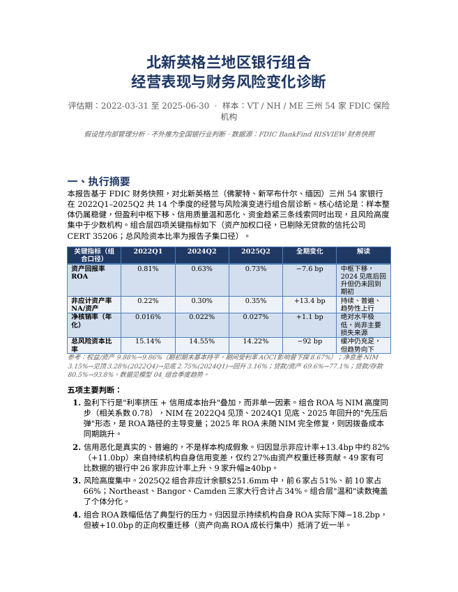
模型文档全部页面
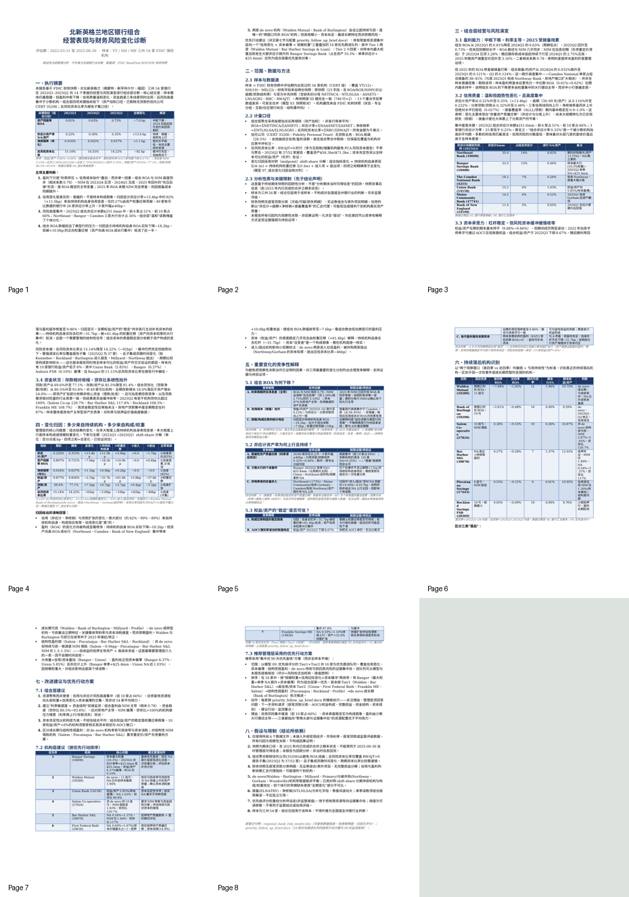
正文与表格预览
北新英格兰银行组合 优先跟进简报
评估期 2022-03-31 至 2025-06-30 · 面向未来90天管理安排 · 假设性内部用途
配套：regional_bank_risk_model.xlsx（评分与明细）· operating_performance_diagnosis.docx（诊断）
一、优先跟进范围与选择依据
本简报不设固定名单或数量，而是采用可核验的规则化范围：以模型 09_优先级评分 的透明评分，选取 Tier 1（加权分≥6）与 Tier 2（3≤分<6）机构，共 16 家，作为未来90天的优先跟进队列。其余 37 家为 Tier 3 常规监测，信托公司（CERT 35206，无贷款业务）不参与信用评分。选择完全可从模型逐格核验：每家评分 = 若干风险标志的加权和，标志阈值与权重公开列示。
纳入队列的风险标志（任一触发即计入，加权求和）：非应计≥0.75%资产(权重2)、非应计较期初+40bp(1.5)、近四季ROA<0(2.5)、近四季ROA<0.30%(1)、连续亏损≥4季(2)、权益/资产<8%(1.5)、总风险资本<12.5%[报告者](1)、贷款/存款>100%(0.5)、房地产>90%或工商业>40%集中(0.5)、全期资产增长>50%且非应计+20bp(1)、de novo且期内亏损≥6季(1.5)。
| 优先队列分层 | 家数 | 机构（按评分） | 选择逻辑 |
| Tier 1 优先跟进 | 2 | Walden Mutual(8.5)、Bar Harbor S&L(7.0) | 证据最集中：信用+盈利+资金多重叠加 |
| Tier 2 加强监测 | 14 | Union(5.5)、First Federal Bath(5.5)、Salem(5.0)、Piscataqua(5.0)、Franklin ME(4.5)、First Seacoast(4.5)、Primary(4.0)、Bangor(4.0)、Bank of Burlington(4.0)、Orwell(3.5)、Auburn FSB(3.5)、Profile(3.0)、Merrimack County(3.0)、Rockland(3.0) | 信用恶化 / 资本偏薄 / 结构性弱盈利 / de novo持续亏损 四类 |
评分、标志触发与分层见模型 09_优先级评分；每家完整季度序列见模型 10_重点机构明细。阈值为分析师设定的可调参数，非监管标准。
一个重要的范围补充（组合层最优先复核）：
Bangor Savings Bank（CERT 18408）虽评分4.0属Tier 2，但它是样本内最大权重机构（$7.34bn，占总资产10.3%），且2025Q2单季非应计跳升+$25.4mm至$33.5mm（占组合非应计13%），叠加权益/资产仅6.37%、总风险资本11.1%偏低。按"规模权重×信用边际变化×资本缓冲"排序，应列为组合层第一优先复核对象，排在纯评分序之前。
二、90天推进安排
将16家按证据强度与规模权重分三波推进，避免一次性铺开导致复核深度不足。每波遵循统一模板（关注理由→管理层问题→资料请求→建议行动→监测重点，见第三节逐家卡片）。
| 波次 | 时间窗 | 机构 | 工作重心 | 里程碑产出 |
| 第1波 立即 | 第0–30天 | Bangor、Walden、Union、Bar Harbor S&L、First Federal Bath | 最大权重/最薄资本/最高非应计：核实信用跳升性质与资本充足 | 5家复核纪要 + 资料请求清单发出 |
| 第2波 | 第31–60天 | Salem、Franklin ME、Piscataqua、First Seacoast、Primary | 结构性弱盈利与快速扩张伴信用漂移：盈利模式与承保标准 | 5家复核纪要 + NIM/承保专项结论 |
| 第3波 | 第61–90天 | Bank of Burlington、Merrimack、Orwell、Auburn FSB、Profile、Rockland | de novo成长期 + 小微抵押行：亏损收窄斜率与资本消耗 | 6家复核纪要 + 全队列90天复盘 |
波次依据=模型评分 + 规模权重 + 信用边际变化。第1波含样本最大权重行(Bangor)与全部Tier1(Walden, Bar Harbor S&L)及两家最高非应计/最薄资本行(Union, First Federal Bath)。
三、逐家跟进卡片
每张卡片均标注：期末规模、近四季ROA、非应计率（期初→期末）、权益/资产、总风险资本、净息差、贷款/存款、亏损季数与触发的风险标志。全部数据可回溯至模型 05/06/09/10 表。金额为千美元口径换算。
第1波（第0–30天，立即复核）
1. Bangor Savings Bank (CERT 18408)
ME · Commercial · $7,335,916千(样本最大, 权重10.3%) · 评分4.0 Tier2【组合层第一优先】
关注理由：组合最大权重行，2025Q2非应计单季+$25.4mm至$33.5mm(占组合NA 13%)、NA/资产0.07%→0.46%；ROA_t4仅0.14%(首四季0.69%)；权益/资产6.37%、总风险资本11.1%均偏薄；房地产集中90%。触发：低ROA、资本偏薄、总风险资本偏低、房地产集中。
需管理层回答的问题：2025Q2的+$25.4mm非应计跳升是逐笔资产质量恶化，还是单笔大额贷款/一次重分类？涉及哪些贷款类别与借款人集中度？
拨备覆盖率降至0.75%、拨备/均资产升至0.20%——当前ALLL是否足以覆盖已迁移的分类资产(分类贷款0.66%)？
权益/资产6.37%与总风险资本11.1%是否有资本补充计划？非应计若继续上行，资本缓冲可支撑到什么水平？
下一步资料请求：2025Q2非应计与分类贷款的逐笔明细、迁移台账及抵押品估值
ALLL充足性分析与CECL模型假设
未来4季资本规划与压力情景
房地产贷款(尤其CRE)集中度与承保标准
建议行动：列为组合层最高优先：先定性NA跳升性质(一次性 vs 趋势)，再据以决定监测频率
若为趋势性恶化，要求管理层提交资本与拨备补充方案
将Bangor纳入组合非应计的单独监测项(因其权重足以左右组合读数)
90天监测重点：季度非应计与分类贷款迁移、ALLL/贷款、权益/资产与总风险资本、房地产集中度；重点看2025Q3 NA是否延续Q2跳升还是回落
2. Walden Mutual Bank (CERT 59289)
NH · Commercial · de novo(2022-10) · $145,991千 · 评分8.5 Tier1【最高分】
关注理由：唯一评分≥8者。de novo自2022Q4起11个季度连续亏损(ROA_t4 −1.92%)，非应计已升至样本最高1.94%、分类贷款2.67%、逾期(P3)$3.5mm；工商业贷款集中49%(de novo商业放贷模式)。触发：非应计高、近四季ROA<0、连亏≥4季、高集中、de novo亏损。
需管理层回答的问题：亏损收窄轨迹(−12.5%→−0.24% ROA)是否可持续？何时预计盈亏平衡？
非应计快速升至1.94%反映何种资产质量问题？是否与工商业集中相关？
当前资本(EQ 10.75%)按现有烧钱速度可支撑多久？是否有增资安排？
下一步资料请求：逐季损益分解与盈亏平衡预测
非应计/分类贷款逐笔明细与工商业承保标准
资本充足性预测与融资计划
设立期业务规划 vs 实际达成
建议行动：区分"成长期亏损"与"资产质量恶化"：亏损收窄是积极信号，但NA升至样本最高需独立核实
确认资本消耗速率与外部增资可行性
评估工商业集中的承保质量(样本中CI占比最高者之一)
90天监测重点：季度净亏损收窄斜率、非应计与分类贷款、权益/资产消耗速度、工商业贷款表现
3. Union Bank (CERT 14158)
VT · Commercial · $1,479,452千 · 评分5.5 Tier2
关注理由：样本最薄资本：权益/资产仅5.85%(样本最低)、总风险资本12.6%；非应计0.36%→1.03%、逾期仍存(P3 $1.3mm)；贷款/存款99.8%接近满负荷；ROA_t4 0.67%(较首四季1.00%下滑)。触发：非应计高、非应计+40bp、资本偏薄、房地产集中93%。
需管理层回答的问题：权益/资产5.85%为样本最低——是否为主动高杠杆策略？资本规划如何？
非应计从0.36%升至1.03%的驱动？房地产集中93%下的抵押品敞口？
贷款/存款近100%，进一步放贷的资金来源？
下一步资料请求：资本结构与规划、AOCI敞口
非应计/房地产贷款逐笔与抵押品估值
资金结构(存款稳定性、借款依赖)
建议行动：资本充足性专项复核(样本最薄杠杆)
核实非应计上行是否集中于房地产
评估资金缓冲与贷存比压力
90天监测重点：权益/资产、总风险资本、非应计率、贷款/存款、房地产集中度
4. Bar Harbor Savings and Loan Association (CERT 30878)
ME · Mortgage · $98,909千 · 评分7.0 Tier1
关注理由：Tier1。抵押专业行，非应计0.54%→1.37%、分类贷款1.57%；NIM仅1.49%(样本最低档)、近四季ROA −0.28%(期内7个亏损季)；贷款/存款117%资金偏紧；规模小($98.9mm)。触发：非应计高、非应计+40bp、近四季ROA<0、贷存比>100%、房地产集中100%。
需管理层回答的问题：NIM仅1.49%的盈利模式是否可持续？低收益抵押资产 vs 资金成本错配程度？
非应计翻倍至1.37%的抵押资产质量？
贷款/存款117%，资金依赖批发的程度与稳定性？
下一步资料请求：损益分解(利息收支、资金成本)
抵押贷款逐笔质量与逾期台账
资金结构与批发融资明细
资产负债重定价期限结构
建议行动：结构性弱盈利(非de novo却持续亏损)：要求NIM修复/资产负债重构方案
核实抵押资产质量迁移
评估小规模+高贷存比的资金脆弱性
90天监测重点：NIM、非应计与分类贷款、贷款/存款、季度盈亏
5. First Federal Savings and Loan Association of Bath (CERT 29636)
ME · Mortgage · $185,573千 · 评分5.5 Tier2
关注理由：非应计升幅样本最大之一：0.69%→1.67%、分类贷款2.11%、逾期(P3)$4.2mm；抵押集中97.8%；但资本厚(权益14.9%、总风险资本27.2%)、ROA_t4 0.27%偏低。触发：非应计高、非应计+40bp、低ROA、贷存比104%、房地产集中。
需管理层回答的问题：非应计从0.69%升至1.67%(升幅+0.99pp为样本最大)的驱动？是否集中于某类抵押产品？
分类贷款2.11%较高——拨备覆盖率1.33%是否充足？
资本充足(27.2%)为缓冲，但盈利偏弱(ROA 0.27%)的可持续性？
下一步资料请求：非应计/分类贷款逐笔与抵押品估值
ALLL充足性分析
损益分解与盈利改善路径
建议行动：核实抵押资产质量迁移(升幅样本最大)
资本厚为处置争取时间，聚焦盈利修复
确认拨备是否跟上分类资产节奏
90天监测重点：非应计与分类贷款、ALLL/贷款、ROA、抵押集中度
第2波（第31–60天）
6. Salem Co-operative Bank (CERT 27824)
NH · Commercial · $571,650千 · 评分5.0 Tier2
关注理由：非de novo却10个季度连续亏损(ROA_t4 −0.53%)；NIM从2.87%塌陷至1.92%(降0.96pp,样本最大)；贷款/存款120.7%(样本最高)；非应计温和0.36%。触发：近四季ROA<0、连亏≥4季、贷存比>100%。
需管理层回答的问题：连续10季亏损的根源？NIM塌陷0.96pp是负债成本还是资产收益问题？
贷款/存款120.7%为样本最高——资金高度依赖批发，稳定性与成本？
持续亏损对资本(现10.87%)的侵蚀速度？盈亏平衡路径？
下一步资料请求：完整损益分解(利息收支、非息、费用)
资金结构与批发融资成本/期限
资产负债重定价与NIM修复方案
资本规划
建议行动：结构性弱盈利典型：NIM塌陷+高贷存比+持续亏损，不会自愈
要求管理层提交盈利修复与资金结构方案
评估亏损对资本的累积侵蚀
90天监测重点：季度盈亏与NIM、贷款/存款、权益/资产、非应计
7. Franklin Savings Bank (ME) (CERT 19836)
ME · Commercial · $755,186千 · 评分4.5 Tier2
关注理由：快速扩张伴信用漂移：资产全期+32.8%、非应计0.30%→1.10%、逾期(P3)$5.1mm；资本很厚(权益17.3%、总风险资本23.1%)、ROA_t4 0.74%尚可；贷款/存款109%。触发：非应计高、非应计+40bp、贷存比>100%、房地产集中91%。
需管理层回答的问题：资产快速扩张(+32.8%)期间承保标准是否松动？非应计升至1.10%是否为扩张后遗症？
注意：缅因州另有一家同名Franklin Savings Bank(CERT 17951, NH)，勿混淆——本卡片为ME的CERT 19836。
资本厚为缓冲，但信用漂移是否需前瞻拨备？
下一步资料请求：新增贷款的承保标准与vintage表现
非应计/逾期逐笔与迁移
拨备充足性(前瞻)
建议行动：核实快速扩张的信用质量(vintage分析)
资本厚提供缓冲，聚焦承保标准是否随扩张放松
区分ME(19836)与NH(17951)两家同名行避免误判
90天监测重点：资产增速、非应计与逾期、新增贷款表现、贷款/存款
8. Piscataqua Savings Bank (CERT 17443)
NH · Mortgage · $366,584千 · 评分5.0 Tier2
关注理由：信用清洁(非应计仅0.01%)但结构性弱盈利：6个季度连亏(ROA_t4 −0.31%)，NIM仅1.30%(样本最低)，抵押集中99%；贷款/存款71%(资金不紧)。触发：近四季ROA<0、连亏≥4季、房地产集中。
需管理层回答的问题：信用无虞但持续亏损——纯粹是NIM 1.30%的利差问题？低收益抵押资产结构？
贷款/存款仅71%，大量资金投向低收益资产？配置效率？
盈亏平衡需要NIM回升到什么水平？
下一步资料请求：损益分解与资产收益结构
证券/资金配置(为何贷存比低仍亏损)
资产负债重构可行性
建议行动：纯利差型弱盈利(非信用问题)：聚焦资产端收益提升与配置效率
信用清洁可降低复核频率，但盈利可持续性需评估
90天监测重点：NIM、季度盈亏、资产配置、贷款/存款
9. First Seacoast Bank (CERT 29744)
NH · Mortgage · $605,109千 · 评分4.5 Tier2
关注理由：期内8个亏损季、近四季ROA −0.17%、连续3季亏损；权益/资产7.36%偏薄；但2023Q4曾现单季巨亏(NETINCA −$10.7mm, ROA −1.93%, 疑一次性)；非应计0.00%(清洁)；NIM 2.33%偏低。触发：近四季ROA<0、资本偏薄、房地产集中91%。
需管理层回答的问题：2023Q4单季−$10.7mm巨亏是否为一次性事件(证券出售/减值/诉讼)？须与经营性亏损区分。
剔除一次性后，核心盈利能力如何？连续3季亏损是否延续？
权益/资产7.36%偏薄，一次性损失是否已侵蚀资本？
下一步资料请求：2023Q4损益明细与一次性项目说明
核心(剔除一次性)损益趋势
资本构成与规划
建议行动：优先厘清2023Q4巨亏性质(一次性 vs 经营)——直接影响是否列持续落后
若为一次性，聚焦核心盈利修复与资本
非应计清洁，信用非主要矛盾
90天监测重点：季度盈亏(区分一次性)、NIM、权益/资产、核心盈利趋势
10. Primary Bank (CERT 59086)
NH · Commercial · de novo(2015) · $724,753千 · 评分4.0 Tier2
关注理由：盈利强劲(ROA_t4 1.47%)但信用需关注：非应计0.30%→0.83%、分类贷款2.23%、90+逾期(P9)$7.8mm(样本较高)；工商业集中20%；资本充足(权益14.6%、总风险资本16.8%)。触发：非应计高、非应计+40bp、贷存比100%。
需管理层回答的问题：盈利良好但分类贷款2.23%、P9逾期$7.8mm偏高——资产质量是否在恶化？
工商业集中20%的承保质量？逾期是否集中于此？
拨备覆盖率0.97%对分类资产是否充足？
下一步资料请求：分类贷款与90+逾期逐笔明细
工商业贷款承保与表现
ALLL充足性
建议行动：盈利强提供缓冲，重点核实分类贷款与P9逾期的迁移
评估工商业集中的信用质量
90天监测重点：非应计、分类贷款、90+逾期、ALLL、工商业表现
第3波（第61–90天）
11. Bank of Burlington (The Business Bank) (CERT 59298)
VT · Commercial · de novo(2022-08) · $269,483千 · 评分4.0 Tier2
关注理由：de novo，10个季度亏损但2025Q1-Q2已转正(ROA 0.02%/0.06%)；非应计0.00%(清洁)；工商业集中24%；贷款/存款61%(资金充裕)；资本9.59%、总风险资本16.9%。触发：近四季ROA<0、de novo亏损≥6季。
需管理层回答的问题：2025年转正是可持续的盈亏平衡，还是波动？
de novo成长期的资本消耗与增资安排？
工商业集中24%的承保质量(目前信用清洁)？
下一步资料请求：设立期规划 vs 实际、盈亏平衡分析
资本规划与融资
工商业贷款承保标准
建议行动：成长期机构：关键看转正可持续性与资本消耗，非即期风险
信用清洁可降低复核强度
若转正稳固，考虑移出优先队列
90天监测重点：季度盈亏(转正是否延续)、非应计、资本消耗、工商业表现
12. Merrimack County Savings Bank (CERT 17960)
NH · Commercial · $1,351,508千 · 评分3.0 Tier2
关注理由：非应计0.04%→0.57%(升幅大)、逾期(P3)$5.2mm；ROA_t4 0.25%偏低(首四季0.80%)；权益/资产8.83%、总风险资本13.8%；拨备/均资产升至0.16%；贷款/存款103%。触发：非应计+40bp、低ROA、贷存比>100%。
需管理层回答的问题：非应计从极低0.04%升至0.57%的驱动？是否新增大额问题贷款？
ROA从0.80%降至0.25%——利差还是拨备(升至0.16%)拖累？
拨备上升是否为前瞻计提？
下一步资料请求：非应计/逾期逐笔与迁移
损益分解(拨备 vs 利差)
ALLL充足性
建议行动：核实非应计上行性质(基数低,升幅显著)
评估盈利下滑是拨备还是利差驱动
90天监测重点：非应计与逾期、ROA、拨备/均资产、贷款/存款
13. The First National Bank of Orwell (CERT 6280)
VT · Mortgage · $87,770千 · 评分3.5 Tier2
关注理由：小规模抵押行；非应计持续偏高1.00%→1.66%、分类贷款1.99%；但盈利良好(ROA_t4 1.34%)、NIM高(4.54%)、资本充足(权益11.34%)。触发：非应计高、非应计+40bp。
需管理层回答的问题：非应计升至1.66%但盈利仍强——问题贷款是否已充分拨备(ALLL 1.30%)？
小规模+高非应计+抵押集中89%的处置能力？
高盈利能否吸收潜在信用损失？
下一步资料请求：非应计/分类贷款逐笔与抵押品
ALLL充足性(拨备覆盖率1.30%)
建议行动：信用偏弱但盈利与资本提供缓冲
核实非应计是否已充分计提、处置进度
小规模行关注单一大额敞口的集中度
90天监测重点：非应计与分类贷款、ALLL/贷款、盈利、抵押集中度
14. Auburn Savings Bank, FSB (CERT 28288)
ME · Mortgage · $102,731千 · 评分3.5 Tier2
关注理由：资本偏薄：权益/资产6.10%(样本次低)、总风险资本13.2%；ROA_t4 0.15%偏低；非应计已改善0.66%→0.10%；贷款/存款107%；规模小($102.7mm)。触发：低ROA、资本偏薄、贷存比>100%、房地产集中91%。
需管理层回答的问题：权益/资产6.10%偏薄——资本规划？小行资本补充渠道？
非应计已改善至0.10%(积极)，但盈利仍弱(ROA 0.15%)的根源？
贷款/存款107%的资金稳定性？
下一步资料请求：资本结构与规划
损益分解与盈利改善路径
资金结构
建议行动：非应计改善是积极信号，聚焦资本偏薄与弱盈利
评估小规模行的资本补充可行性
90天监测重点：权益/资产、总风险资本、ROA、非应计、贷款/存款
15. Profile Bank (CERT 28155)
NH · Commercial · $317,001千 · 评分3.0 Tier2
关注理由：6个亏损季、近四季ROA −0.04%、连续3季亏损；非应计清洁(0.00%)；NIM 2.66%偏低；贷款/存款63%(资金充裕)；权益/资产8.67%、总风险资本17.2%；拨备覆盖率仅0.42%(偏低)。触发：近四季ROA<0、房地产集中92%。
需管理层回答的问题：连续亏损但信用清洁、资金充裕——盈利问题根源(NIM 2.66% + 费用)？
拨备覆盖率仅0.42%偏低——是否反映贷款损失风险低，还是计提不足？
房地产集中92%的收益结构？
下一步资料请求：损益分解(NIM、非息、费用效率)
ALLL充足性(覆盖率0.42%的合理性)
资产配置
建议行动：盈利修复为核心(信用非矛盾)
核实低拨备覆盖率的合理性
资金充裕下应评估资产配置效率
90天监测重点：季度盈亏、NIM、费用效率、ALLL/贷款、非应计
16. Rockland Savings Bank, FSB (CERT 28369)
ME · Mortgage · $93,177千 · 评分3.0 Tier2
关注理由：样本最小行之一($93.2mm)；10个季度亏损但幅度小(ROA_t4 −0.09%)；非应计已改善0.52%→0.09%；NIM尚可3.43%；贷款/存款108%；权益/资产9.76%、总风险资本14.1%。触发：近四季ROA<0、贷存比>100%。
需管理层回答的问题：长期微亏(10季)的根源——规模不经济？NIM 3.43%尚可但费用拖累？
非应计已改善至0.09%(积极)，信用非主要矛盾。
最小规模($93mm)+高贷存比108%的经营可持续性与资金脆弱性？
下一步资料请求：损益分解与费用效率
资金结构与批发依赖
规模经济评估
建议行动：微亏+小规模：评估经营可持续性与费用效率
信用已改善，聚焦盈利与资金
考虑是否存在最优规模/合并的战略问题
90天监测重点：季度盈亏、费用效率、非应计、贷款/存款、规模
四、跨机构监测触发器（90天内）
除逐家复核外，建议对全队列设置统一的量化触发器，一旦命中即上调复核频率或升级至管理层：
信用：单季非应计率上升≥30bp，或分类贷款/贷款上升≥50bp，或90+逾期(P9)出现/放大。
资本：权益/资产跌破8%（或已<8%者继续下降），或总风险资本跌破12%。
盈利：近四季ROA跌破0，或单季ROA<−0.5%（区分一次性，如First Seacoast 2023Q4）。
资金：贷款/存款升破110%，或存款单季下降≥5%。
增长：单季资产增长≥15%（并购或快速扩张，需同步核承保与资本）。
对第1波五家，建议即使未触发也保持季度复核；对第2/3波，触发即复核。
五、假设与限制
1. 优先队列由规则化评分（模型09表）产生，阈值与权重经分析师设定，为可调管理排序工具，非监管标准或信用评级；调整阈值会改变入选名单。
2. 所有结论基于所给FDIC财务快照的期末口径回顾分析，含2025年内已完成的合并之后状态，非"当时可得信息"回测。
3. 快照无逐笔贷款分类明细、无证券/表外项目、无完整损益分解；卡片中"资料请求"正是为补齐这些快照缺口而列，需管理层从机构处获取后方能定性。
4. 对若干机构的关键判断依赖尚待验证的假设：如First Seacoast 2023Q4巨亏是否一次性、Bangor 2025Q2非应计跳升是否一次性重分类、Franklin ME扩张期承保是否松动——本简报将其列为"需管理层回答的问题"，不作因果定论。
5. 同名机构风险：缅因Franklin Savings Bank(19836)与新罕布什尔Franklin Savings Bank(17951)为不同机构，跟进时须以CERT区分。
6. 总风险资本比率仅覆盖RWAJT>0的报告子集；标注"n/exempt"者为豁免报告机构（多为互助/储蓄制），其资本充足性以权益/资产替代佐证。
7. 样本为三州54家，结论不外推为全国或全州银行业判断。90天安排为管理建议，实际执行受资料可得性与机构配合度影响。
核验路径：每家机构的评分与标志见 regional_bank_risk_model.xlsx 的 09_优先级评分；季度序列见 10_重点机构明细；组合背景与竞争性解释见 operating_performance_diagnosis.docx。本简报的每一处数字均可回溯至上述工作簿。
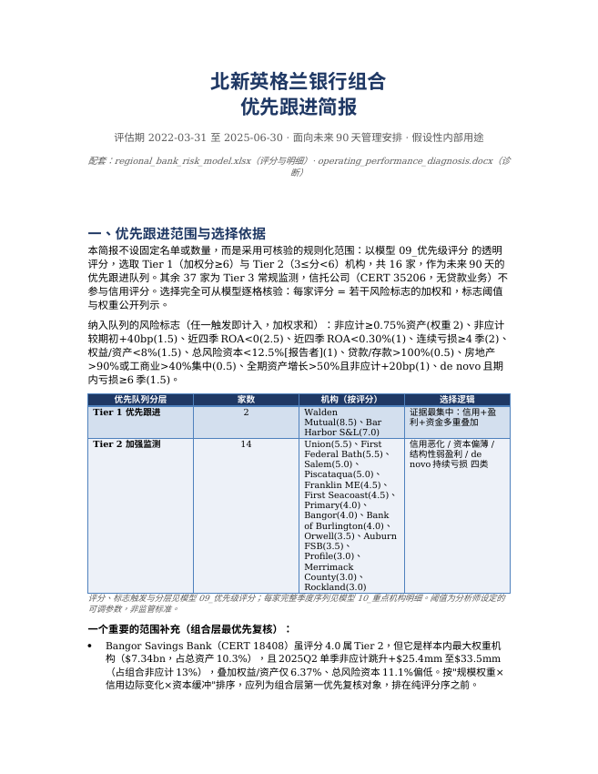
模型文档全部页面
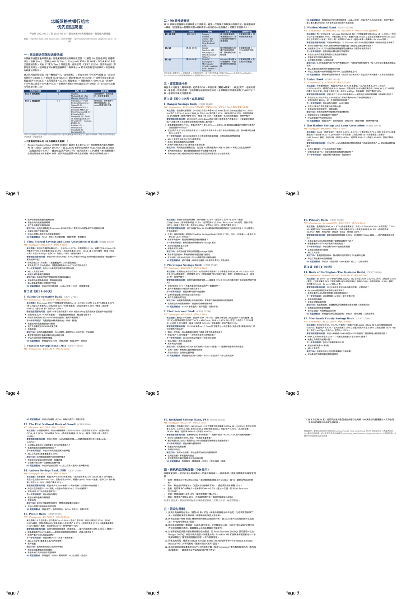
00_README说明 · 34 行 × 3 列
| 北新英格兰地区银行组合 — 风险变化诊断模型 | ||
| hypothetical / 内部管理用途 · 评估期 2022-03-31 至 2025-06-30 · 数据源: FDIC BankFind RISVIEW 快照 | ||
| 用途 | 本工作簿为配套报告 operating_performance_diagnosis.docx 与 priority_follow_up_brief.docx 的可复核数据底座。所有比率、趋势、归因与优先级评分均可在此追溯至原始快照字段。 | |
| 范围声明 | 样本 = FDIC 财务快照中 VT/NH/ME 三州、评估期内出现过的 54 家机构（CERT 级）。结论仅适用于该样本，不构成对全国或全州银行业的判断。 | |
| 分析类型 | 基于所给快照的回顾性分析，非"分析期末当时可得信息"的回测。快照含事后信息（如 2025 年内合并的期末状态）。 | |
| 单位 | 所有金额字段为 FDIC RISVIEW 原始单位 = 千美元 ($thousands)。比率为百分数。ROA/净核销/拨备等年化字段(NETINCA, NTLNLSA, ELNATRY, ASSET5, LNLSGR5)来自补充快照。 | |
| 组合口径 | 组合层聚合 = 金额加总后再相除（资产加权），非各行简单平均。ROA=ΣNETINCA/ΣASSET5；非应计率=ΣNAASSET/ΣASSET；净核销率=ΣNTLNLSA/ΣLNLSGR5；总风险资本比率=ΣRBC/ΣRWAJT。 | |
| 信托公司处理 | CERT 35206 (Fidelity Personal Trust Company, FSB) 为无贷款信托公司，ROA 极端(28.5%)会扭曲组合。组合信用/盈利聚合中已剔除，仅保留在覆盖与机构对应表中并标注 NONBANK_BIZ。 | |
| 资本比率覆盖 | RWAJT=0 的行(多为互助制/储蓄机构豁免 PCA 风险资本报告)在总风险资本比率聚合中排除；2025Q2 有 37/51 家银行报告，覆盖资产 $56.3bn/$71.3bn。资本充足性另以 EQ/ASSET(杠杆)全样本佐证。 | |
| 结构事件 | 评估期内 Northway Bank(14240)并入 Camden National(4255, CHANGEC1=810/223, 2025-01)、Gorham Savings(17748)并入 Maine Community Bank(17741, 2025-01)、Woodsville Guaranty(18031)并入 Bar Harbor B&T(11971, 2025-07)。被并方财务序列止于 2024Q4。 | |
| de novo 机构 | Walden Mutual(59289, 2022-10)、Bank of Burlington/Business Bank(59298, 2022-08)、Millyard(59176, 2019-11)、Primary(59086, 2015-07) 为新设，早期季度缺失或亏损属成长期特征，已在归因中作进入项处理。 | |
| 工作表索引 | ||
| 01_样本覆盖 | 每机构×每季度的存在性矩阵、报告期数、首末季、在营状态、结构事件；核对样本 54 家 CERT。 | |
| 02_机构对应 | CERT↔名称(财务快照 vs 机构快照)、州、机构类别、专业分组、互助/社区银行标志、成立与保险日期、并购码。 | |
| 03_快照核对 | 原快照与官方补充快照的键与重合字段一致性核对，标注补充快照提供的缺失分母/指标。 | |
| 04_组合季度趋势 | 组合层 14 季度聚合指标（含执行摘要四指标 ROA/非应计率/净核销率/总风险资本比率）及资金、结构、拨备。 | |
| 05_银行季度明细 | 全部 746 行 银行×季度面板，含原始字段与派生比率 — 支持逐格复核。 | |
| 06_银行汇总期末 | 每机构一行的期末水平、期初→期末变化、近四季与首四季对比、连亏季数。 | |
| 07_组合变化归因 | Shift-share 分解：组合指标变化拆为持续机构自身表现/权重迁移/进入/退出四部分（全期与近12月，含资本比率）。 |
01_样本覆盖 · 59 行 × 22 列
| 样本覆盖矩阵 (1=该机构该季度有财务快照记录) | |||||||||||||||
| CERT | 名称 | 州 | 状态 | 专业分组 | 2022Q1 | 2022Q2 | 2022Q3 | 2022Q4 | 2023Q1 | 2023Q2 | 2023Q3 | 2023Q4 | 2024Q1 | 2024Q2 | 2024Q3 |
| 17751 | Androscoggin Savings Bank | ME | 在营 | Commercial Lending Specialization | 1 | 1 | 1 | 1 | 1 | 1 | 1 | 1 | 1 | 1 | 1 |
| 29743 | Aroostook County Federal Savings And Loan Association | ME | 在营 | Consumer Lending Specialization | 1 | 1 | 1 | 1 | 1 | 1 | 1 | 1 | 1 | 1 | 1 |
| 28288 | Auburn Savings Bank, Fsb | ME | 在营 | Mortgage Lending Specialization | 1 | 1 | 1 | 1 | 1 | 1 | 1 | 1 | 1 | 1 | 1 |
| 18408 | Bangor Savings Bank | ME | 在营 | Commercial Lending Specialization | 1 | 1 | 1 | 1 | 1 | 1 | 1 | 1 | 1 | 1 | 1 |
| 11971 | Bar Harbor Bank & Trust | ME | 在营 | Commercial Lending Specialization | 1 | 1 | 1 | 1 | 1 | 1 | 1 | 1 | 1 | 1 | 1 |
| 30878 | Bar Harbor Savings And Loan Association | ME | 在营 | Mortgage Lending Specialization | 1 | 1 | 1 | 1 | 1 | 1 | 1 | 1 | 1 | 1 | 1 |
| 17749 | Bath Savings Institution | ME | 在营 | Commercial Lending Specialization | 1 | 1 | 1 | 1 | 1 | 1 | 1 | 1 | 1 | 1 | 1 |
| 29636 | First Federal Savings And Loan Association Of Bath | ME | 在营 | Mortgage Lending Specialization | 1 | 1 | 1 | 1 | 1 | 1 | 1 | 1 | 1 | 1 | 1 |
| 4256 | First National Bank | ME | 在营 | Commercial Lending Specialization | 1 | 1 | 1 | 1 | 1 | 1 | 1 | 1 | 1 | 1 | 1 |
| 19836 | Franklin Savings Bank | ME | 在营 | Commercial Lending Specialization | 1 | 1 | 1 | 1 | 1 | 1 | 1 | 1 | 1 | 1 | 1 |
| 17748 | Gorham Savings Bank | ME | 已关闭/合并 | Commercial Lending Specialization | 1 | 1 | 1 | 1 | 1 | 1 | 1 | 1 | 1 | 1 | 1 |
| 12874 | Katahdin Trust Company | ME | 在营 | Commercial Lending Specialization | 1 | 1 | 1 | 1 | 1 | 1 | 1 | 1 | 1 | 1 | 1 |
| 17897 | Kennebec Savings Bank | ME | 在营 | Commercial Lending Specialization | 1 | 1 | 1 | 1 | 1 | 1 | 1 | 1 | 1 | 1 | 1 |
| 13063 | Kennebunk Savings Bank | ME | 在营 | Commercial Lending Specialization | 1 | 1 | 1 | 1 | 1 | 1 | 1 | 1 | 1 | 1 | 1 |
| 19531 | Machias Savings Bank | ME | 在营 | Commercial Lending Specialization | 1 | 1 | 1 | 1 | 1 | 1 | 1 | 1 | 1 | 1 | 1 |
| 17741 | Maine Community Bank | ME | 在营 | Commercial Lending Specialization | 1 | 1 | 1 | 1 | 1 | 1 | 1 | 1 | 1 | 1 | 1 |
| 19690 | Northeast Bank | ME | 在营 | Commercial Lending Specialization | 1 | 1 | 1 | 1 | 1 | 1 | 1 | 1 | 1 | 1 | 1 |
| 17658 | Norway Savings Bank | ME | 在营 | Commercial Lending Specialization | 1 | 1 | 1 | 1 | 1 | 1 | 1 | 1 | 1 | 1 | 1 |
| 17115 | Partners Bank Of New England | ME | 在营 | Commercial Lending Specialization | 1 | 1 | 1 | 1 | 1 | 1 | 1 | 1 | 1 | 1 | 1 |
02_机构对应 · 59 行 × 20 列
| 机构对应关系与结构事件 | |||||||||||||||
| CERT | 名称(财务快照) | 名称(机构快照) | 州 | 状态 | ACTIVE | 机构类别 | 专业分组 | 互助制(1=是) | 社区银行(1=是) | 成立日期 | FDIC保险日 | 并购/结构码CHANGEC1 | 新CERT(并购后) | 结构事件解读 | de_novo(2015后新设) |
| 11971 | Bar Harbor Bank & Trust | Bar Harbor Bank & Trust | ME | 在营 | 1 | NM | Commercial Lending Specialization | 0 | 1 | 09/15/1887 | 01/01/1934 | 810 | 合并/名称或结构变更(存续) | False | |
| 12874 | Katahdin Trust Company | Katahdin Trust Company | ME | 在营 | 1 | NM | Commercial Lending Specialization | 0 | 1 | 03/07/1918 | 01/01/1934 | 无结构事件记录 | False | ||
| 13063 | Kennebunk Savings Bank | Kennebunk Savings Bank | ME | 在营 | 1 | SI | Commercial Lending Specialization | 0 | 1 | 05/01/1871 | 01/01/1934 | 无结构事件记录 | False | ||
| 14134 | Passumpsic Savings Bank | Passumpsic Savings Bank | VT | 在营 | 1 | SI | Mortgage Lending Specialization | 0 | 1 | 02/24/1853 | 03/31/1934 | 无结构事件记录 | False | ||
| 14136 | Wells River Savings Bank | Wells River Savings Bank | VT | 在营 | 1 | SI | Mortgage Lending Specialization | 1 | 1 | 01/01/1892 | 03/31/1934 | 无结构事件记录 | False | ||
| 14140 | Northfield Savings Bank | Northfield Savings Bank | VT | 在营 | 1 | SI | Commercial Lending Specialization | 0 | 1 | 11/21/1867 | 03/31/1934 | 无结构事件记录 | False | ||
| 14158 | Union Bank | Union Bank | VT | 在营 | 1 | NM | Commercial Lending Specialization | 0 | 1 | 01/01/1891 | 03/31/1934 | 无结构事件记录 | False | ||
| 14168 | Peoples Trust Company Of St. Albans | Peoples Trust Company of St. Albans | VT | 在营 | 1 | NM | Commercial Lending Specialization | 0 | 1 | 11/12/1866 | 04/02/1934 | 无结构事件记录 | False | ||
| 14240 | Northway Bank | Northway Bank | NH | 已关闭/合并 | 0 | NM | Commercial Lending Specialization | 0 | 1 | 01/01/1934 | 04/16/1934 | 223 | 4255 | 被吸收合并(机构终止) | False |
| 17115 | Partners Bank Of New England | Partners Bank of New England | ME | 在营 | 1 | SI | Commercial Lending Specialization | 0 | 1 | 11/01/1933 | 05/27/1952 | 无结构事件记录 | False | ||
| 17180 | Meredith Village Savings Bank | Meredith Village Savings Bank | NH | 在营 | 1 | SI | Mortgage Lending Specialization | 0 | 1 | 01/01/1869 | 01/28/1953 | 无结构事件记录 | False | ||
| 17443 | Piscataqua Savings Bank | Piscataqua Savings Bank | NH | 在营 | 1 | SI | Mortgage Lending Specialization | 1 | 1 | 01/01/1877 | 07/01/1955 | 无结构事件记录 | False | ||
| 17658 | Norway Savings Bank | Norway Savings Bank | ME | 在营 | 1 | SI | Commercial Lending Specialization | 0 | 1 | 01/01/1866 | 07/27/1956 | 无结构事件记录 | False | ||
| 17741 | Maine Community Bank | Maine Community Bank | ME | 在营 | 1 | SI | Commercial Lending Specialization | 0 | 1 | 07/27/1867 | 04/04/1957 | 无结构事件记录 | False | ||
| 17743 | Saco & Biddeford Savings Institution | Saco & Biddeford Savings Institution | ME | 在营 | 1 | SI | Commercial Lending Specialization | 1 | 1 | 02/21/1827 | 04/04/1957 | 无结构事件记录 | False | ||
| 17748 | Gorham Savings Bank | Gorham Savings Bank | ME | 已关闭/合并 | 0 | SI | Commercial Lending Specialization | 0 | 1 | 01/01/1868 | 04/18/1957 | 223 | 17741 | 被吸收合并(机构终止) | False |
| 17749 | Bath Savings Institution | Bath Savings Institution | ME | 在营 | 1 | SI | Commercial Lending Specialization | 1 | 1 | 04/19/1852 | 04/18/1957 | 无结构事件记录 | False | ||
| 17751 | Androscoggin Savings Bank | Androscoggin Savings Bank | ME | 在营 | 1 | SI | Commercial Lending Specialization | 0 | 1 | 01/01/1870 | 04/25/1957 | 520 | 控股/结构变更 | False | |
| 17897 | Kennebec Savings Bank | Kennebec Savings Bank | ME | 在营 | 1 | SI | Commercial Lending Specialization | 0 | 1 | 03/19/1870 | 08/14/1958 | 无结构事件记录 | False |
03_快照核对 · 11 行 × 2 列
| 两份财务快照一致性核对 (使用前必检) | |
| 核对项 | 结果 |
| ID键完全一致 (746行×2快照) | PASS |
| 重合字段一致性 (13个字段×746行, 数值差异单元数) | 0 (PASS) |
| 补充快照独有字段 | ASSET5, LNLSGR5, NETINCA, NTLNLSA, NTLNLSR, RBC, RWAJT |
| 原快照独有字段 | ELNATRY, EQ, EQV, LNATRESR, LNCI, LNCON, LNRE, NIMY, P3ASSET, P9ASSET, ROE |
| 结论: 两快照 ID 键完全一致(746行), 13 个重合字段零数值差异 → 可安全合并。 | |
| 补充快照新增原快照缺失的分子/分母: ASSET5(5季均资产), LNLSGR5(5季均贷款), NETINCA(年化净利), NTLNLSA(年化净核销), NTLNLSR(净核销率), RBC(总风险资本), RWAJT(调整后风险加权资产)。 | |
| 正是这些字段使组合层 ROA / 净核销率 / 总风险资本比率可按金额加总口径计算(原快照仅有比率 ROA/ROE, 无分母, 无法聚合)。 | |
| 原快照独有: ELNATRY(拨备/均资产), EQ/EQV(权益), LNATRESR(拨备覆盖率), LNCI/LNCON/LNRE(贷款结构), NIMY(净息差), P3ASSET/P9ASSET(逾期), ROE — 用于资金、结构、增长维度。 |
04_组合季度趋势 · 21 行 × 21 列
| 组合层季度聚合趋势 (资产加权, 已剔除信托公司 35206) | |||||||||||||||
| 季度 | 快照机构数 | 聚合口径机构数(除信托) | 总资产($千) | 资产回报率ROA(%) | 净息差NIM(%) | 非应计/资产(%) | 30-89天逾期/资产(%) | 90+天逾期/资产(%) | 净核销率(年化,%) | 拨备/均资产(%) | 权益/资产(%) | 总风险资本比率(%) | 资本比率报告家数 | 资本比率覆盖资产(%) | 存款/资产(%) |
| 2022Q1 | 51 | 51 | 59852474 | 0.8071653985975906 | 3.153118634603556 | 0.2197937548914018 | 0.1161405625438307 | 0.008836727450898687 | 0.01624865860653978 | 0.0139137148942927 | 9.877371150940228 | 15.1386253303564 | 35 | 75.46654128282148 | 85.53664465064553 |
| 2022Q2 | 52 | 51 | 60747875 | 0.7484927611067775 | 3.210383849522179 | 0.1849175694892635 | 0.07952322253098759 | 0.007110439611703754 | 0.01029108558821963 | 0.009972728613625517 | 9.290586084452777 | 14.70813738713825 | 35 | 75.4869580036509 | 84.78570585111567 |
| 2022Q3 | 53 | 52 | 62354271 | 0.8058249894803665 | 3.264633538389651 | 0.1679035602942321 | 0.0962193959546052 | 0.007467802765825646 | 0.006898070363139522 | 0.01306271932090165 | 8.66591957603428 | 14.36651527250216 | 36 | 76.77055190449599 | 84.69599356715892 |
| 2022Q4 | 54 | 53 | 64502953 | 0.8767342388803048 | 3.283558234311204 | 0.1836386930092199 | 0.1533506383544665 | 0.007289183415144601 | 0.007411424216334532 | 0.01794154665644198 | 8.782677659878818 | 13.94184675118532 | 36 | 77.04004527146233 | 83.5810809919528 |
| 2023Q1 | 54 | 53 | 65286835 | 0.7499781926584341 | 3.081161062834505 | 0.1907092470165505 | 0.1360314227680141 | 0.003173862095691942 | 0.06124720138043818 | 0.05321426324311072 | 9.051489779435752 | 14.10364179594604 | 36 | 76.911232673607 | 82.10232332071838 |
| 2023Q2 | 54 | 53 | 66103367 | 0.7135024127730619 | 2.993940902280005 | 0.2030842750372651 | 0.09398690092493722 | 0.007044890886724908 | 0.04291550878585801 | 0.05021577016190353 | 8.960945226881984 | 14.13754877417307 | 37 | 79.53267779906827 | 80.02784034266155 |
| 2023Q3 | 54 | 53 | 66427421 | 0.6850674471618798 | 2.968458070739981 | 0.207351863075855 | 0.1240810789036305 | 0.009483721740943061 | 0.03531424910681347 | 0.03136690310127801 | 8.692895690242992 | 14.38491896313213 | 38 | 81.59379452040714 | 80.93456659994455 |
| 2023Q4 | 54 | 53 | 67228962 | 0.6940081070331635 | 2.943229933675751 | 0.2304107113408568 | 0.1968028512713102 | 0.005874823111235434 | 0.02985320624837524 | 0.02526840068252537 | 9.29273265170692 | 14.52762343183842 | 38 | 81.39341958457243 | 79.82934212196943 |
| 2024Q1 | 54 | 53 | 67408258 | 0.6465765068140416 | 2.745062850854084 | 0.2923669220764311 | 0.1503258431321934 | 0.004329524490478833 | 0.02652233491630307 | 0.01129341171502234 | 9.327076044124613 | 14.57500603394852 | 39 | 81.61519037802913 | 79.34996237101099 |
| 2024Q2 | 54 | 53 | 68174434 | 0.6338006329860972 | 2.75600108599926 | 0.2958451614267644 | 0.1610970537381328 | 0.003091496094654708 | 0.0218325433746646 | 0.02309135317579935 | 9.377510739093738 | 14.54934261202209 | 38 | 81.05551901079174 | 79.00360860572646 |
| 2024Q3 | 54 | 53 | 69727725 | 0.676629833043047 | 2.785400823283838 | 0.2778771219514612 | 0.1134579471864593 | 0.01351575388777171 | 0.03277936628691913 | 0.02150513235289163 | 9.652267310077056 | 14.47840104760993 | 38 | 81.19280261693255 | 80.4960405173926 |
| 2024Q4 | 54 | 53 | 70110166 | 0.6920835985960592 | 2.836770510918125 | 0.2763837181012277 | 0.2254934692393878 | 0.005536297166275276 | 0.03676421227473153 | 0.03209169426315004 | 9.472019128691898 | 14.43549897329865 | 39 | 81.61939633003743 | 81.85103283349716 |
| 2025Q1 | 52 | 51 | 70509303 | 0.6226785925132824 | 3.10207684107462 | 0.2899158726807337 | 0.2562244010720909 | 0.003760532098398631 | 0.03259850615322797 | 0.1214911391996155 | 9.697380229359522 | 14.15554824457061 | 37 | 79.24355782451245 | 82.29882051173361 |
| 2025Q2 | 52 | 51 | 71266944 | 0.7311687629160016 | 3.154512569875195 | 0.3533300540464313 | 0.222451672422274 | 0.01523857093134089 | 0.02673329281536874 | 0.1239477127670519 | 9.856482973225118 | 14.21451681404207 | 37 | 79.03112382248364 | 81.43530651453472 |
| ★ 执行摘要四指标(2025Q2 组合口径): ROA = 0.731% · 非应计/资产 = 0.353% · 净核销率(年化) = 0.027% · 总风险资本比率 = 14.22%(报告子集37家)。 | |||||||||||||||
| 对比 2022Q1: ROA 0.807%→0.731%(-7.6bp) · 非应计率 0.220%→0.353%(+13.4bp) · 净核销率 0.016%→0.027%(+1.1bp) · 总风险资本比率 15.14%→14.22%(-92bp)。 | |||||||||||||||
| 注: 拨备/均资产 2025Q1-Q2 跳升至 0.12%, 主要来自 Camden National(4255) 单家(占组合拨备 38-45%), 与其吸收 Northway 及房地产敞口相关; 非全样本普遍现象。 | |||||||||||||||
| 注: 净息差(NIM)2022Q4见顶3.28%→2024Q1见底2.75%→2025Q2回升3.16%, 呈明显的利率周期"先压后弹"形态; 房地产集中度全期稳定约87%。 |
05_银行季度明细 · 748 行 × 38 列
| 银行×季度 完整面板 (746行) — 支持逐格复核 | |||||||||||||||
| 季度 | CERT | 名称 | 州 | 总资产$千 | 存款$千 | 贷款总额$千 | 贷款净额$千 | 房地产贷款$千 | 工商业贷款$千 | 消费贷款$千 | 非应计$千 | 30-89天逾期$千 | 90+天逾期$千 | 权益$千 | 年化净利$千 |
| 2022Q1 | 11971 | BAR HARBOR BANK & TRUST | ME | 3688993 | 3055632 | 2657406 | 2634216 | 2317079 | 201303 | 7873 | 9213 | 4642 | 843 | 461681 | 41276 |
| 2022Q2 | 11971 | BAR HARBOR BANK & TRUST | ME | 3712836 | 3085621 | 2730813 | 2707057 | 2376853 | 204215 | 8150 | 7878 | 1169 | 719 | 448597 | 43086 |
| 2022Q3 | 11971 | BAR HARBOR BANK & TRUST | ME | 3837295 | 3143267 | 2851346 | 2826328 | 2481945 | 216709 | 8133 | 7772 | 1064 | 258 | 434474 | 46034.849 |
| 2022Q4 | 11971 | BAR HARBOR BANK & TRUST | ME | 3906943 | 3050819 | 2902690 | 2876830 | 2554897 | 194294 | 7800 | 6548 | 1146 | 216 | 447316 | 49034 |
| 2023Q1 | 11971 | BAR HARBOR BANK & TRUST | ME | 3925512 | 3061414 | 2944469 | 2917862 | 2595296 | 195856 | 7535 | 7795 | 6311 | 138 | 461427 | 57232 |
| 2023Q2 | 11971 | BAR HARBOR BANK & TRUST | ME | 4024714 | 3097302 | 3011149 | 2983787 | 2647016 | 218097 | 7796 | 6704 | 1816 | 568 | 463527 | 53226 |
| 2023Q3 | 11971 | BAR HARBOR BANK & TRUST | ME | 3980815 | 3148381 | 2994807 | 2966796 | 2636437 | 203469 | 7845 | 6769 | 2914 | 959 | 456209 | 52378.69 |
| 2023Q4 | 11971 | BAR HARBOR BANK & TRUST | ME | 3967808 | 3149026 | 3001238 | 2973096 | 2638835 | 218797 | 7832 | 5529 | 2393 | 141 | 483954 | 51251 |
| 2024Q1 | 11971 | BAR HARBOR BANK & TRUST | ME | 3955727 | 3137892 | 3014809 | 2986454 | 2661075 | 200453 | 7629 | 6869 | 2796 | 0 | 487592 | 46288 |
| 2024Q2 | 11971 | BAR HARBOR BANK & TRUST | ME | 4030143 | 3147483 | 3068077 | 3039222 | 2699076 | 217956 | 8227 | 6276 | 1636 | 34 | 493698 | 47260 |
| 2024Q3 | 11971 | BAR HARBOR BANK & TRUST | ME | 4025992 | 3269616 | 3083007 | 3053984 | 2726474 | 208964 | 7873 | 7100 | 2038 | 0 | 513464 | 50177.412 |
| 2024Q4 | 11971 | BAR HARBOR BANK & TRUST | ME | 4077997 | 3274818 | 3148332 | 3119588 | 2776221 | 212814 | 8070 | 6995 | 17336 | 3 | 493072 | 50725 |
| 2025Q1 | 11971 | BAR HARBOR BANK & TRUST | ME | 4058800 | 3305747 | 3125754 | 3097140 | 2780638 | 208556 | 7696 | 8085 | 12615 | 2 | 500720 | 46972 |
| 2025Q2 | 11971 | BAR HARBOR BANK & TRUST | ME | 4106441 | 3299177 | 3155492 | 3126607 | 2795776 | 220343 | 8096 | 9732 | 2331 | 429 | 503270 | 39154 |
| 2022Q1 | 12874 | KATAHDIN TRUST COMPANY | ME | 964163 | 854194 | 732906 | 725098 | 577596 | 138143 | 5249 | 1069 | 374 | 0 | 97916 | 7916 |
| 2022Q2 | 12874 | KATAHDIN TRUST COMPANY | ME | 964224 | 854371 | 738684 | 730867 | 583137 | 135529 | 5199 | 891 | 242 | 42 | 94455 | 8660 |
| 2022Q3 | 12874 | KATAHDIN TRUST COMPANY | ME | 965147 | 851082 | 734482 | 726597 | 586996 | 125703 | 5372 | 577 | 774 | 41 | 93663 | 9535.762 |
| 2022Q4 | 12874 | KATAHDIN TRUST COMPANY | ME | 981838 | 861068 | 749622 | 742194 | 599821 | 130722 | 5348 | 505 | 390 | 0 | 97187 | 10542 |
| 2023Q1 | 12874 | KATAHDIN TRUST COMPANY | ME | 980710 | 858980 | 760973 | 753186 | 608741 | 133780 | 4939 | 468 | 165 | 6 | 100647 | 10912 |
06_银行汇总期末 · 56 行 × 37 列
| 每机构期末汇总与期内变化 (1行/机构) | |||||||||||||||
| CERT | 名称 | 州 | 专业分组 | 类别 | 状态 | de_novo | 信托 | 期末总资产$千 | 资产增长率%(全期) | ROA%首四季 | ROA%近四季 | ROA变化(pp) | 非应计%期初 | 非应计%期末 | 非应计变化(pp) |
| 59289 | Walden Mutual Bank | NH | Commercial Lending Specialization | SI | 在营 | True | False | 145991 | -7.98 | -1.92 | 6.07 | 1.94 | |||
| 30878 | Bar Harbor Savings And Loan Association | ME | Mortgage Lending Specialization | SL | 在营 | False | False | 98909 | -1.71 | 0.27 | -0.28 | -0.55 | 0.54 | 1.37 | 0.83 |
| 14158 | Union Bank | VT | Commercial Lending Specialization | NM | 在营 | False | False | 1479452 | 20.02 | 1 | 0.67 | -0.33 | 0.36 | 1.03 | 0.67 |
| 29636 | First Federal Savings And Loan Association Of Bath | ME | Mortgage Lending Specialization | SB | 在营 | False | False | 185573 | 3.17 | 0.2 | 0.27 | 0.07 | 0.69 | 1.67 | 0.99 |
| 27824 | Salem Co-Operative Bank | NH | Commercial Lending Specialization | SL | 在营 | False | False | 571650 | 24.56 | 0.3 | -0.53 | -0.83 | 0.2 | 0.36 | 0.16 |
| 17443 | Piscataqua Savings Bank | NH | Mortgage Lending Specialization | SI | 在营 | False | False | 366584 | 4.07 | 0.55 | -0.31 | -0.86 | 0.24 | 0.01 | -0.23 |
| 19836 | Franklin Savings Bank | ME | Commercial Lending Specialization | SM | 在营 | False | False | 755186 | 32.82 | 0.83 | 0.74 | -0.09 | 0.3 | 1.1 | 0.8 |
| 29744 | First Seacoast Bank | NH | Mortgage Lending Specialization | SB | 在营 | False | False | 605109 | 21.09 | 0.19 | -0.17 | -0.36 | 0.16 | 0 | -0.16 |
| 59086 | Primary Bank | NH | Commercial Lending Specialization | NM | 在营 | True | False | 724753 | 3.2 | 1.34 | 1.47 | 0.13 | 0.3 | 0.83 | 0.53 |
| 18408 | Bangor Savings Bank | ME | Commercial Lending Specialization | SI | 在营 | False | False | 7335916 | 6.02 | 0.69 | 0.14 | -0.56 | 0.07 | 0.46 | 0.39 |
| 59298 | Bank Of Burlington | VT | Commercial Lending Specialization | NM | 在营 | True | False | 269483 | -2.61 | -0.48 | 2.13 | 0 | |||
| 6280 | The First National Bank Of Orwell | VT | Mortgage Lending Specialization | N | 在营 | False | False | 87770 | 4.49 | 1.33 | 1.34 | 0.01 | 1 | 1.66 | 0.66 |
| 28288 | Auburn Savings Bank, Fsb | ME | Mortgage Lending Specialization | SB | 在营 | False | False | 102731 | 11.61 | 0.08 | 0.15 | 0.07 | 0.66 | 0.1 | -0.56 |
| 28155 | Profile Bank | NH | Commercial Lending Specialization | SM | 在营 | False | False | 317001 | 12.48 | 0.21 | -0.04 | -0.24 | 0.07 | 0 | -0.07 |
| 17960 | Merrimack County Savings Bank | NH | Commercial Lending Specialization | SI | 在营 | False | False | 1351508 | 17.48 | 0.8 | 0.25 | -0.55 | 0.04 | 0.57 | 0.53 |
| 28369 | Rockland Savings Bank, Fsb | ME | Mortgage Lending Specialization | SB | 在营 | False | False | 93177 | 9.26 | 0.05 | -0.09 | -0.13 | 0.52 | 0.09 | -0.42 |
| 33418 | Ledyard National Bank | VT | Commercial Lending Specialization | N | 在营 | False | False | 993609 | 31.17 | 1.12 | 0.52 | -0.6 | 0.22 | 0.12 | -0.1 |
| 19690 | Northeast Bank | ME | Commercial Lending Specialization | NM | 在营 | False | False | 4279069 | 173.23 | 2.54 | 1.94 | -0.6 | 1.14 | 0.82 | -0.33 |
| 24540 | Bank Of New England | NH | Commercial Lending Specialization | NM | 在营 | False | False | 1748522 | 40.51 | 2.28 | 2.07 | -0.21 | 0.07 | 0.65 | 0.59 |
07_组合变化归因 · 31 行 × 12 列
| Shift-share 归因: 组合变化 = 持续机构自身表现 + 权重迁移 + 进入 + 退出 | |||||||||||
| A) 全期归因 2022Q1 → 2025Q2 | |||||||||||
| 指标 | 期初% | 期末% | 总变化(pp) | ① 持续机构自身表现(pp) | ② 持续机构权重迁移(pp) | ③ 新进入机构(pp) | ④ 退出机构(pp) | 持续机构数 | 进入 | 退出 | 核对:①+②+③+④ |
| 非应计/资产 (%) | 0.22 | 0.353 | 0.134 | 0.11 | 0.036 | 0.004 | -0.017 | 49 | Walden Mutual Bank, Bank Of Burlington | Northway Bank, Gorham Savings Bank | 0.134 |
| 资产回报率 ROA (%) | 0.807 | 0.731 | -0.076 | -0.182 | 0.1 | 0 | 0.006 | 49 | Walden Mutual Bank, Bank Of Burlington | Northway Bank, Gorham Savings Bank | -0.076 |
| 净核销率(年化, %) | 0.016 | 0.027 | 0.01 | 0.009 | 0.002 | 0 | 0 | 49 | Walden Mutual Bank, Bank Of Burlington | Northway Bank, Gorham Savings Bank | 0.01 |
| 权益/资产 (%) | 9.877 | 9.856 | -0.021 | -0.317 | 0.614 | 0.058 | -0.376 | 49 | Walden Mutual Bank, Bank Of Burlington | Northway Bank, Gorham Savings Bank | -0.021 |
| 贷款/资产 (%) | 69.599 | 77.084 | 7.486 | 6.714 | 3.687 | 0.36 | -3.275 | 49 | Walden Mutual Bank, Bank Of Burlington | Northway Bank, Gorham Savings Bank | 7.486 |
| B) 近12月归因 2024Q2 → 2025Q2 | |||||||||||
| 指标 | 期初% | 期末% | 总变化(pp) | ① 持续机构自身表现(pp) | ② 持续机构权重迁移(pp) | ③ 新进入机构(pp) | ④ 退出机构(pp) | 持续机构数 | 进入 | 退出 | 核对:①+②+③+④ |
| 非应计/资产 (%) | 0.296 | 0.353 | 0.057 | 0.045 | 0.03 | 0 | -0.017 | 51 | — | Northway Bank, Gorham Savings Bank | 0.057 |
| 资产回报率 ROA (%) | 0.634 | 0.731 | 0.097 | 0.056 | 0.056 | 0 | -0.015 | 51 | — | Northway Bank, Gorham Savings Bank | 0.097 |
| 净核销率(年化, %) | 0.022 | 0.027 | 0.005 | 0.001 | 0.003 | 0 | 0 | 51 | — | Northway Bank, Gorham Savings Bank | 0.005 |
| 权益/资产 (%) | 9.378 | 9.856 | 0.479 | 0.268 | 0.508 | 0 | -0.297 | 51 | — | Northway Bank, Gorham Savings Bank | 0.479 |
| 贷款/资产 (%) | 76.112 | 77.084 | 0.972 | 0.67 | 3.534 | 0 | -3.231 | 51 | — | Northway Bank, Gorham Savings Bank | 0.972 |
| C) 资本比率归因 — 全期 2022Q1 → 2025Q2 (报告子集, RWAJT>0) | |||||||||||
| 指标 | 期初% | 期末% | 总变化(pp) | ① 持续机构自身表现(pp) | ② 持续机构权重迁移(pp) | ③ 新进入机构(pp) | ④ 退出机构(pp) | 持续机构数 | 进入 | 退出 | 核对:①+②+③+④ |
| 总风险资本比率 (%) [报告子集] | 15.139 | 14.215 | -0.924 | -1.18 | -0.102 | 0.816 | -0.459 | 33 | Kennebec Savings Bank, Woodsville Guaranty Savings Bank, Rockland Savings Bank, Fsb, Bank Of Burlington | Northway Bank, The Millyard Bank | -0.924 |
08_同类比较 · 77 行 × 9 列
| 同类比较 (2025Q2, 除信托公司) | ||||||||
| 按专业分组 | ||||||||
| 分组 | 家数 | 总资产$千 | ROA%(加权) | 非应计% | 净核销率% | 权益/资产% | 贷款/存款% | 净息差% |
| Commercial Lending Specialization | 36 | 64465880 | 0.77 | 0.36 | 0.03 | 9.89 | 94.13 | 3.19 |
| Consumer Lending Specialization | 1 | 200783 | 0.54 | 0.33 | 0.05 | 9.57 | 78.83 | 2.76 |
| Mortgage Lending Specialization | 14 | 6527677 | 0.35 | 0.29 | 0.03 | 9.52 | 90.84 | 2.86 |
| 按规模档 | ||||||||
| 分组 | 家数 | 总资产$千 | ROA%(加权) | 非应计% | 净核销率% | 权益/资产% | 贷款/存款% | 净息差% |
| A. <$250mm | 8 | 1162925 | 0.37 | 0.87 | -0.01 | 10.36 | 91.07 | 3.34 |
| B. $250mm-$1bn | 20 | 11820778 | 0.53 | 0.26 | 0.02 | 10.27 | 87.84 | 3.06 |
| C. $1bn-$5bn | 21 | 43972029 | 0.9 | 0.36 | 0.03 | 10.3 | 97.74 | 3.27 |
| D. >$5bn | 2 | 14238608 | 0.4 | 0.36 | 0.04 | 8.11 | 86.67 | 2.86 |
| 按州 | ||||||||
| 分组 | 家数 | 总资产$千 | ROA%(加权) | 非应计% | 净核销率% | 权益/资产% | 贷款/存款% | 净息差% |
| ME | 22 | 46035765 | 0.79 | 0.36 | 0.03 | 9.91 | 94.39 | 3.22 |
| NH | 17 | 16641021 | 0.59 | 0.26 | 0.02 | 10.18 | 95.19 | 3.02 |
| VT | 12 | 8517554 | 0.68 | 0.48 | 0.01 | 8.92 | 87.7 | 3.06 |
| 每机构在样本内分位数 (0-100, 越靠风险端越高) |
09_优先级评分 · 73 行 × 18 列
| 优先级评分 (透明规则, 逐家可核验) | |||||||||||||||
| CERT | 名称 | 州 | 专业分组 | 状态 | 非应计≥0.75% | 非应计+40bp | 近四季ROA<0 | 近四季ROA<0.3% | 连亏≥4季 | 权益/资产<8% | 总风险资本<12.5% | 贷款/存款>100% | 高集中(RE>90%或CI>40%) | 高增长+信用漂移 | de_novo且亏损≥6季 |
| 59289 | Walden Mutual Bank | NH | Commercial Lending Specialization | 在营 | 1 | 0 | 1 | 0 | 1 | 0 | 0 | 0 | 1 | 0 | 1 |
| 30878 | Bar Harbor Savings And Loan Association | ME | Mortgage Lending Specialization | 在营 | 1 | 1 | 1 | 0 | 0 | 0 | 0 | 1 | 1 | 0 | 0 |
| 14158 | Union Bank | VT | Commercial Lending Specialization | 在营 | 1 | 1 | 0 | 0 | 0 | 1 | 0 | 0 | 1 | 0 | 0 |
| 29636 | First Federal Savings And Loan Association Of Bath | ME | Mortgage Lending Specialization | 在营 | 1 | 1 | 0 | 1 | 0 | 0 | 0 | 1 | 1 | 0 | 0 |
| 27824 | Salem Co-Operative Bank | NH | Commercial Lending Specialization | 在营 | 0 | 0 | 1 | 0 | 1 | 0 | 0 | 1 | 0 | 0 | 0 |
| 17443 | Piscataqua Savings Bank | NH | Mortgage Lending Specialization | 在营 | 0 | 0 | 1 | 0 | 1 | 0 | 0 | 0 | 1 | 0 | 0 |
| 19836 | Franklin Savings Bank | ME | Commercial Lending Specialization | 在营 | 1 | 1 | 0 | 0 | 0 | 0 | 0 | 1 | 1 | 0 | 0 |
| 29744 | First Seacoast Bank | NH | Mortgage Lending Specialization | 在营 | 0 | 0 | 1 | 0 | 0 | 1 | 0 | 0 | 1 | 0 | 0 |
| 59086 | Primary Bank | NH | Commercial Lending Specialization | 在营 | 1 | 1 | 0 | 0 | 0 | 0 | 0 | 1 | 0 | 0 | 0 |
| 18408 | Bangor Savings Bank | ME | Commercial Lending Specialization | 在营 | 0 | 0 | 0 | 1 | 0 | 1 | 1 | 0 | 1 | 0 | 0 |
| 59298 | Bank Of Burlington | VT | Commercial Lending Specialization | 在营 | 0 | 0 | 1 | 0 | 0 | 0 | 0 | 0 | 0 | 0 | 1 |
| 6280 | The First National Bank Of Orwell | VT | Mortgage Lending Specialization | 在营 | 1 | 1 | 0 | 0 | 0 | 0 | 0 | 0 | 0 | 0 | 0 |
| 28288 | Auburn Savings Bank, Fsb | ME | Mortgage Lending Specialization | 在营 | 0 | 0 | 0 | 1 | 0 | 1 | 0 | 1 | 1 | 0 | 0 |
| 28155 | Profile Bank | NH | Commercial Lending Specialization | 在营 | 0 | 0 | 1 | 0 | 0 | 0 | 0 | 0 | 1 | 0 | 0 |
| 17960 | Merrimack County Savings Bank | NH | Commercial Lending Specialization | 在营 | 0 | 1 | 0 | 1 | 0 | 0 | 0 | 1 | 0 | 0 | 0 |
| 28369 | Rockland Savings Bank, Fsb | ME | Mortgage Lending Specialization | 在营 | 0 | 0 | 1 | 0 | 0 | 0 | 0 | 1 | 0 | 0 | 0 |
| 33418 | Ledyard National Bank | VT | Commercial Lending Specialization | 在营 | 0 | 0 | 0 | 0 | 0 | 1 | 1 | 0 | 0 | 0 | 0 |
| 19690 | Northeast Bank | ME | Commercial Lending Specialization | 在营 | 1 | 0 | 0 | 0 | 0 | 0 | 0 | 1 | 0 | 0 | 0 |
| 24540 | Bank Of New England | NH | Commercial Lending Specialization | 在营 | 0 | 1 | 0 | 0 | 0 | 0 | 0 | 1 | 1 | 0 | 0 |
10_重点机构明细 · 267 行 × 17 列
| Tier1 / Tier2 机构完整季度序列 (逐行审阅) | |||||||||||||||
| Walden Mutual Bank (CERT 59289, NH, Commercial Lending Specialization) — Tier 1 优先跟进 | |||||||||||||||
| 季度 | 总资产$千 | ROA% | 净息差% | 年化净利$千 | 非应计/资产% | 非应计$千 | 30-89逾期$千 | 90+逾期$千 | 净核销率% | 权益/资产% | 总风险资本% | 贷款/存款% | 房地产/贷款% | 工商业/贷款% | 拨备覆盖率% |
| 2022Q4 | 22693 | -12.48 | 1.37 | -2833 | 0 | 0 | 0 | 0 | 0 | 94.93 | 890.48 | 62.65 | 33.96 | 1.08 | |
| 2023Q1 | 44619 | -8.19 | 3.92 | -2756 | 0 | 0 | 0 | 0 | 0 | 46.62 | 47.53 | 42.4 | 53.32 | 1.15 | |
| 2023Q2 | 50390 | -5.77 | 4.46 | -2264 | 0 | 0 | 0 | 0 | 0 | 40.4 | 58.76 | 44.66 | 50.36 | 1.18 | |
| 2023Q3 | 61993 | -5.48 | 4.56 | -2463.94 | 0 | 0 | 0 | 0 | 0 | 31.68 | 72.07 | 43.04 | 53.97 | 1.3 | |
| 2023Q4 | 75597 | -4.46 | 4.59 | -2275 | 0 | 0 | 0 | 0 | 0 | 25.42 | 60.89 | 39.99 | 55.56 | 1.36 | |
| 2024Q1 | 93964 | -1.66 | 4.14 | -1404 | 0.35 | 327 | 0 | 0 | 0 | 20.08 | 60.64 | 39.79 | 56.96 | 1.32 | |
| 2024Q2 | 105919 | -1.13 | 4.06 | -1038 | 0.31 | 326 | 4505 | 0 | 0 | 17.65 | 58.94 | 40.22 | 56.94 | 1.16 | |
| 2024Q3 | 120497 | -3.55 | 3.76 | -3514.58 | 4.01 | 4832 | 0 | 0 | 0 | 13.76 | 68.84 | 42.33 | 50.91 | 3.34 | |
| 2024Q4 | 123766 | -3.23 | 3.82 | -3355 | 1.81 | 2234 | 2590 | 0 | 4.39 | 12.81 | 80.02 | 41.09 | 44.94 | 0.67 | |
| 2025Q1 | 130262 | -0.64 | 3.92 | -816 | 3.51 | 4568 | 174 | 0 | 0.14 | 12.02 | 85.38 | 38.96 | 48.82 | 0.67 | |
| 2025Q2 | 145991 | -0.24 | 3.99 | -320 | 1.94 | 2835 | 3478 | 0 | -0.2 | 10.75 | 81.72 | 36.18 | 49.19 | 0.68 | |
| Bar Harbor Savings And Loan Association (CERT 30878, ME, Mortgage Lending Specialization) — Tier 1 优先跟进 | |||||||||||||||
| 季度 | 总资产$千 | ROA% | 净息差% | 年化净利$千 | 非应计/资产% | 非应计$千 | 30-89逾期$千 | 90+逾期$千 | 净核销率% | 权益/资产% | 总风险资本% | 贷款/存款% | 房地产/贷款% | 工商业/贷款% | 拨备覆盖率% |
| 2022Q1 | 100633 | 0.18 | 1.99 | 176 | 0.54 | 539 | 375 | 0 | 0 | 12.29 | 86.51 | 99.82 | 0 | 1.14 | |
| 2022Q2 | 100800 | 0.31 | 2.05 | 312 | 0.46 | 466 | 361 | 0 | 0 | 12.31 | 91.38 | 99.87 | 0 | 1.11 | |
| 2022Q3 | 100514 | 0.3 | 2.15 | 297.33 | 0.59 | 589 | 284 | 0 | 0 | 12.26 | 99.95 | 99.87 | 0 | 1.09 | |
| 2022Q4 | 101068 | 0.31 | 2.21 | 314 | 0.7 | 710 | 0 | 0 | 0 | 12.33 | 109.9 | 99.86 | 0 | 1.05 |
11_指标定义 · 23 行 × 4 列
| 指标定义、公式与口径来源 | |||
| 指标 | 公式 | 口径 | 来源字段/文件 |
| 资产回报率 ROA(%) | ΣNETINCA / ΣASSET5 ×100 (组合); 单行=ROA字段 | 年化净利/5季均资产 | financial_definitions.yaml: ROA, NETINCA, ASSET5 |
| 非应计/资产(%) | NAASSET / ASSET ×100 | 非应计资产占总资产 | NAASSET, ASSET |
| 净核销率(年化,%) | NTLNLSA / LNLSGR5 ×100 | 年化净核销/5季均贷款 | NTLNLSA, LNLSGR5, NTLNLSR |
| 总风险资本比率(%) | RBC / RWAJT ×100 (仅RWAJT>0) | PCA总风险资本/调整后RWA | RBCRWAJ, RBC, RWAJT |
| 权益/资产(%) | EQ / ASSET ×100 | 杠杆资本比率(全样本可比) | EQV, EQ, ASSET |
| 净息差 NIM(%) | NIMY字段 (组合按ASSET5加权) | 净利息收入/盈利资产 | NIMY |
| 拨备/均资产(%) | ELNATRY字段 | 信用损失拨备/均资产(年化) | ELNATRY |
| 不良/贷款(%) | (NAASSET+P3ASSET+P9ASSET)/LNLSGR ×100 | 非应计+逾期占贷款 | NAASSET,P3ASSET,P9ASSET,LNLSGR |
| 拨备覆盖率 ALLL(%) | LNATRESR字段 | 贷款损失准备/总贷款 | LNATRESR |
| 分类贷款/贷款(%) | NCLNLSR字段 | 次级+可疑+损失/总贷款 | NCLNLSR |
| 贷款/存款(%) | LNLSNET / DEP ×100 | 资金运用/资金来源 | LNLSNET, DEP |
| 存款/资产(%) | DEP / ASSET ×100 | 核心资金占比 | DEP, ASSET |
| 贷款/资产(%) | LNLSGR / ASSET ×100 | 资产中贷款占比 | LNLSGR, ASSET |
| 房地产贷款集中度(%) | LNRE / LNLSGR ×100 | 房地产/总贷款 | LNRE, LNLSGR |
| 工商业贷款集中度(%) | LNCI / LNLSGR ×100 | C&I/总贷款 | LNCI, LNLSGR |
| 资产增长率(%) | (期末ASSET/期初ASSET −1)×100 | 全期规模扩张 | ASSET |
| 期末连亏季数 | 自2025Q2回溯连续NETINCA<0的季数 | 亏损持续性 | NETINCA |
| Shift-share 自身表现 | Σ w̄·(r1−r0) | 持续机构比率变化的加权 | 模型计算 |
| Shift-share 权重迁移 | Σ r̄·(w1−w0) | 规模权重变化的加权 | 模型计算 |
Rubric · 16 项
FIN01 · +3 · 交付可打开且名称正确的一份xlsx与两份docx。
dimension：指令遵循
description：交付可打开且名称正确的一份xlsx与两份docx。
verification_anchor：按题面文件清单逐个打开验证真实格式；不能只检查扩展名。
criterion_type：Objective
criterion_necessity：Explicit
type：Binary
target_files：regional_bank_risk_model.xlsx, operating_performance_diagnosis.docx, priority_follow_up_brief.docx
acceptable_alternatives：接受证据支持的不同布局、表述和专业建议；有明确范围与依据的替代可比口径须按其声明范围复核，不能机械要求参考答案同一名单。
FIN02 · +7 · 银行季度身份和样本覆盖能从真实原件核对，不以当前ACTIVE或当前名称回填历史样本。
dimension：内容质量-事实忠实性
description：银行季度身份和样本覆盖能从真实原件核对，不以当前ACTIVE或当前名称回填历史样本。
verification_anchor：原财务快照746条、54家、14季度；机构表较晚，按CERT及季度核对。固定全期49家。计数不是对全部覆盖审查的替代。
criterion_type：Objective
criterion_necessity：Explicit
type：Binary
target_files：regional_bank_risk_model.xlsx, operating_performance_diagnosis.docx, priority_follow_up_brief.docx
acceptable_alternatives：接受证据支持的不同布局、表述和专业建议；有明确范围与依据的替代可比口径须按其声明范围复核，不能机械要求参考答案同一名单。
FIN03 · +10 · 正确区分非应计贷款率NCLNLSR与净核销率NTLNLSR，不把前者改名为后者。
dimension：内容质量-专业规范
description：正确区分非应计贷款率NCLNLSR与净核销率NTLNLSR，不把前者改名为后者。
verification_anchor：financial_definitions.yaml的NCLNLSR=NCLNLS/LNLSGRJ；NTLNLSR=NTLNLSA/LNLSGR5。检查报告正文、图表及模型命名。
criterion_type：Objective
criterion_necessity：Implicit
type：Binary
target_files：regional_bank_risk_model.xlsx, operating_performance_diagnosis.docx, priority_follow_up_brief.docx
acceptable_alternatives：接受证据支持的不同布局、表述和专业建议；有明确范围与依据的替代可比口径须按其声明范围复核，不能机械要求参考答案同一名单。
FIN04 · +10 · 对0/0或不可用分母不填成真实0%风险指标，并披露相应组合覆盖范围。
dimension：内容质量-专业规范
description：对0/0或不可用分母不填成真实0%风险指标，并披露相应组合覆盖范围。
verification_anchor：补充快照227个季度RWAJT=0、13个季度LNLSGR5=0。不能将这些记录作为最差资本或零核销的证据；原因未获材料支持时保留未知。
criterion_type：Objective
criterion_necessity：Implicit
type：Binary
target_files：regional_bank_risk_model.xlsx, operating_performance_diagnosis.docx, priority_follow_up_brief.docx
acceptable_alternatives：接受证据支持的不同布局、表述和专业建议；有明确范围与依据的替代可比口径须按其声明范围复核，不能机械要求参考答案同一名单。
FIN05 · +7 · 样本ROA使用正确平均资产口径，汇总结果可独立复核。
dimension：内容质量-数值与计算准确性
description：样本ROA使用正确平均资产口径，汇总结果可独立复核。
verification_anchor：ΣNETINCA/ΣASSET5×100；全动态首期0.8071653986%、末期0.7581298534%。允许有说明的其他样本，但须核对其实际分子分母与覆盖，不把期末资产加权当同一精确指标。
criterion_type：Objective
criterion_necessity：Explicit
type：Binary
target_files：regional_bank_risk_model.xlsx, operating_performance_diagnosis.docx, priority_follow_up_brief.docx
acceptable_alternatives：接受证据支持的不同布局、表述和专业建议；有明确范围与依据的替代可比口径须按其声明范围复核，不能机械要求参考答案同一名单。
FIN06 · +7 · 样本非应计资产率的数值和名称一致。
dimension：内容质量-数值与计算准确性
description：样本非应计资产率的数值和名称一致。
verification_anchor：ΣNAASSET/ΣASSET×100，全动态首期0.2197937549%、末期0.3529700951%；若同时给P9+NA代理，应另命名，不用其顶替非应计资产率。
criterion_type：Objective
criterion_necessity：Explicit
type：Binary
target_files：regional_bank_risk_model.xlsx, operating_performance_diagnosis.docx, priority_follow_up_brief.docx
acceptable_alternatives：接受证据支持的不同布局、表述和专业建议；有明确范围与依据的替代可比口径须按其声明范围复核，不能机械要求参考答案同一名单。
FIN07 · +7 · 净核销率以年化净核销和平均贷款口径计算，处理YTD、负值与官方近似因子。
dimension：内容质量-数值与计算准确性
description：净核销率以年化净核销和平均贷款口径计算，处理YTD、负值与官方近似因子。
verification_anchor：可计算子样本ΣNTLNLSA/ΣLNLSGR5×100；末期0.0267332928%。NTLNLS不能跨季度相加，负值可为净收回；官方Q3年化与精确4/3可有近似因子差异，接受明确且可核算的近似。
criterion_type：Objective
criterion_necessity：Explicit
type：Binary
target_files：regional_bank_risk_model.xlsx, operating_performance_diagnosis.docx, priority_follow_up_brief.docx
acceptable_alternatives：接受证据支持的不同布局、表述和专业建议；有明确范围与依据的替代可比口径须按其声明范围复核，不能机械要求参考答案同一名单。
FIN08 · +7 · 总风险资本组合率使用风险加权资产分母且标明可计算子样本。
dimension：内容质量-数值与计算准确性
description：总风险资本组合率使用风险加权资产分母且标明可计算子样本。
verification_anchor：ΣRBC/ΣRWAJT×100；末期14.2145168140%。权益/资产、总资产加权资本比率不等同。若采用其他有说明口径需正确命名并报告精确指标不能计算的限制。
criterion_type：Objective
criterion_necessity：Explicit
type：Binary
target_files：regional_bank_risk_model.xlsx, operating_performance_diagnosis.docx, priority_follow_up_brief.docx
acceptable_alternatives：接受证据支持的不同布局、表述和专业建议；有明确范围与依据的替代可比口径须按其声明范围复核，不能机械要求参考答案同一名单。
FIN09 · +10 · 量化区分持续机构表现、规模权重及样本变化，给出能够复核的变化归因。
dimension：内容质量-分析与论证质量
description：量化区分持续机构表现、规模权重及样本变化，给出能够复核的变化归因。
verification_anchor：可用固定样本、对称分解或其他合理桥接；实际归因和应回到总变动，需解释残差。各指标因分母适用性可有不同固定样本；不能预设所有变化都是并购。
criterion_type：Objective
criterion_necessity：Explicit
type：Binary
target_files：regional_bank_risk_model.xlsx, operating_performance_diagnosis.docx, priority_follow_up_brief.docx
acceptable_alternatives：接受证据支持的不同布局、表述和专业建议；有明确范围与依据的替代可比口径须按其声明范围复核，不能机械要求参考答案同一名单。
FIN10 · +7 · 经营诊断结合盈利、资本、信用、资金和结构形成具体判断及合理竞争解释。
dimension：内容质量-分析与论证质量
description：经营诊断结合盈利、资本、信用、资金和结构形成具体判断及合理竞争解释。
verification_anchor：至少一个重要判断同时比较分子与分母变化并说明待证的业务原因；LNRE广义房地产不当作商业地产细分，贷款/存款不冒称法定流动性比率。
criterion_type：Subjective
criterion_necessity：Explicit
type：Binary
target_files：regional_bank_risk_model.xlsx, operating_performance_diagnosis.docx, priority_follow_up_brief.docx
acceptable_alternatives：接受证据支持的不同布局、表述和专业建议；有明确范围与依据的替代可比口径须按其声明范围复核，不能机械要求参考答案同一名单。
FIN11 · +7 · 优先跟进范围由实际模型信号支持，逐家理由可回查，不要求与参考主观名单一致。
dimension：内容质量-分析与论证质量
description：优先跟进范围由实际模型信号支持，逐家理由可回查，不要求与参考主观名单一致。
verification_anchor：逐家核验真实CERT、季度及指标；接受不同数量与组合，但不能把样本相对排名当监管风险评级。
criterion_type：Subjective
criterion_necessity：Explicit
type：Binary
target_files：regional_bank_risk_model.xlsx, operating_performance_diagnosis.docx, priority_follow_up_brief.docx
acceptable_alternatives：接受证据支持的不同布局、表述和专业建议；有明确范围与依据的替代可比口径须按其声明范围复核，不能机械要求参考答案同一名单。
FIN12 · +7 · 逐家资料请求和下一步行动对应具体未解决原因，能支持未来90天安排。
dimension：结构与组织
description：逐家资料请求和下一步行动对应具体未解决原因，能支持未来90天安排。
verification_anchor：每家至少有针对性的待答问题、所需资料及监测条件，不以同一泛泛段落替代全部对象；接受按问题分组并清楚对应银行。
criterion_type：Subjective
criterion_necessity：Explicit
type：Binary
target_files：regional_bank_risk_model.xlsx, operating_performance_diagnosis.docx, priority_follow_up_brief.docx
acceptable_alternatives：接受证据支持的不同布局、表述和专业建议；有明确范围与依据的替代可比口径须按其声明范围复核，不能机械要求参考答案同一名单。
FIN13 · +7 · 推荐行动方案有比较理由，并区分手册指导、分析判断与监管结论。
dimension：内容质量-专业规范
description：推荐行动方案有比较理由，并区分手册指导、分析判断与监管结论。
verification_anchor：FDIC Loans PDF3–4页不规定通用贷款比率界限；OCC PDF3页强调系统须适配复杂度。不能把自设阈值冒充法定要求。
criterion_type：Subjective
criterion_necessity：Explicit
type：Binary
target_files：regional_bank_risk_model.xlsx, operating_performance_diagnosis.docx, priority_follow_up_brief.docx
acceptable_alternatives：接受证据支持的不同布局、表述和专业建议；有明确范围与依据的替代可比口径须按其声明范围复核，不能机械要求参考答案同一名单。
FIN14 · +7 · 持续落后机构由跨期证据支持，不把单一末期排名直接称作持续落后。
dimension：内容质量-分析与论证质量
description：持续落后机构由跨期证据支持，不把单一末期排名直接称作持续落后。
verification_anchor：明确观测期间及持续性定义，列实际机构和逐期指标；如采用完整四个6月ROA均低于当期样本中位数的定义，本样本识别10家。接受其他有依据的同季、同口径持续性定义，不强制此名单或阈值。
criterion_type：Subjective
criterion_necessity：Explicit
type：Binary
target_files：regional_bank_risk_model.xlsx, operating_performance_diagnosis.docx, priority_follow_up_brief.docx
acceptable_alternatives：接受证据支持的不同布局、表述和专业建议；有明确范围与依据的替代可比口径须按其声明范围复核，不能机械要求参考答案同一名单。
FIN15 · +7 · 同类比较以明确、可复核的同业范围为基准，解释机构相对位置及可比性限制。
dimension：内容质量-分析与论证质量
description：同类比较以明确、可复核的同业范围为基准，解释机构相对位置及可比性限制。
verification_anchor：至少一种有业务依据的州别、规模或业务结构同业分组；标明期间、样本及可计算范围，给出实际基准值与机构差异。仅列全样本排序或声称以后会做同业比较不满足；不强制参考的两类分组。
criterion_type：Subjective
criterion_necessity：Explicit
type：Binary
target_files：regional_bank_risk_model.xlsx, operating_performance_diagnosis.docx, priority_follow_up_brief.docx
acceptable_alternatives：接受证据支持的不同布局、表述和专业建议；有明确范围与依据的替代可比口径须按其声明范围复核，不能机械要求参考答案同一名单。
FIN16 · -10 · 伪造银行管理层答复、未提供的贷款档案或实际90天执行结果时扣分。
dimension：安全合规
description：伪造银行管理层答复、未提供的贷款档案或实际90天执行结果时扣分。
verification_anchor：必须定位具体伪造事实；清楚标为拟议、待核验或假设不触发。与普通计算错误分开，禁止重复扣同一缺陷。
criterion_type：Objective
criterion_necessity：Implicit
type：Binary
target_files：regional_bank_risk_model.xlsx, operating_performance_diagnosis.docx, priority_follow_up_brief.docx
acceptable_alternatives：接受证据支持的不同布局、表述和专业建议；有明确范围与依据的替代可比口径须按其声明范围复核，不能机械要求参考答案同一名单。
来源与蓝图记录
FDIC_RMS_Manual_3.2_Loans.pdf.json
{
"name": "FDIC_RMS_Manual_3.2_Loans.pdf",
"title": "FDIC BankFind institutions + quarterly financials (VT/NH/ME, 2022Q1-2025Q2) + FDIC RMS Manual 3.2 Loans + OCC Rating Credit Risk -- FDIC_RMS_Manual_3.2_Loans.pdf",
"role": "reference_doc",
"use": "external_only",
"kind": "document",
"dataset_key": "https://www.fdic.gov/resources/supervision-and-examinations/examination-policies-manual/section3-2.pdf",
"doc_kind": "methodology",
"bytes": 2085732,
"sha256": "b4a73592356ca77963ce25022b1bf12690040928cfb653301ca91ae99645c87b",
"path": "seeds/fdic_bank_condition_nne/files/FDIC_RMS_Manual_3.2_Loans.pdf",
"url": "https://www.fdic.gov/resources/supervision-and-examinations/examination-policies-manual/section3-2.pdf",
"stable_url": "https://www.fdic.gov/resources/supervision-and-examinations/examination-policies-manual/section3-2.pdf",
"landing_url": null,
"source_urls": null,
"subset": null,
"publisher": "FDIC",
"license": "US federal government work, public domain in the US (17 U.S.C. 105)",
"fetched_at": "2026-10-12T03:55:33Z",
"rows": null,
"pages": 87,
"seed_id": "fdic_bank_condition_nne",
"origin": "colleague_public_library_snapshot",
"local_original": "/inspire/hdd2/project/special-project-1/public/dyfu/jbsynth_v3_assets/public_lib/seeds/fdic_bank_condition_nne/files/FDIC_RMS_Manual_3.2_Loans.pdf",
"transformed": false,
"original_hash_verified": true,
"fresh_download": false
}OCC_Rating_Credit_Risk.pdf.json
{
"name": "OCC_Rating_Credit_Risk.pdf",
"title": "FDIC BankFind institutions + quarterly financials (VT/NH/ME, 2022Q1-2025Q2) + FDIC RMS Manual 3.2 Loans + OCC Rating Credit Risk -- OCC_Rating_Credit_Risk.pdf",
"role": "reference_doc",
"use": "cite_into_internal",
"kind": "document",
"dataset_key": "https://www.occ.gov/publications-and-resources/publications/comptrollers-handbook/files/rating-credit-risk/pub-ch-rating-credit-risk.pdf",
"doc_kind": "methodology",
"bytes": 1467311,
"sha256": "a0c2b4653965d6d2f6b8ab80c5cd0e2fdb016239c93e3582357134d3a4270dd6",
"path": "seeds/fdic_bank_condition_nne/files/OCC_Rating_Credit_Risk.pdf",
"url": "https://www.occ.gov/publications-and-resources/publications/comptrollers-handbook/files/rating-credit-risk/pub-ch-rating-credit-risk.pdf",
"stable_url": "https://www.occ.gov/publications-and-resources/publications/comptrollers-handbook/files/rating-credit-risk/pub-ch-rating-credit-risk.pdf",
"landing_url": null,
"source_urls": null,
"subset": null,
"publisher": "OCC",
"license": "US federal government work, public domain in the US (17 U.S.C. 105)",
"fetched_at": "2026-10-12T03:55:42Z",
"rows": null,
"pages": 69,
"seed_id": "fdic_bank_condition_nne",
"origin": "colleague_public_library_snapshot",
"local_original": "/inspire/hdd2/project/special-project-1/public/dyfu/jbsynth_v3_assets/public_lib/seeds/fdic_bank_condition_nne/files/OCC_Rating_Credit_Risk.pdf",
"transformed": false,
"original_hash_verified": true,
"fresh_download": false
}blueprint_lineage.json
{
"domain": "FIN",
"task": "FIN-1023-001",
"legacy_blueprint": {
"task_id": "FIN-FULL-0002",
"name": "work/fin-full-0002",
"title": "金融：A股上市公司清洗并重构历史财务数据与投资评级与目标价（0009）",
"blueprint": "full-taxonomy-workflow",
"role": "卖方行业首席分析师",
"scenario": "你作为卖方行业首席分析师，需在金融场景中对A股上市公司执行清洗并重构历史财务数据，最终支持投资评级与目标价的可追溯决策。",
"operation": "清洗并重构历史财务数据",
"inputs": [
"定期报告与临时公告",
"业绩说明会逐字稿",
"交易所问询函及回复"
],
"decision_topic": "投资评级与目标价",
"rules": [
"事实、预测和分析师判断必须明确区分",
"目标价必须绑定估值日、方法和核心假设"
],
"seed": 20261017009,
"category": "dependency-aware-workflow",
"difficulty": "A3",
"task_complexity": "C4",
"weakness_tags": [],
"domain": "FIN",
"domain_l2": "Fin2-股票研究",
"domain_l3": "A股上市公司｜清洗并重构历史财务数据｜投资评级与目标价｜流程001",
"domain_l4": "基于定期报告与临时公告、业绩说明会逐字稿、交易所问询函及回复，按事实、预测和分析师判断必须明确区分完成投资评级与目标价并留存证据",
"capabilities": [
"清洗并重构历史财务数据",
"依赖编排",
"跨源核验"
],
"taxonomy_status": "specified"
},
"onet_enhanced_blueprint": {
"task_id": "ONET-LEGACY-0009",
"name": "work/onet-legacy-0009",
"title": "金融：A股上市公司清洗并重构历史财务数据与投资评级与目标价（0009）",
"blueprint": "full-taxonomy-workflow",
"role": "卖方行业首席分析师",
"scenario": "你作为卖方行业首席分析师，需在金融场景中对A股上市公司执行清洗并重构历史财务数据，最终支持投资评级与目标价的可追溯决策。\n\n职业分类参考：O*NET 31.0 13-2051.00 Financial and Investment Analysts。职业定义：Conduct quantitative analyses of information involving investment programs or financial data of public or private institutions, including valuation of businesses.",
"operation": "清洗并重构历史财务数据",
"inputs": [
"定期报告与临时公告",
"业绩说明会逐字稿",
"交易所问询函及回复"
],
"decision_topic": "投资评级与目标价",
"rules": [
"事实、预测和分析师判断必须明确区分",
"目标价必须绑定估值日、方法和核心假设"
],
"seed": 20261020009,
"category": "dependency-aware-workflow",
"difficulty": "A3",
"task_complexity": "C4",
"weakness_tags": [],
"domain": "FIN",
"domain_l2": "Fin2-股票研究",
"domain_l3": "A股上市公司｜清洗并重构历史财务数据｜投资评级与目标价｜流程001",
"domain_l4": "基于定期报告与临时公告、业绩说明会逐字稿、交易所问询函及回复，按事实、预测和分析师判断必须明确区分完成投资评级与目标价并留存证据",
"capabilities": [
"清洗并重构历史财务数据",
"依赖编排",
"跨源核验"
],
"taxonomy_status": "specified",
"legacy_recipe_id": "FIN-FULL-0002",
"validation_profile": "legacy-reproduction",
"onet_mapping": {
"database": "O*NET",
"version": "31.0",
"occupation_code": "13-2051.00",
"occupation": {
"O*NET-SOC Code": "13-2051.00",
"Title": "Financial and Investment Analysts",
"Description": "Conduct quantitative analyses of information involving investment programs or financial data of public or private institutions, including valuation of businesses."
},
"mapping_level": "authored_L2_correspondence",
"is_official_domain_mapping": false,
"task_id": null,
"scope": "occupation_background_not_equivalent_professional_workflow",
"occupation_url": "https://www.onetonline.org/link/summary/13-2051.00"
}
},
"sources": [
{
"path": "/inspire/hdd2/project/special-project-1/public/yelv/research/合成工作类数据和移动coding数据/工作类任务/构题管线_v0.1/full_batch/plan.json",
"sha256": "1c338186602d9bda7bf749aaffcacb932e331a9c44fbd7dae2f656ca2a1847c1",
"pool_size": 2000
},
{
"path": "/inspire/hdd2/project/special-project-1/public/yelv/research/合成工作类数据和移动coding数据/工作类任务/onet_base_v0_1/builds/onet-legacy-2000-v2/plan.json",
"sha256": "80e2946e0c94bbea4d8956f234a471f9969c42d8d31eccbb851619c96264560d",
"pool_size": 2000
}
],
"adaptation": "保留历史财务重构与决策支持；从A股估值改为美国银行风险复核，不继承目标价、行业假设或原难度。",
"inherit_difficulty": false,
"official_onet_workflow_equivalence": false
}fdic_api_documentation.html.json
{
"name": "fdic_api_documentation.html",
"origin": "direct_public_download",
"url": "https://banks.data.fdic.gov/docs/",
"final_url": "https://api.fdic.gov/banks/docs",
"publisher": "FDIC",
"fetched_at": "2026-10-22T04:37:30.760956+00:00",
"bytes": 32871,
"sha256": "6094a3a9a88abf00c49b363d08248a12af69b8c9df8585665bfdfd4b7908a39d",
"content_type": "text/html; charset=UTF-8",
"transformed": false
}fdic_financials_VT_NH_ME_2022_2025.csv.json
{
"name": "fdic_financials_VT_NH_ME_2022_2025.csv",
"title": "FDIC BankFind institutions + quarterly financials (VT/NH/ME, 2022Q1-2025Q2) + FDIC RMS Manual 3.2 Loans + OCC Rating Credit Risk -- fdic_financials_VT_NH_ME_2022_2025.csv",
"role": "anchor_data",
"use": "public_copy",
"kind": "data",
"dataset_key": "https://api.fdic.gov/banks/financials",
"doc_kind": null,
"bytes": 186542,
"sha256": "47a3f8edee55758bfe23bb7e989371f7074a5057fac173a8b17d8a5b956068da",
"path": "seeds/fdic_bank_condition_nne/files/fdic_financials_VT_NH_ME_2022_2025.csv",
"url": "https://api.fdic.gov/banks/financials?filters=STALP:(VT%20OR%20NH%20OR%20ME)%20AND%20REPDTE:[20220331%20TO%2020250630]&fields=CERT,REPDTE,NAMEFULL,STALP,ASSET,DEP,LNLSNET,LNLSGR,LNRE,LNCI,LNCON,NTLNLS,P3ASSET,P9ASSET,NAASSET,EQ,EQV,RBCRWAJ,NIMY,ROA,ROE,ELNATRY,LNATRESR,NCLNLSR&sort_by=REPDTE&sort_order=ASC&limit=10000&format=csv",
"stable_url": "https://banks.data.fdic.gov/docs/",
"landing_url": "https://banks.data.fdic.gov/docs/",
"source_urls": [
"https://api.fdic.gov/banks/financials?filters=STALP:(VT%20OR%20NH%20OR%20ME)%20AND%20REPDTE:[20220331%20TO%2020250630]&fields=CERT,REPDTE,NAMEFULL,STALP,ASSET,DEP,LNLSNET,LNLSGR,LNRE,LNCI,LNCON,NTLNLS,P3ASSET,P9ASSET,NAASSET,EQ,EQV,RBCRWAJ,NIMY,ROA,ROE,ELNATRY,LNATRESR,NCLNLSR&sort_by=REPDTE&sort_order=ASC&limit=10000&format=csv"
],
"subset": null,
"publisher": "FDIC BankFind Suite",
"license": "US federal government work, public domain in the US (17 U.S.C. 105)",
"fetched_at": "2026-10-12T03:55:00Z",
"rows": 746,
"pages": null,
"seed_id": "fdic_bank_condition_nne",
"origin": "colleague_public_library_snapshot",
"local_original": "/inspire/hdd2/project/special-project-1/public/dyfu/jbsynth_v3_assets/public_lib/seeds/fdic_bank_condition_nne/files/fdic_financials_VT_NH_ME_2022_2025.csv",
"transformed": false,
"original_hash_verified": true,
"fresh_download": false
}fdic_financials_supplement_official.csv.json
{
"name": "fdic_financials_supplement_official.csv",
"publisher": "Federal Deposit Insurance Corporation",
"url": "https://api.fdic.gov/banks/financials?filters=STALP%3A%28VT+OR+NH+OR+ME%29+AND+REPDTE%3A%5B20220331+TO+20250630%5D&fields=CERT%2CREPDTE%2CNAMEFULL%2CSTALP%2CASSET%2CDEP%2CLNLSGR%2CLNLSNET%2CNAASSET%2CNCLNLSR%2CNTLNLS%2CNTLNLSA%2CNTLNLSR%2CLNLSGR5%2CNETINCA%2CASSET5%2CRBC%2CRWAJT%2CROA%2CRBCRWAJ&sort_by=REPDTE&sort_order=ASC&limit=10000&format=csv",
"fetched_at": "2026-10-22T19:03:04.083500+00:00",
"bytes": 160717,
"sha256": "8466c3c3f42be002826ed94e5c2d3ce0873abb6c7b2c1c06dd2665b63e24090f",
"rows": 746,
"transformed": false,
"origin": "official_api_response",
"fresh_download": true,
"response_content_type": "text/csv; charset=utf-8",
"role": "missing_denominators_and_official_net_chargeoff_rate",
"request_limit": 10000,
"coverage_complete_for_original_keys": true
}fdic_institutions_VT_NH_ME.csv.json
{
"name": "fdic_institutions_VT_NH_ME.csv",
"title": "FDIC BankFind institutions + quarterly financials (VT/NH/ME, 2022Q1-2025Q2) + FDIC RMS Manual 3.2 Loans + OCC Rating Credit Risk -- fdic_institutions_VT_NH_ME.csv",
"role": "related_data",
"use": "public_copy",
"kind": "data",
"dataset_key": "https://api.fdic.gov/banks/institutions",
"doc_kind": null,
"bytes": 292401,
"sha256": "cdf42c40e7797fd6afd8a0d74f27d375e4bc1d675345be8b2324afc337f2b9a5",
"path": "seeds/fdic_bank_condition_nne/files/fdic_institutions_VT_NH_ME.csv",
"url": "https://api.fdic.gov/banks/institutions?filters=STALP:(VT%20OR%20NH%20OR%20ME)&limit=10000&format=csv",
"stable_url": "https://api.fdic.gov/banks/institutions?filters=STALP:(VT%20OR%20NH%20OR%20ME)&limit=10000&format=csv",
"landing_url": null,
"source_urls": null,
"subset": null,
"publisher": "FDIC BankFind Suite",
"license": "US federal government work, public domain in the US (17 U.S.C. 105)",
"fetched_at": "2026-10-12T03:55:06Z",
"rows": 355,
"pages": null,
"seed_id": "fdic_bank_condition_nne",
"origin": "colleague_public_library_snapshot",
"local_original": "/inspire/hdd2/project/special-project-1/public/dyfu/jbsynth_v3_assets/public_lib/seeds/fdic_bank_condition_nne/files/fdic_institutions_VT_NH_ME.csv",
"transformed": false,
"original_hash_verified": true,
"fresh_download": false
}financial_definitions.yaml.json
{
"name": "financial_definitions.yaml",
"origin": "direct_public_download",
"url": "https://api.fdic.gov/banks/docs/risview_properties.yaml",
"final_url": "https://api.fdic.gov/banks/docs/risview_properties.yaml",
"publisher": "FDIC",
"fetched_at": "2026-10-22T04:42:30.240502+00:00",
"bytes": 616633,
"sha256": "b257457e4e821d6a0d9f88ffc4e6e0da80e4ccf67fa394cadb21587b50b23d59",
"content_type": "text/yaml; charset=UTF-8",
"transformed": false
}institution_definitions.yaml.json
{
"name": "institution_definitions.yaml",
"origin": "direct_public_download",
"url": "https://api.fdic.gov/banks/docs/institution_properties.yaml",
"final_url": "https://api.fdic.gov/banks/docs/institution_properties.yaml",
"publisher": "FDIC",
"fetched_at": "2026-10-22T04:42:29.889592+00:00",
"bytes": 94832,
"sha256": "6ed1763c66a9e240904a45712b23d825c0f31beaadb6cd0213fc1bf00b2af1b9",
"content_type": "text/yaml; charset=UTF-8",
"transformed": false
}